4 Análisis de Datos con Python
4.1 Introducción al análisis de datos con Python
Objetivos de este curso:
- Perderle el miedo a Python.
- Complementar el análisis de datos utilizando las ventajas que da Python.
- Introducirlos al programa de forma tal de que puedan ir aprendiendo cosas nuevas por su cuenta.
Ventajas de Python respecto a otros programas
- Código abierto.
- Paquetes muy potentes y en continua actualización.
- Múltiples usos: astronomía, física, diseños sitios web, economía, análisis de datos.
- Muy demandando en el mercado laboral.
- Rapido e intuitivo
- Potente con grandes bases de datos: conectar a servidores externos como Google Cloud.
Algunas referencias:
- The Python Data Science Handbook by Jake VanderPlas (O’Reilly). Copyright 2016 Jake VanderPlas, 978-1-491-91205-8.
4.1.1 Antes de partir con Python…
4.1.1.1 Instalar Python, Jupyter Notebook y Spyder
Utilizaremos Anaconda y Python 3.
Aunque hay varias maneras de instalar Python, la que yo sugeriría es a través de la distribución multiplataforma Anaconda. Pueden encontrarlo en la página de [Anaconda] (https://www.continuum.io/downloads). Incluye tanto Python y otros paquetes preinstalados orientados a la computación científica.
Si tuvieron algún problema con la instalación, les recomiendo ver video.. Explica detalladamente comom instalar Python con Ananconda.
Para programas vamos a utilizar Jupyter Notebook para algunas clases y Spyder para otras clases. Pueden instalar Spyder directamente desde el navegador de Anaconda. La idea es que se familiarizen con la interfaz de ambos programas. Jupyter Notebook es útil para trabajar interactivamente, conectarse a servidores y trabajar en equipo más sencillmente. Spyder es útil cuando trabajamos con bases de datos debido a que la interfaz permite una programación y análisis mucho más cómodos.
Jupyter Notebook es útil para desarrollar, compartir y generar procesos reproducibles, pero a mi me molesta no poder ver los datos. Por lo que hay ocasiones en la que prefiero utilizar Spyder, más cuando estoy haciendo algún trabajo más exploratorio.
4.1.1.2 Markdown para Jupyter Notebook
- Markdown es un lenguage de programación de texto plano.
- Se puede utilizar en múltiples lenguajes de programación: por ejemplo, R Markdown y Stata Markdown.
- Permite combinar texto plano, codificación y resultados del análisis de datos como figuras y/o tablas en un solo lugar.
- Aprenderemos a escribir en Markdown de forma tal de mejorar la presentación de los códigos. Les servirá tambíen si es que utilzan R o Stata.
- Es preferible ver esto al inicio de forma tal de que podamos ir incorporando esta codificación a lo largo del curso.
1. Títulos
Los títulos pueden ser creados utilizando los símbolos ‘##’. Estos símbolos determinan el tamaño del título. Van de 1 a 6.
- Enfatizar texto
Para enfatizar texto tenemos las opciones más típicas
codigo aquípara escribir códigos. Lo que hacen estos símbolos es queesto paresca una función o comando escrita como codigo. Esto es útil si es que quieres escribir nombres de paquetes en un informe.Nombre del paquete.Por ejemplo paquetestatsmodel.Para utilizar itálicas y subrayar.
Tambien se pueden escribir de otra forma negrita, negrita, italica o bien italica, o bien negrita e itálica o negritaeitalica.
Para tachar texto
- Escribir parrafos:
Para escribir parrafos tengo que colocar <p> al inicio y </p> al final. Para hacer espacios entre parrafos simplemente presionar enter.
___
4. Escribir ecuaciones
Se pueden escribir ecuaciones (para los/as que manejan Latex)
\[A = \pi*r^{2}\]
- Colocar citas anidadas
Todo lo que ponga aquí se vera como una cita > Todo lo que ponga aquí se vera como una cita >> Todo lo que ponga aquí se vera como una cita
- Lineas horizontales
Estas líneas sirven para separar los parrafos y así tener un texto mucho más ordenado.
- Crear listas
Listas no ordenadas
- item 1
- item 2
- importante agregar un espacio entre
+! . Sino R no lo reconocerá. - item 3
- sub - item 1
Listas ordenadas
- item 1
- item 2
Ejemplo 3: Letras no funcionan para listas
A. List B. List + item
- List
- List
6. Agregar un link
Opción 1: Mostrar link
https://rmarkdown.rstudio.com/authoring_quick_tour.html#Using_Parameters
Opción 2: Ocultar link aquí
7. Agregar una imagen

8. Cambiar colores de frases
Cambiar el color del texto
Tambien se puede especificar el color con códigos. ( Nota : Paletas de colores pueden encontrar ([aquí.])(https://www.colourlovers.com/)
Otros colores: blue|red|green|pink|yellow.
9. Agregar listas de tareas
10. Tablas
Para hacer tablas se utilizan “|” y “-”.
| Titulo | Titulo | Titulo |
|---|---|---|
| A | B | C |
| X | Y | Z |
Para cambiar manualmente la jusfiticación del texto:
:-:
1. Usar :-: para centrar
2. Usar — para la derecha
3. Usar :- para la izquierda
11. Cajas de colores
Ejemplos o advertencias: Utilice los cuadros amarillos para los ejemplos que no están dentro de las celdas de código, o utilícelos para las fórmulas matemáticas si es necesario. Normalmente también se utiliza para mostrar mensajes de advertencia.
Algo positivo: Este cuadro de alerta indica una acción exitosa o positiva.
Peligro: Este cuadro de alerta indica una acción peligrosa o potencialmente negativa.
12. Destacar alguna línea
Útil para resaltar y captar la atención del lector hacia determinados puntos.
13. Marcar algún texto con un color determinado
No olvides comprar leche hoy.
14. Menu de navegación
4.1.2 Atajos
- Muy necesarios para ganar tiempo y no duplicar tareas, por ejemplo, cambiar de Markdown a código.
- Nos vamos a ir acostumbrando poco a poco con la práctica.
Para usuarios de Mac
- Ctrl: command key ⌘
- Shift: Shift ⇧
- Alt: option ⌥
Modos
- Existen dos modos: comando y edición.
- El modo de edición le permite escribir código o texto en una celda y se indica con un borde de celda verde.
- El modo de comando vincula el teclado a los comandos del nivel del cuaderno y se indica con un borde de celda gris con un margen izquierdo azul.
Algunos atajos que funcionan en ambos modos
Shift + Enter: ejecuta la celda seleccionada y pasa a la de abajo.Ctrl + Enter: ejecuta todas las celdas seleccionadas.Alt + Enter: ejecuta una celda, pero inserta una abajo.Ctrl + S: guardar el código.
Atajos: modo comando (presionar esc para activar)
H: mostrar todos los accesos directos.arriba: seleccionar la celda de arriba.abajo: seleccionar la celda de abajo.Shift + arriba: extender las celdas seleccionadas arriba.Shift + abajo: extender las celdas seleccionadas por debajo.A: insertar celda arriba.B: insertar celda abajo.X: cortar las celdas seleccionadas.C: copiar celdas seleccionadas.V: pegar celdas abajo.Shift + V: pegar celdas arriba.D: (pulsar la tecla dos veces) borrar las celdas seleccionadas.Z: deshacer el borrado de celdas.S: guardar y comprobar.Y: cambiar el tipo de celda a Código.M: cambiar el tipo de celda a Markdown.P: abrir la paleta de comandos. Muy útil para ejecutar directamente atajos.Shift + espacio: desplazar el cuaderno hacia arriba.espacio: para desplazar el cuaderno hacia abajo.Alt + enter: ejecutar linea y agregar una nueva.
Atajos: modo edicion(presionar enter para activar)
Esc: te lleva al modo comando.tab: para completar el código o la sangría.Ctrl + A: seleccionar todo.Ctrl + Z: deshacer.Ctrl + Y: rehacer.Ctrl + flecha izquierda: ir una palabra a la izquierda.Ctrl + flecha derecha: ir una palabra a la derecha.Ctrl + Shift + pabrir la paleta de comandos.
Agregar tus propios atajos
Help > Edit Keyboard Shortcuts
4.1.3 Extensiones de Jupyter Notebook
- Es posible agregar caracteristicas adicionales a Jupyter Notebook.
- Para ello inclimos en el Promp lo siguiente:
pip install jupyter_contrib_nbextensions && jupyter contrib nbextension install
- Varias extensiones útiles e interesantes: índice, ocultar código, observar variables, etc.
4.1.4 Sintaxis básica
a = 2
a
print(a)
# Ejemplo introductorio: vamos a ver una ejemplo sencillo, que involucra una
# típica tarea de programación.
# 1.Generamos una variable
variable = 5
# 2. Generamos dos listas vacias
inferior = []; superior = []
# Distribuimos los números entre las dos listas
for i in range(10):
if (i < variable):
inferior.append(i)
else:
superior.append(i)
print("inferior:", inferior)
print("superior:", superior)- Comentarios marcados con #. Notar que tambíen se pueden escribir al lado derecho de los códigos.
- Se asignan variables con signo igual. Similar a Stata, casi similar a R.
- En Python, si quiero avanzar a la línea de abajo tengo que ocupar slach. Entre parentesis no es necesario.
## Quebrar un código en dos.
### Sin parentesis
x = 1 + 2 + 3 + 4 + 5 + \
6 + 7
print(x)
### Con parentesis
y= (1 + 2 + 3 + 4 +
5 + 6 + 7 + 8)
print(y)- El punto y coma puede terminar opcionalmente un enunciado. Esto es útil cuando quiero funciones y/o tareas en una línea.
- El espacio en blanco es importante en Python. Muy importante Los bloques de código con sangría siempre van precedidos de dos puntos (:) en la línea anterior. En el ejemplo siguiente el resultado es distinto unicamente por los espacios en blanco.
# Ejemplo 1: los espacios en blanco importan
if x < 4:
y = x * 2
print(x)
### Ejemplo 2: los espacios en blanco verdaderamente importan.
if x < 4:
y = x * 2
print(x)
"""6. A pesar de lo anterior, es importante notar que **los espacios en blanco dentro de las líneas no importan**"""
# Los espacio en blanco el interior de una linea no importan, por ejemplo, estas tres expresiones son equivalentes:
x=1+2
y = 1 + 2
z = 1 + 2
print(x,y,z)- Los paréntesis son para agrupar, llamar valores o ocupar funciones.
# Agrupar
(2 * 3) + 3
# Llamar
print("valor:", 1)
# Funciones
L = [4,2,3,1]
L.sort()
print(L)
# El patentesis en blanco indica que la función debe ser ejecutada.
# Estos se llaman metodos, los veremos con detalle más adelante.4.1.5 Variables y objetos
4.1.5.1 Escalares
# Se asignan variables utilizando signo "="
a = 3 + 10
b = 2 * 4
print(a,b)
# Luego, podemos operar con ellas y definir nuevas variables
c = a ** b * 1.002
d = a ** b * 1.2
print(c,d)
e = "Hola"
e1 = 'Hola'
f = True
f1 = False
print(e,e1,f,f1)
# Nota: ¿Qué ocurre con los separadores de decimales?4.1.5.2 Tipos de escalares/valores en Python
Existen distintos tipos de objetos en Python, para saber cuales existen podemos utilizar type().
Cada vez que escriba un () me estaré refieriendo a una función.
4.1.5.2.1 Float
- Representa un número real. Tiene una parte entera u una fracción
n = 3.14126 * 3.1416
type(n)- Importante tener cuidado con la precisión. Si queremos hacer algo muy preciso, es importante tener ojo con esta caracteristica del formato float.
0.1 + 0.2 == 0.3
print("0.1 = {0:.17f}".format(0.1))
print("0.2 = {0:.17f}".format(0.2))
print("0.3 = {0:.17f}".format(0.3))4.1.5.2.2 Números complejos.
- Números con una parte real y la otra imaginaria.
complex(1,2)
c = 3 + 4j
c.real
c.imag
type(c.real)
type(c)4.1.5.2.3 Integers
- Números enteros
# 1. int: números enteros
dias_semana = 7
print(dias_semana)
type(dias_semana)4.1.5.2.4 Boolean
Variables que toman como valor verdadero o falso. Estos resultados se obtienen al utilizar comparadores. Muy importantes para programar correctamente.
z = True
z1 = False
type(z)
type(z1)
result = (4 < 5)
print(result)
print(type(result))
# La función bool() tambíen sirve para crear estos objetos.
bool(2022)
bool(0)
bool(None)
bool("")
bool("Nico")4.1.5.2.5 Strings
- Texto. Se creo con dos comillas. Recordar que la versión “missing” en string son dos comillas sin texto.
minombre = 'nico'
# Concatenar texto
texto = 'a' + 'b'
print(texto)
# Concater multiples veces
texto_multiplicado = "a" * 10
print(texto_multiplicado)
# Tamaño
len(texto)
# Acceder a una letra en particular
texto[0]Alerta: Los distintos tipos de datos importan debido a que se comportan distinto cuando operamos con ellos.
4.1.6 Operadores
- Como todo lenguaje de programación Python permite hacer operaciones de distinto tipo.
4.1.6.1 Operaciones básicas
| Operador | Nombre | Descripción |
|---|---|---|
| a + b | Suma | Suma de a y b |
| a - b | Sustracción | Diferencia de a y b |
| a * b | Multiplicación | Producto de a y b |
| a / b | División verdadera | Cociente de a y b |
| a // b | División mínima | Cociente de a y b, eliminando las partes fraccionarias |
| a % b | Módulo | Resto entero tras la división de a entre b |
| a ** b | Exponenciación | a elevado a la potencia de b |
# 1. Suma
print(7 + 3)
# 2. Resta
print(10 - 2)
# 3. Division
print(5 / 10)
# 4. Multiplicación
print(5 * 3)
# 5. Modulo: retorna el resto de la división entre estos dos elementos
print(15 % 7)
# 6. Exponencial: para elevar en potencia. Esto es distinto a R o Stata, ojo ahí.
print(4 ** 10)
# 7. Incluir mensajes
print("el resultado es", 44**3)
# 8. División mínima
# Floor division
print(11 // 2)Alerta: La forma de hacer el exponencial en Python es distinto a R o Stata.
4.1.6.2 Operadores de asignación
# Asignar valor
a = 24
print(a)
a + 2
# Actualizar valor
a += 2 # equivalente a "a = a + 2"
print(a)4.1.6.3 Operadores de comparación
| Operación | Descripción |
|---|---|
| a == b | a igual a b |
| a != b | a no igual a b |
| a < b | a menor que b |
| a > b | a mayor que b |
| a <= b | a menor o igual que b |
| a >= b | a mayor o igual que b |
# 25 es impar
25 % 2 == 1
# 66 is impar
66 % 2 == 1
# Esta entre 15 y 30?
a = 25
15 < a < 30
# Es una negativo la negación del cero?
-1 == ~04.1.6.4 Operadores lógicos
Cuando se trabaja con valores booleanos, Python proporciona operadores para combinar los valores utilizando los conceptos estándar de “and”, “or” y “not”. Como es de esperar, estos operadores se expresan utilizando estas palabras.
# y
x = 4
(x < 6) and (x > 2)
# o
(x > 10) or (x % 2 == 0)
# Negación
not (x < 6)
# Distinto a
(x > 1) != (x < 10)4.1.6.5 Operadores de Identidad y Afiliación
| Operador | Descripción |
|---|---|
| a is b | Verdadero si a y b son objetos idénticos |
| a is not b | Verdadero si a y b no son objetos idénticos |
| a in b | Verdadero si a es un miembro de b |
| a not in b | Verdadero si a no es miembro de b |
a = [1, 2, 3]
b = [1, 2, 3]
a == b
a is b
a is not b
a = [1, 2, 3]
b = a
a is b
1 in [1, 2, 3]
2 not in [1, 2, 3]Ejercicio 4.1.1: Genere un vecto llamado II igual a 100, un interes igual a un 1% diario y un horizonte temporal de un año. Calcule la ganancia que tendría al final del periodo si es paciente. Finalmente, genere un mensaje que diga “Partí con”YY” y ahora tengo “XX” en ganancias, donde “YY” y “XX” son los montos.
4.1.7 Estructuras de datos: listas, tuplas, conjuntos, diccionarios
- De momento hemos visto distintos tipos de variables y algunas funciones asociadas a ellas. Ahora vamos a ver estructuras que nos serás de mucha utilidad a lo largo del curso. La siguiente tabla muestra todos los tipos:
| Tipo | Ejemplo | Descripción |
|---|---|---|
| list | [1, 2, 3] | Colección ordenada |
| tuple | (1, 2, 3) | Colección ordenada inmutable |
| dict | {‘a’:1, ‘b’:2, ‘c’:3} | Mapeo desordenado (clave,valor) |
| set | {1, 2, 3} | Colección desordenada de valores únicos |
4.1.7.1 Listas
- Las listas son el tipo básico de colección de datos ordenados en Python. Se pueden definir con valores separados por comas entre corchetes cuiadrados
a = [1.5, 1.3, 1.4, ]
print(a)
len(a) # tamaño de la lista
# Estas listas pueden incluir distintos tipos de variables en la lista, por ejemplo incluir númerico y texto
numtext = ["pepe", 1.3, "pepa", 1.4]
print(numtext)
# Pueden tambíen incluir listas anidadas y valores lógicos (lista de listas)
listasanidadas = [[1.3, 1,2], ["pepita", "pepito"], True]
print(listasanidadas)Alerta: Una lista anidada es una lista de listas.
# Ahora veamos el tipo de la lista
type(listasanidadas)
print(type(listasanidadas))
# Tambíen podemos incluir operaciones dentro
[1 + 2, "a" * 5, 3]4.1.7.1.1 Subconjuntos de listas
# Vamos a ver como acceder a los elememetos de una lista.
# Creamos lista de ejemplo
lista = [True, "pepa", [1,3], 2]
# Ahora vamos a ver distintos subconjuntos
lista[1] # Segundo elemento!Alerta: Python cuenta el primer elemento como un cero!
lista[0] # primer elemento de la lista
lista[2] # tercer elemento de la lista
lista[3] # cuarto elemento de la lista
lista[-1] # primer elemento de derecha a izquierda!
# Tambien podemos hacer subconjuntos indicado el inicio y el fin
lista[0:2]Alerta: El primero es incluyente mientras que el segundo excluye
# Tambíen se le puede decir a Python que el inicio sea por defecto
lista[:2]Finalmente, es posible especificar un tercer entero que representa el tamaño del paso; por ejemplo, para seleccionar cada segundo elemento de la lista, podemos escribir
L = [2, 3, 5, 7, 11]
L[::2] # equivalent to lista[0:len(lista):2]
# El tercer elemento es quien nos muestra el salto. Distinto a Stata donde es: inicio(paso)final
# Pregunta: ¿Qué ocurre en este caso?
lista2 = [1,2,3,4,"pepe","pepa"]
lista2[2:]
# R: Selecciona hasta final!
image.png
4.1.7.1.2 Operar con listas anidadas
# Podemos operar con los subconjuntos incluso cuando tienen listas
lista3 = [1,2,3, [4,5],7]
v1 = lista3[1]
v2 = lista3[3]
v3 = v2[1]
v4 = v1 * v3
print(v4)
# Pregunta: ¿Cómo llegamos al 10? ¿Qué paso con v3?
# Para seleccionar los elementos de una lista de listas debemos utilziar dos parentesis cuadrados
# Por ejemplo, si quiero seleccionar el segundo elemento
# del tercer elemento de la lista que hemos creado
lista_anidada = [[1,3], [4,5,"pepa"]]
segundalista_tercerelemento = lista_anidada[1][2]
primeralista_segundoelemento = lista_anidada[0][1]
print(segundalista_tercerelemento)
print(primeralista_segundoelemento)4.1.7.1.3 Manipulación de listas
# 1. Podemos cambiar los elementos de una lista, pro ejemplo cambiemos el útilmo
lista = [True, "pepa", [1,3], 2]
lista[3] = "pepito"
print(lista)
# Agregar elementos
listaconmascosas = lista + ["nico", 1.7]
print(listaconmascosas)
# Noten que es muy parecido a cuando concatenamos valores en strings.
# Remover elementos
l = list(range(10)) # range: para generar 10 valores (desde el cero)
print(l)
del l[0]
print(l)
# Notar que cuando borramos un elemento de la lista, cambian los índices!
# Ordenar listas
# Creamos listas
listaA = [11.25, 18.0, 20.0]
listaB = [10.75, 9.50]
# Paste together first and second: full
juntas = listaA + listaB
# Sort full in descending order: full_sorted
ordenarjuntas = sorted(juntas, reverse = True)
# Print out full_sorted
print(ordenarjuntas)
# Es importante tener cuidado al manipular listas y/o generamos nuevas
# Ejemplo 1: cambia original
x = ["a", "b" , "c"]
y = x # Guardamos la lista x en una lista nueva
# Ahora vamos a cambiar la lista y
y[1] = "z"
# Miremos las listas
print(x)
print(y)
# Ejemplo 2: no cambia original
x = 10
y = x
x += 5 # Agrego 5 al valor de 5, pero no modifico x!
print("x =", x)
print("y =", y)
# Cuando llamamos a x += 5, no estamos modificando el valor del objeto 10 apuntado por x;
# más bien estamos cambiando la variable x para que apunte a un nuevo objeto entero con valor 15.
# Por esta razón, el valor de y no se ve afectado por la operación.
# Para evitar este problema es necesario crear listas de otra forma
x = ["a", "b", "c"]
y = list(x) # list() sirve para hacer una lista en base a otra
y = x[:] # Subcionjunto considerando todos los elementos
y[1] = "z"
print(x)
print(y)
# Noten que ahora cambio la lista x, pero no la lista y.Ejercicio 4.1.2:
- Genere una lista llamada cada con la siguiente información:
| Zona | Tamaño (m2) |
|---|---|
| comedor | 11.25 |
| cocina | 18.0 |
| living | 20.0 |
| pieza principal | 10.75 |
| baño | 9.50 |
- Seleccione la siguiente información desde la lista casa:
- Primeros 6 elementos
- Últimos 4 elementos
- Cocina y living junto a sus medidas
- Confeccione una lista llamada
casa_dos_pisosque contenga dos listas: piso 1 y piso 2. En el piso 1 deje cocina, living y comedor mientras que en el segundo piso deje pieza principal y baño.
4.1.7.2 Tuplas
Las tuplas son en muchos aspectos similares a las listas, pero se definen con paréntesis en lugar de corchetes. Tambíen pueden ser generadas sin los parentesis.
tupla = (1, 2, 3)
print(tupla)
type(tupla)
tupla = 1, 2, 3
print(tupla)
len(tupla) # tamaño
tupla[0] # Posicion¿Qué diferencia entonces a las tuplas de las listas?
La principal característica de las tuplas es que son inmutables: esto significa que, una vez creadas, su tamaño y contenido no pueden modificarse.
tupla[1] = 4- De este modo, las listas son mutables mientras que las tuplas son inmutables.
4.1.7.3 Diccionarios
Los diccionarios son mapeos extremadamente flexibles de claves a valores, y forman la base de gran parte de la implementación interna de Python. Pueden crearse mediante una lista separada por comas de pares clave:valor entre llaves.
numeros = {"uno":1, "dos":2, "tres":3, "cuatro": 4}
print(numeros)
# Para accesder debo llamar al nombre, de allí que sean como un diccionario. Son "similares" a las listas en R.
numeros["dos"]
# Agregar nuevos elementos al diccionario
numeros['cero'] = 0
print(numeros)
# Noten que no hay necesarimente un sendito del orden en los diccionarios. El cero esta al final por ejemplo.4.1.7.4 Conjuntos (sets)
Se definen de forma similar a las listas y las tuplas, salvo que utilizan las llaves de los diccionarios.
primos = {2, 3, 5, 7}
impares = {1, 3, 5, 7, 9}
# unión
primos | impares # with an operator
# intersección
primos & impares
# diferencia: que estan en el primer grupo, pero no en el segundo
primos - impares
# diferencia simetrica: solo aparecen en un conjunto (cualquiera de los dos)
primos ^ impares4.1.8 Funciones
Una función es básicamente un conjunto de tareas que podemos reutilizar a lo largo de un código. Es una buena practica de programación, permite evitar repetición.
Ya hemos visto varias: print(), type(), str(), int(), bool(), float().
En todos los programas existen funciones predeterminadas (Buil-in function). Veamos algunmos ejemplos y tambíen veamos como buscar ayuda.
lista = [1.5, 1.3, 1.2]
# Algunas funciones para explorar datos
minimo = min(lista)
maximo = max(lista)
suma = sum(lista)
potencia = pow(2,3)
print(minimo, maximo, suma, potencia)
# Redondear escalares
escalar = 5.3233232
redondear = round(escalar,2)
# Otras para ordenar listas y medirlas
tamaño = len(lista)
ordenar = sorted(lista) # Por defecto ascendente
print(tamaño)
print(ordenar)
# Ayuda! : la más importante de todas
help(len)
len?
len??4.1.9 Methods
- Un method es una función que pertenece a un cierto objeto. Vamos a ver varios ejemplos para listas y strings.
4.1.9.1 Methods para listas
lista = ["pepa", 1.45, "pepe", 1.32, "ema", 1.45]
# 1. Indicador de un valor determinado
print(lista.index("ema"))
# 2. Contemos valores
print(lista.count(1.45))
areas = [11.25, 18.0, 20.0, 10.75, 9.50]
# 3. Agregar elementos
areas.append(24.5)
areas.append(15.45)
print(areas)
# 4. Revertir order
areas.reverse
print(areas)4.1.9.2 Methods para strings
# --------#
# Strings
# --------#
string = "pepa"
# 1. Mayusculas la primera letra
string.capitalize()
# 2. Remplazamos alguna letra
string.replace("e", "a")
# 3. Todas mayusculas
print(string.upper())
# 4. Contar letras
print(string.count("a"))b
# Para buscar ayuda en metodos
L = [1,2,3]
L.insert?
L?
# Tab Completation
# ¿Cómo se los métodos disponibles? Nombre objeto + "." + "tab". Si pongo una letra al inicio puedo
# ver cuales estan disponibles.
#L.
#L.c
# Tambien es util para importar funciones desde paquetes.
# Más allá del Tab, puedo utilizar * para hacer busquedas más especiales!
str.*find?En resumen…
- En Python todo es un objeto. Dependen del tipo de objeto.
- Cada objeto tiene métodos especificos asociados.
- Hay algunos metodos comunes en todos los objetos (ej. index), pero otros no (ej. replace).
# 4. Algunos metodos pueden cambiar los objetos. Veamos un ejemplo.
lista = ["pepa", 1.45, "pepe", 1.32, "ema", 1.45]
lista.append("nicolas")
lista
# 5. Otros "methods" para números reales
x = 4.5
print(x.real, "+", x.imag, 'i')
x = 4.5
x.is_integer()
x = 4.0
x.is_integer()
type(x.is_integer)4.1.10 Paquetes
Como cualquier lenguaje de programación existen paquetes. Los paquetes son conjuntos de funciones que cumplen un objetivo común. En las clases siguientes veremos en detalles varios de ellos.
Estos paquetes tienen funciones y metodos especificos.
No todos los paquetes estan disponibles en Python. Hay que instalarlos.
Es posible colocar el nombre que uno quiera a los paquetes. Por ejemplo
import numpy as np
np.array([1,2,3])
# Tambíen es posible importar solo una función de un paquete.
from numpy import array
# Hay ocasiones en las que hay paquetes y subpaquetes
from scipy.linalg import inv as my_inv
# Es mejor la primer opción. Queda claro cual paquete estamos utilizando.
# Ejemplo: calcular area de una circunferencia
r = 0.43
# Importamos paquete math
import math as mt
# Calcula C
C = 2 * mt.pi * r
# Calcula A
A = mt.pi * r ** 2
# Build printout
print("Circumferencia: " + str(C))
print("Area: " + str(A))4.1.10.1 Algunos paquete fundamentales para el análisis de datos
NumPyproporciona un almacenamiento y cálculo eficientes para matrices de datos multidimensionales.Pandasproporciona un objeto DataFrame junto con un potente conjunto de métodos para manipular, filtrar, agrupar y transformar datos.Matplotlibproporciona una interfaz útil para la creación de gráficos y figuras con calidad de publicación.
4.2 Librerías principales de Python - Numpy, Matplotlib, Pandas
- En esta sección revisaremos todo el instrumental básico de Python: operadores, estructuras de datos, funciones y metodos.
- Revisaremos una de las principales librerías que se utilizan para el análisis de datos: numpy. Veremos algunos ejemplos muy básicos de matplotlib tambíen.
- Con estos elementos, ya pueden sentirse libres para trabajar en Python.
4.2.1 NumPy
- Los conjuntos de datos pueden ser de muchos tipos como colecciones de documentos, colecciones de imágenes,
colecciones de clips de sonido, colecciones de medidas numéricas o casi cualquier cosa.
- NumPy nos ayudará a manejar datos pensados como arreglos númericos.
- NumPy significa numerical python.
- Es una alternativa a las listas y sirve para manipular arreglos.
- Las principales librerías de Python estan basadas en numpy: Pandas, SciPy, Matplotlib
4.2.1.1 Sintaxis básica y detalles
ingreso = [890, 1023, 2500, 3223, 23434]
n_hogar = [2,4,5,6,9]
ingreso_por_persona = ingreso / n_hogar
# Tenemos un error!- Para ver más detalles de la libreria es bueno recordar:
- Puedo ver el contenido de np aprentando
<tab>despues de apretarnp. - Puedo revisar la documentación con np?
- Más información sobre numerical python: https://numpy.org/
- Puedo ver el contenido de np aprentando
# importamos la librería o paquete
import numpy as np # importamos
np_ingreso = np.array(ingreso)
np_nhogar = np.array(n_hogar)
# Ahora, no hay problemas en calcularlo
ingreso_por_persona = np_ingreso / np_nhogar
print(ingreso_por_persona)
type(ingreso_por_persona)En resumen
- Con listas no se puede operar como nos gustaría, pero con NumPy si.
- NumPy asume que la lista contiene los mismos elementos. NumPy es igualador!
- Como vimos anteriormente, array es un tipo de objeto. Por lo tanto, sus methods pueden ser distintos.
- ndarray: n-dimentional array.
- Eje x se denomina axis 0, eje y axis1.
# Numpy es igualador
np.array([1.2, "martes", False])
# logicos + numeros: todo a números. True se convierte en uno / False en cero.
# logicos/numerico + string: todo a string
# NumPy cambia algunos operadores
lista_numeros = [1,2,3]
np_numeros = np.array(lista_numeros)
print(np_numeros)
# En una lista: + concatenar
lista_numeros + lista_numeros
# En un arreglo: + suma
np_numeros + np_numeros4.2.1.2 Crear arreglos con NumPy
# Veamos los distintos tipos de arreglos que podemos hacer en numpy
np.random.seed(0) # Garantizar reproducibilidad
x1 = np.random.randint(10, size = 6) # Arreglo de una dimensión (dimension)
x2 = np.random.randint(10, size = (3, 4)) # Arreglo de dos dimensiones (filas x columnas)
x3 = np.random.randint(10, size = (3, 4, 5)) # Arreglo de tres dimensiones (numero matrices, filas x columnas)
x4 = np.random.randint(10, size =(3,4,5,6)) # Arreglo de cuatro dimensiones (numero de grupos, numero matrices, filas x columnas)
print(x1)
print(x2)
print(x3)
print(x4)
# Veamos más ejemplos
# Arreglo de una dimensión
x = np.array([1, 2, 3])
x
print(x)
# Arreglo de dos dimensiones
# Hago una lista de listas
x_2d =[[3,2,5],
[9,7,1],
[4,3,6]]
x_2d_array = np.array(x_2d)
print(x_2d_array)
# Arreglo de tres dimensiones
x_3d = np.array([x_2d_array,x_2d_array, x_2d_array])
print(x_3d)Arreglo de 1,2,3 dimensiones
image.png
Arreglo de 4 dimensiones

array_4d.png
# Arreglo de cuatro dimensiones
x_4d = np.array([x_3d,x_3d, x_3d, x_3d])
print(x_4d)4.2.1.3 Atributos de los arreglos
# Saber la dimensión
print("x3 ndim: ", x3.ndim)
# Saber detalles de la dimensión
print("x3 shape:", x3.shape)
# Saber el número de elementos del objeto
print("x3 size: ", x3.size)4.2.1.4 Subconjuntos en un arreglo
4.2.1.4.1 Subconjuntos en arreglos unidimensionales
np_numeros
# Puedo seleccionar subconjuntos al igual que en una lista: con la posición.
np_numeros[1]
np_numeros[0:2]
np_numeros[-1]
np_numeros[np_numeros > 2]
# Lo anterior ocurre porque el resultado de un comparador es un valor logico
np_numeros > 2Recordar : En cualquier subconjunto: parentesis cuadrados y utilizar valores lógicos.
# Podemos escribirlo más general
condicion = np_numeros > 2
print(np_numeros[condicion])
# Noten que obtenemos el mismo resultado que antes
x1 = np.array([5, 0, 3, 3, 7, 9])
print(x1)
x1[0]
x = np.arange(10)
x
# Primeros cinco elementos
x[:5]
# Elements despúes del indicador cinco
x[5:]
# todos los elementos en posiciones pares
x[::2]
# Todos los elementos, en saltos de 2 en 2, pero partiendo desde el 1
x[1::2]
x[::-1] # Todos los elementos, pero de atras a adelante4.2.1.4.2 Subconjuntos en arreglos multidimensionales
x2 = np.array([[3, 5, 2, 4],
[7, 6, 8, 8],
[1, 6, 7, 7]])
x2
x2[0, 0]
x2[2, 0]
x2[2, -1]
x2
# dos filas, tres columnas
x2[:2, :3]
# Dar vuelta todo
x2[::-1, ::-1]
print(x2[:, 0]) # primera columna
print(x2[0, :]) # primera fila
print(x2[0]) # equivalente a x2[0, :]4.2.1.5 Filtrar arreglos
# Filtros con mascaras
uno_al_diez = np.arange(1,10)
uno_al_diez
# Creo la mascara
mask = uno_al_diez % 2 == 0
mask
# Va a dejar unicamente los elementos donde la condición
# es cierta
uno_al_diez[mask]
y_2d = np.array([[1,22], [2,21], [3,27], [4,26]])
y_2d
# Voy a colocar la condición dentro del subconjunto
# Es analogo a lo que esta arriba
y_2d[:,0][y_2d[:,1] % 2 == 0]
# Otra opción es utilizar np.where()
np.where(y_2d[:,1] % 2 == 0)
# Retorna un array de INDICES en donde
# se cumplen las condiciones
np.where(y_2d == 2)
type(np.where(y_2d == 2))
# El resultado es una tupla! (indice fila, indice columna)
np.where(y_2d == 2)
# Puedo ocupar np.where para modificar un arreglo según
# alguna condición
np.where(y_2d == 2, " ", y_2d)
# Lo primero indica la condición, lo segundo el remplazo,
# lo tercero donde se remplaza4.2.1.6 Modificar arreglos
Es importante tener ojo al modificar los arreglos
# Recordemos el arreglo x2
print(x2)
# Hagamos un subconjunto del arreglo x2
x2_sub = x2[:2, :2]
print(x2_sub)
# Modifiquemos el arreglo x2
x2_sub[0, 0] = 99
print(x2_sub)
print(x2) # x2 cambio!!!
# Para evitar que el objeto original se modifique utilizamos el metodo copy()
x2_sub_copy = x2[:2, :2].copy()
print(x2_sub_copy)
x2_sub_copy[0, 0] = 42
print(x2_sub_copy)
print(x2) # No se ha modificado!4.2.1.7 Manipular arreglos
- También es posible combinar múltiples arrays en uno solo, y a la inversa, dividir un único array en múltiples arrays. Aquí veremos esas operaciones.
- La concatenación, o unión de dos arrays en NumPy, se realiza principalmente utilizando las rutinas np.concatenate, np.vstack y np.hstack. np.concatenate toma una tupla o lista de arrays como primer argumento, como podemos ver aquí
4.2.1.7.1 Concatenar arreglos
x = np.array([1, 2, 3])
y = np.array([3, 2, 1])
np.concatenate([x, y])
# O de otra forma
np.concatenate((x,y))
# Agregar un nuevo arreglo
z = [99, 99, 99]
print(np.concatenate([x, y, z]))
grid = np.array([[1, 2, 3],
[4, 5, 6]])
# Concatenar con matrices de dimensión 2
np.concatenate([grid, grid])
# Concatenar con matrices de dimensión 2
np.concatenate([grid, grid], axis = 0)
# Concatenar con matrices de dimensión 2
np.concatenate([grid, grid], axis = 1)- Para trabajar con matrices de dimensiones mixtas, puede ser más claro utilizar las funciones np.vstack (pila vertical) y np.hstack (pila horizontal):
# Pegar arreglos verticalmente
x = np.array([[1, 2, 3],
[-11, -2, -3]])
y = np.array([[9, 8, 7],
[6, 5, 4]])
print(np.vstack([x, y]))
# Pegar arreglos horizontalmente
np.hstack([y, x])4.2.1.7.2 Separar arreglos
# Puedo indicarle el numero de grupos
arr = np.array([1, 2, 3, 4, 5, 6])
newarr = np.array_split(arr, 4)
print(newarr)
# Puedo indicarle los indices de los grupos
x = [1, 2, 3, 99, 99, 3, 2, 1]
x1, x2, x3 = np.split(x, [4, 5])
print(x1, x2, x3)4.2.1.7.3 Trasponer arreglos
print(x)
xT = np.transpose(x)
print(xT)
# Noten que ahora es un vector fila
np_2d_t = np.transpose(np_2d)
print(np_2d_t)
# Tambien puedo aplicarlo como método.
np_2d.T4.2.1.7.4 Otras funciones para crear arreglos
# Crea un arreglo unidimensional de zeros
np.zeros(10)
np.zeros((10,10))
# Crear una matriz de las dimensiones que se le indican
# Notar parentesis cuadrado
np.zeros([10,10])
# Crea una matriz de 3x5 puntos flotantes llena de unos
np.ones((3, 5), dtype=float)
# Crea una matriz de 3x5 llena de 3,14
np.full((3, 5), 3.14)
# Crea un array lleno de una secuencia lineal
# Empezando en 0, terminando en 20, pasando por 2
# (esto es similar a la función incorporada range())
np.arange(0, 20, 2)
np.arange(-3,4)
# Incluye el primer elemento, pero el último no
np.arange(-3,4,3)
# Crear una matriz 3x3 de valores aleatorios normalmente distribuidos
# con media 0 y desviación estándar 1
np.random.normal(0, 1, (3, 3))
# Crea una matriz 3x3 de enteros aleatorios en el intervalo [0, 10)
np.random.randint(0, 10, (3, 3))
# Crea una matriz identidad
np.eye(3)
# Crear una matriz de valores espaciados uniformemente
# espaciados entre sí
np.linspace(0,2,9)
# Solo valores aleatorios
np.random.random((2,4))
# La primera parte es el modulo de numpy, el segundo
# es el nombre de la función.
# Crear un arreglo vacio
np.empty((3,2))
# Reshape: modifica las dimensiones de un arreglo
array = np.array([[1,2], [5,7], [6,6]])
print(array)
array.reshape((2,3))
# Flatten: toma todos los elementos de un arreglo y los
# deja en una dimensión
array.flatten()
# Podemos componer funciones, volver al origina
array.flatten().reshape((2,3))4.2.1.7.5 Ordenar arreglos
# Como función
x = np.array([2, 1, 4, 3, 5])
print(x)
print(np.sort(x))
np.sort?
# Como método
x.sort()
print(x)
# argsort() retorna los indices
x = np.array([2, 1, 4, 3, 5])
i = np.argsort(x)
print(i)
# El primero es el menor
"""+ **Si queremos ordenar por filas o columnas?**"""
# Vamos a utilizar el argumento axis
a = np.random.randint(0, 10, (3, 3))
print(a)
# Ordenamos por columnas
print(np.sort(a, axis = 0))
# Ordenamos por filas
print(np.sort(a, axis = 1))- Notar que trata a cada columna/fila como arreglos independientes.
- Cualquier relación entre columnas/filas se pierde al ordenarlos.
# Puedo ordenar con la siguiente regla:
# indica un número: total de elementos a ordenar
# a la izquierda los menores
# a la derecha los mayores
x = np.array([7, 2, 3, 1, 6, 5, 4])
np.partition(x, 3)
# Analogo para un 2d
print(np.partition(a, 2, axis=1))4.2.1.8 Broadcasting
Es una de las razones de que Python sea tan eficiente.
Permite operar entre objetos (ej. matrices) que tienen distinta dimensión.
La transmisión en NumPy sigue un estricto conjunto de reglas para determinar la interacción entre las dos matrices:
Regla 1: Si las dos matrices difieren en su número de dimensiones, el objeto de la que tiene menos dimensiones se rellena con unos en su lado frontal (izquierdo).
Regla 2: Si la forma de las dos matrices no coincide en ninguna dimensión, la matriz con forma igual a 1 en esa dimensión se estira para que coincida con la otra forma.
Regla 3: Si en alguna dimensión los tamaños no coinciden y ninguno es igual a 1, se produce un error.
Más info: https://numpy.org/doc/stable/user/basics.broadcasting.html
image.png
image.png
image.png
array2_2 = np.array([0,0,0,0]).reshape(2,2)
array2_1 = np.array([0,1]).reshape((2,1))
array1_2 = np.array([0,1]).reshape((1,2))
print(array2_2)
np.shape(array2_2)
print(array2_1)
np.shape(array2_1)
print(array1_2)
np.shape(array1_2)
# Caso 1: sumo a cada columna
print(array2_2 + array2_1)
# Caso 2: sumo a cada fila
print(array2_2 + array1_2)
# ¿Que hizo python? : respeto siempre las filas.
# Todo lo anterior aplica para otras operaciones.
# Aquí tambien hay de alguna forma bc
print(a)
a + 5
# Es similar a transformar 5 en [5,5,5]
# Otro ejemplo
M = np.ones((3, 3))
print(M)
print(a)
M + aimage.png
M = np.ones((2, 3))
a = np.arange(3)
print(M)
print(a)
print(M.shape)
print(a.shape)- Regla 1: a tiene menos dimension, por lo tanto, a la izquierda con 1.
M -> (2,3) a ->(1,3)
- Regla 2: como difieren en la primera dimensión, estiramos la más pequeña hasta hacerla coincidir
print(M + a)
# Ejemplo 2: Cuando ambos tienen que hacer broadcasting
a = np.arange(3).reshape((3, 1))
b = np.arange(3)
print(a)
print(b)
print(a.shape)
print(b.shape)- Regla 1: el de dimensión más baja con 1 a la izquierda
(3,1) (1,3)
- Regla 2: ambos deben coincidir (3,3) y (3,3).
print(a + b)
# Ejemplo 3
M = np.ones((3, 2))
a = np.arange(3)- Regla 1:
M -> 3,2 a -> 1,3
- Regla 2: La dimensión 1 se modifica hasta que sean iguales
M -> 3,2 a -> 3,3
M + a4.2.1.9 Operaciones matematicas en arreglos
# Para hacer operaciones
np_mat = np.array([[1, 2],
[3, 4],
[5, 6]])
print(np_mat ** 1)
print(np.array([10, 10]))
print(np_mat + np.array([10, 10]))
np_mat + np_mat4.2.1.9.1 Operaciones vectorizadas en Python
def dividirporvalores(valores):
output = np.empty(len(valores))
for i in range(len(valores)):
output[i] = 1 / valores[i]
return output
arreglo = np.random.randint(1, 20, size=10)
dividirporvalores(arreglo)
# Commented out IPython magic to ensure Python compatibility.
arreglo_muygrande = np.random.randint(1, 100, size=1000000)
# %timeit dividirporvalores(arreglo_muygrande)- Al vectorizar operaciones se reduce el tiempo de ejecución.
- Las típicas operaciones que realizamos muchas veces en estos lenguajes son las que permiten disminuir el tiempo de ejecución en los programas.
print(dividirporvalores(arreglo))
print(1.0 / arreglo)
# Commented out IPython magic to ensure Python compatibility.
# %timeit (1.0 / arreglo_muygrande)
np.arange(5) / np.arange(1, 6)
np.arange(100000) ** 2
np.arange(100000).sum()4.2.1.9.2 Operaciones básicas y funciones básicas
x = np.arange(4)
print("x =", x)
print("x + 5 =", x + 5)
print("x - 5 =", x - 5)
print("x * 2 =", x * 2)
print("x / 2 =", x / 2)
print("x // 2 =", x // 2) # floor division
print("-x = ", -x)
print("x ** 2 = ", x ** 2)
print("x % 2 = ", x % 2)
# Todas estas funciones/operadores se encuentran como metodos
# Funciones como metodos
print(np.add(x, 2))
print(np.multiply(x,2))
print(np.divide(x,2))
print(np.subtract(x,2))
a = np.array([1,2,3])
b = np.array([[1.5,-32,-33], [4,5,6]])
c = 2
np.absolute(b)
np.exp(b)
np.sqrt(b)
np.sin(a)
np.cos(b)
np.log(a)4.2.1.9.3 Operaciones entre distintos tipos de objeto
a = np.array([1,2,3])
b = np.array([[1.5,2,3], [4,5,6]]).reshape(2,3)
c = np.array([[2,3],[3,3],[3,5]]).reshape(3,2)
d = 2
e = np.array([[2,3,3]])
print(a)
print(b)
print(c)
print(d)
print(e)
# Vector con escalar
a + d
# Matriz con escalar
b - d
# Matriz con matriz (suma)
b + b
# Matriz con matriz (producto)
b * c
# Si quiero multiplicar matrices normalmente
np.dot(b,c)
# Otro ejemplo
m1 = np.array([[1,4,7],[2,5,8]])
m2 = np.array([[1,4],[2,5],[3,6]])
np.shape(m1)
np.shape(m2)
m3 = np.dot(m1,m2)
print(m3)
# ¿Por qué aquí pudimos multiplicar?
b * e4.2.1.10 Estadistica exploratoria con arreglos
np_mat = np.array([[1, 2,30],
[30, 4, -5],
[5, 6,7 ]])
print(np_mat)
np_mat[:,0]
# Media
np.mean(np_mat[:,0])
# Mediana
np.median(np_mat[:,0])
# Coeficiente de correlación
np.corrcoef(np_mat[:,1],np_mat[:,2] )
# Desviación estandar
np.std(np_mat[:,1])
# Suma
np.sum(np_mat[:,1])
# Suma acumulada
print(np.cumsum(np_mat))
# Tambien puedo utilizarlas como metodos
np_mat.sum()
np_mat.min()
np_mat.max()
np_mat.mean()
# Generar datos aleatorios a partir de una distribución normal
ingreso = np.round(np.random.normal(1000,100,5000),1)
n_hogar = np.round(np.random.normal(5,2,5000),0)
ingreso
ingreso.shape
n_hogar
n_hogar.shape
datos = np.column_stack((ingreso,n_hogar))
print(datos)
datos[:,0].mean()
# Tambien podemos utilizar variables categoricas excluyentes
# Fijemos colores y precios como listas
# Listas : colores y precios
mano = ["diestro", "zurdo", "zurdo", "diestro", "zurdo"]
valor = [20, 21, 24, 12, 15]
# Convertimos a arreglos
np_mano = np.array(mano)
np_valor = np.array(valor)
print(np_mano, np_valor)
# Hacemos una selección solo para diestros
valores_diestro = np_valor[np_mano == 'diestro']
# Hacemos una selección solo para zurdos
valores_zurdos = np_valor[np_mano != 'diestro']
# Imprimimos los resultados utilizando las estadisticas promedio
print("Mediana valor diestros: " + str(np.median(valores_diestro )))
# Print out the median height of other players. Replace 'None'
print("Mediana valor zurdos: " + str(np.median(valores_zurdos)))
np_mat
# Ojo que le puedo indicar los ejes
np_mat.sum(axis = 0)
# Ojo que le puedo indicar los ejes
np_mat.sum(axis = 1)
M = np.random.random((3, 4))
print(M)
M.sum()
M.min(axis=0)
M.max(axis=1)
np.argmin(M)
np.percentile(M, 10)4.2.1.11 Comparativos en arreglos
a == b
a < 2Ejercicio 4.2.1:
Genere una lista llamada
ejercicio1que contenga cuatro listas. La primera debe tener los números (180, 78.4, 15, 18), la segunda (215, 102.7, 17, 19), la tercera (210, 98.5, 18, 20) y la cuarta (188, 75.2, 22, 21).Importe el paquete
numpycomonp. Transforeejercicio1en un arreglo llamado np_ejercicio1. Finalmente, imprima el tipo de arreglo y el tamaño de este (shape.)Cree un arreglo que contenga unicamente la segunda columna de
ejercicio1. Llame a este arreglosegunda columna. Haga el mismo procedimiento con la primera fila.Múltiplique la segunda columna por la primera fila. Llame a este arreglo resultado.
Cree un mensaje que le muestre el promedio, la mediana y la desviación estadar de la tercera fila del arreglo
ejercicio1.
4.2.2 Matplotlib
- Librería de Python para visualizar datos.
- Importante para explorar datos y para comunicar efectivamente el análisis de datos.
4.2.2.1 Visualizaciones básicas
4.2.2.1.1 Lineas
import matplotlib.pyplot as plt
años = [2010, 2011, 2012, 2013, 2014]
pib = [1000, 1150, 1090, 1200, 1500]
plt.plot(años,pib)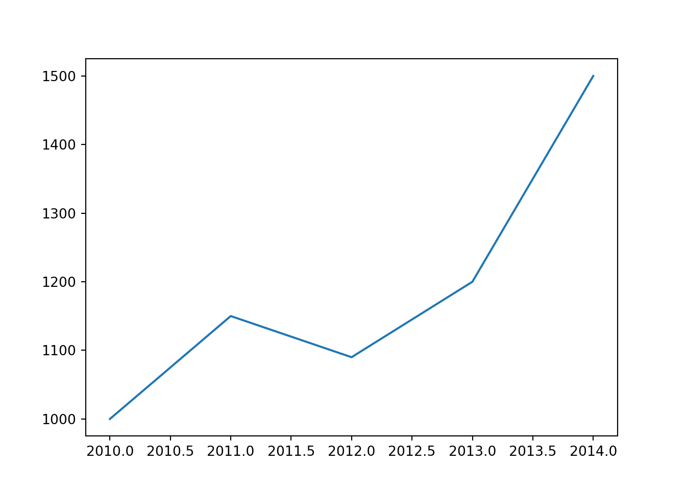
4.2.2.1.2 Puntos
import matplotlib.pyplot as plt
años = [2010, 2011, 2012, 2013, 2014]
pib = [1000, 1150, 1090, 1200, 1500]
plt.scatter(años,pib)
plt.show()
4.2.2.1.3 Histograma
# Histograma de la distribución de la variable ingreso
ingreso = np.round(np.random.normal(1000,100,5000),1)## Error: NameError: name 'np' is not definedplt.hist(ingreso, bins = 100)## Error: NameError: name 'ingreso' is not definedplt.show()
# Por defecto Python selecciona en 10 el número de bins. Muy pocos "bins" sobre simplifican.
# Muchos no permiten ver algún patrón en los datos4.2.2.2 Personalizar gráficos
# Agregar escalas logaritmicas
import matplotlib.pyplot as plt
años = [2010, 2011, 2012, 2013, 2014]
pib = [1000, 1150, 1090, 1200, 1500]
plt.scatter(años,pib)
plt.yscale("log") # Para cambiar las escalas a logaritmos
plt.show()
# Modificar el tamaño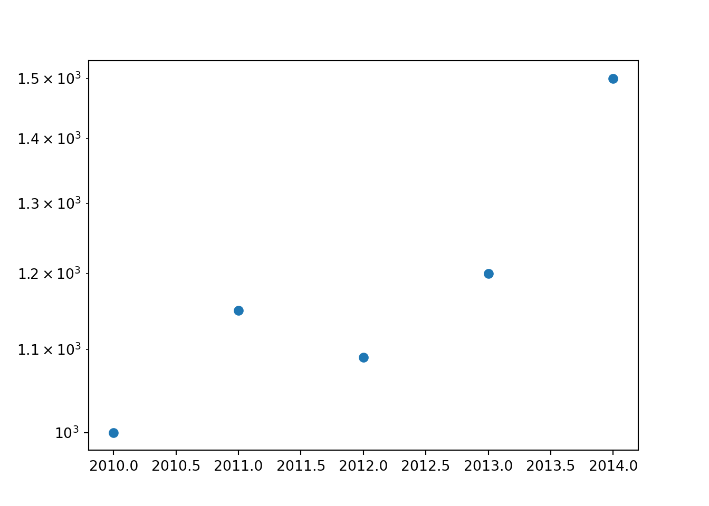
plt.figure(figsize=(8,6))
plt.plot([10,11,12,13,14], [15,16,17,18,19])
plt.grid(True)
plt.show()
# Modificar simbolos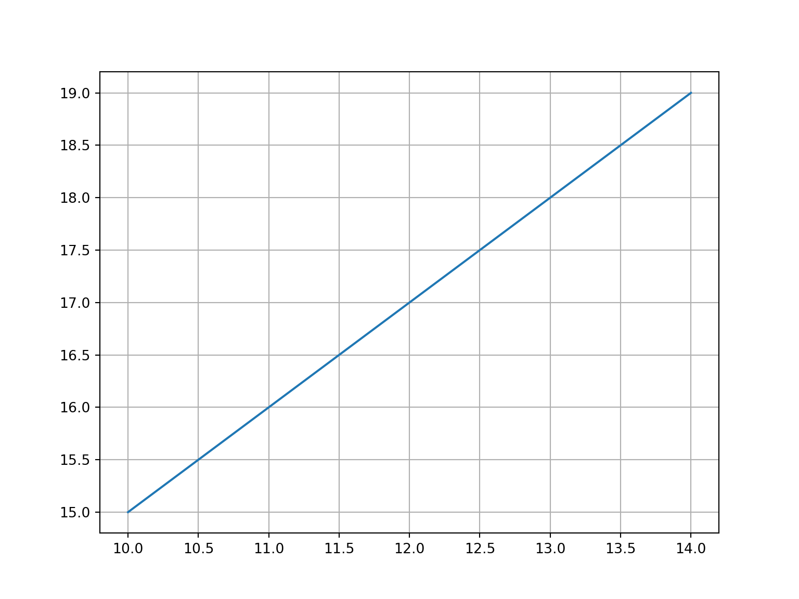
plt.plot([10,11,12,13,14], [15,16,17,18,19], "gd")
plt.grid(True)
plt.show()
# gd: green dot.
# Modificar color
x = [0,1,2,3,4,5]
x2 = [0,1,4,9,16,25]
plt.scatter(x,x2, s=10, color = "red")
plt.show()
# Agregar titulos y nombres de los ejes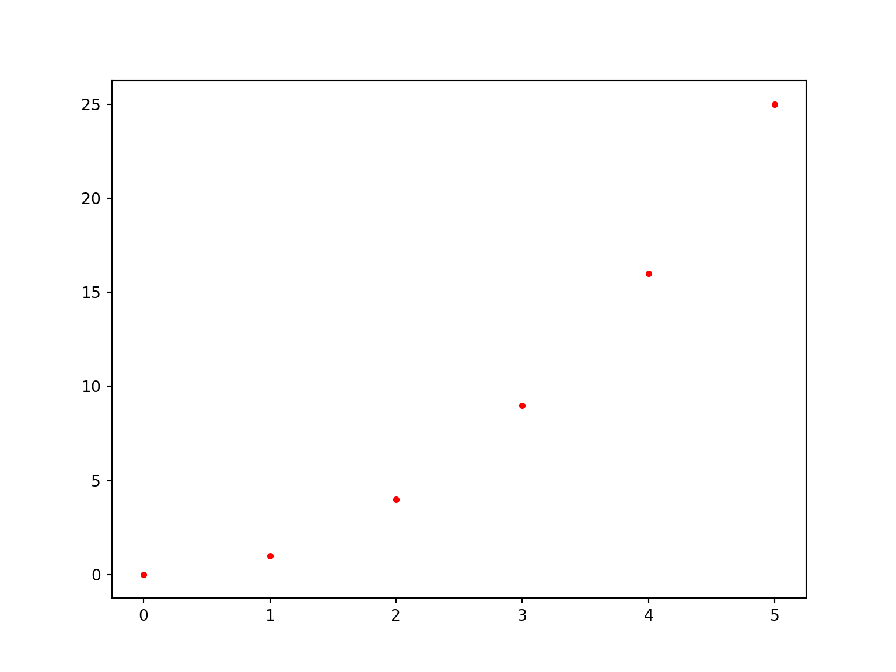
import matplotlib.pyplot as plt
años = [2010, 2011, 2012, 2013, 2014]
pib = [1000, 1150, 1090, 1200, 1500]
plt.plot(años,pib)
plt.xlabel("Años") # Titulo eje x
plt.ylabel("Producto interno bruto") # Titulo eje y
plt.title("Evolución PIB en el tiempo") # Titulon grafico
# Modificar los números de los ejes
import matplotlib.pyplot as plt
años = [2010, 2011, 2012, 2013, 2014]
pib = [1000, 1150, 1090, 1200, 1500]
plt.plot(años,pib)
plt.xlabel("Años") # Titulo eje x
plt.ylabel("Producto interno bruto") # Titulo eje y
plt.title("Evolución PIB en el tiempo") # Titulon grafico
plt.yticks([0,500,1000,1500,2000]) # Eje yplt.xticks([2010, 2011, 2012, 2013, 2014])# Eje x
# Colocar una etiqueta en el ejeimport matplotlib.pyplot as plt
años = [2010, 2011, 2012, 2013, 2014]
pib = [1000, 1150, 1090, 1200, 1500]
plt.plot(años,pib)
plt.xlabel("Años") # Titulo eje x
plt.ylabel("Producto interno bruto") # TItulo eje y
plt.title("Evolución PIB en el tiempo")
plt.yticks([0,500,1000,1500,2000], [0, "0.5M", "1M", "1.5M", "2M" ])
# Cambiar la opacidad x = [2,1,6,4,2,4,8,9,4,2,4,10,6,4,5,7,7,3,2,7,5,3,5,9,2,1]
plt.hist(x,
bins = 10,
color='blue',
alpha=0.2)plt.show()
# Alpha: cambia la opacidad del grafico. Entre 0 y 1.
# Cambiar color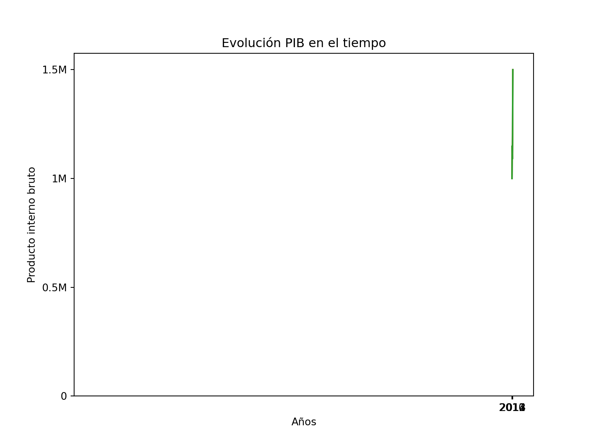
x = [5,6,3,7,2]
y = ["A", "B", "C", "D", "E"]
plt.bar(y,x, color = "green")plt.show()
# Grafico de barras horizontal y con color
#create data for plotting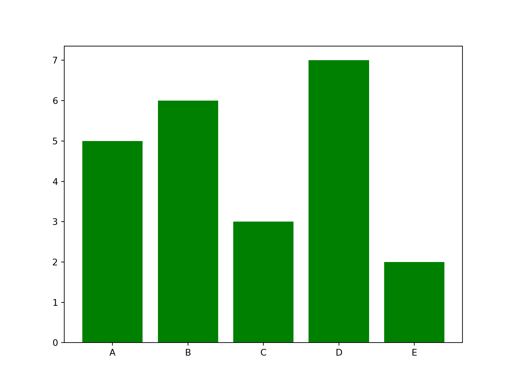
x = [5,6,3,7,2]
y = ["A", "B", "C", "D", "E"]
plt.barh(y,x, color ="yellowgreen")plt.show()
# Agregar texto al grafico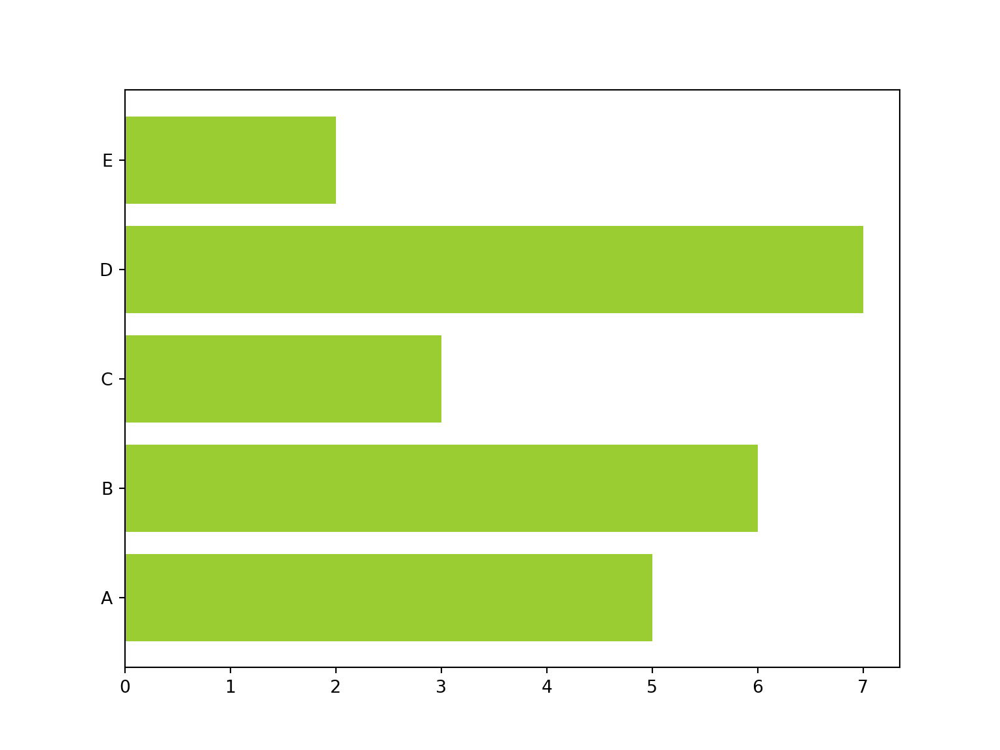
plt.plot([10,11,12,13,14], [15,16,17,18,19], 'rd')
plt.axis([10, 16, 15, 20])plt.xlabel('Eje x')
plt.ylabel('Eje y')
plt.text(11.2, 15.9, r'Este es el segundo punto')
plt.show()
# Agregar una linea horizontal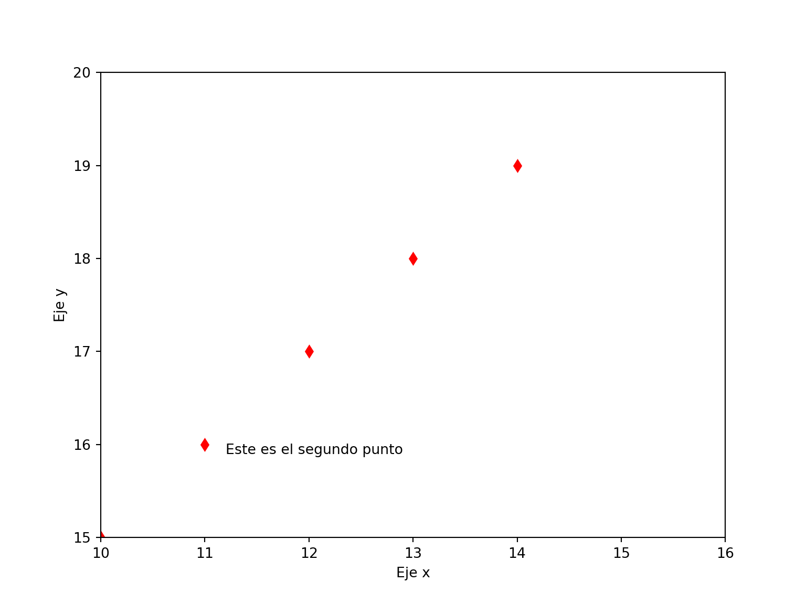
años = [2010, 2011, 2012, 2013, 2014]
pib = [1000, 1150, 1090, 1200, 1500]
plt.plot(años,pib)
plt.axhline(y=1200, ls='--', c='r')
plt.show()
# Agregar una linea vertical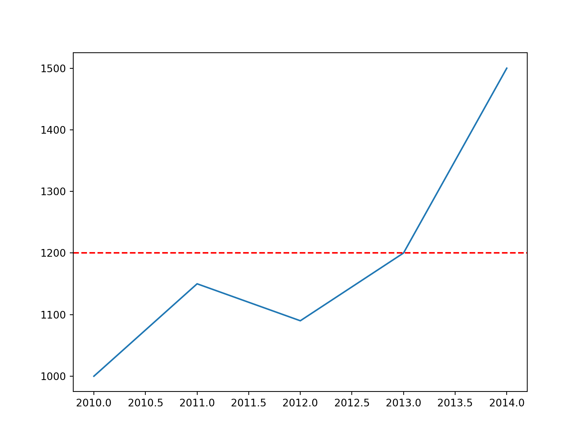
años = [2010, 2011, 2012, 2013, 2014]
pib = [1000, 1150, 1090, 1200, 1500]
plt.plot(años,pib)
plt.axvline(x = 2011, ls='--', c='r')
plt.show()
# Agregar caja con nombres 
x = np.linspace(0, 10, 30) # Devuelve números espaciados uniformemente en un intervalo especificado.## Error: NameError: name 'np' is not definedplt.plot(x, np.sin(x), label='seno')## Error: NameError: name 'np' is not definedplt.plot(x, np.cos(x), label='coseno')## Error: NameError: name 'np' is not definedplt.legend()
plt.show()
# Otra forma de agregar caja con nombres
plt.plot(x, np.sin(x))## Error: NameError: name 'np' is not definedplt.plot(x, np.cos(x))## Error: NameError: name 'np' is not definedplt.legend(["seno", "cos"])
plt.show()
# Cambiar la ubicación de la leyenda
plt.plot(x, np.sin(x))## Error: NameError: name 'np' is not definedplt.plot(x, np.cos(x))## Error: NameError: name 'np' is not definedplt.legend(["seno", "cos"], loc = "upper right")
plt.show()
# Visualización más compleja con más de una leyanda
lines = []
line_styles = ['-', '-.', '--', ':']
line_colors = ['red', 'blue', 'green', 'black']
x = np.linspace(0, 10, 1000)## Error: NameError: name 'np' is not definedfor i in range(4):
line, = plt.plot(
x,
np.sin(x - i * np.pi / 2),
line_styles[i],
color=line_colors[i]
)
lines.append(line)## Error: NameError: name 'np' is not definedlegend1 = plt.legend(lines[:2], ['part A', 'part B'], loc='upper right')
legend2 = plt.legend(lines[2:], ['part C', 'part B'], loc='lower right')
plt.gca().add_artist(legend1)
plt.gca().add_artist(legend2)
plt.show()
# Visualizar cuatro elemento: variable 1 y 2 con los ejes, variable 3 con color y variable 4 con tamaño- 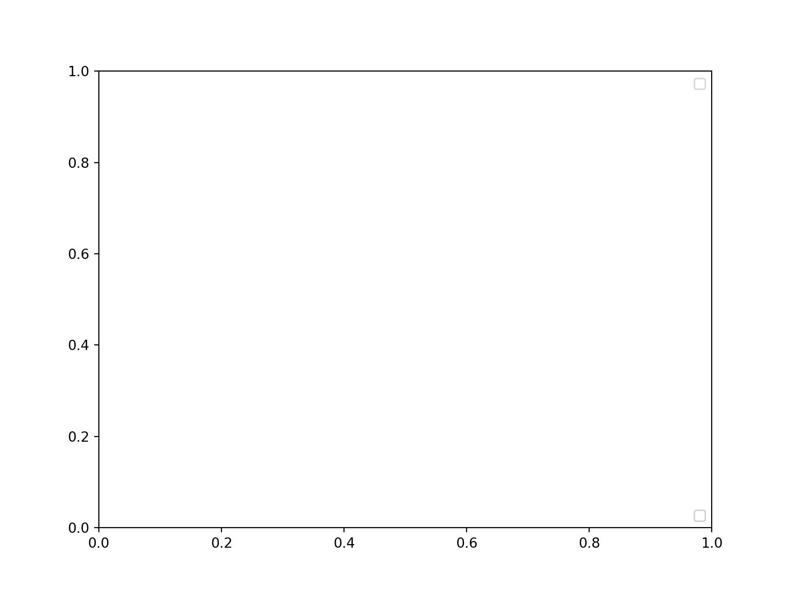
x = np.random.randn(100)## Error: NameError: name 'np' is not definedy = np.random.randn(100)## Error: NameError: name 'np' is not definedcolors = np.random.rand(100)## Error: NameError: name 'np' is not definedsizes = 100 * np.random.rand(100)## Error: NameError: name 'np' is not definedplt.scatter(x, y, c=colors, s=sizes, alpha=0.8, cmap='viridis') # cmap: color maps. Otro ejemplo: plasma## Error: NameError: name 'colors' is not definedplt.show()
Más colores en: https://matplotlib.org/3.5.0/tutorials/colors/colormaps.html
# Agregar barra de colores
# Visualizar cuatro elemento: variable 1 y 2 con los ejes, variable 3 con color y variable 4 con tamaño-
x = np.random.randn(100)## Error: NameError: name 'np' is not definedy = np.random.randn(100)## Error: NameError: name 'np' is not definedcolors = np.random.rand(100)## Error: NameError: name 'np' is not definedsizes = 100 * np.random.rand(100)## Error: NameError: name 'np' is not definedplt.scatter(x, y, c=colors, s=sizes, alpha=0.8, cmap='viridis') # cmap: color maps. Otro ejemplo: plasma## Error: NameError: name 'colors' is not definedplt.colorbar(orientation = "horizontal")## Error: RuntimeError: No mappable was found to use for colorbar creation. First define a mappable such as an image (with imshow) or a contour set (with contourf).plt.show()
Para ver más opciones de la librería: https://matplotlib.org/3.5.0/api/
x = np.linspace(0, 10, 11)## Error: NameError: name 'np' is not definedx
# Combinar tres histogramas en un graficoh1 = np.random.normal(0, 0.8, 1000)## Error: NameError: name 'np' is not definedh2 = np.random.normal(-3, 1.2, 1000)## Error: NameError: name 'np' is not definedh3 = np.random.normal(4, 0.5, 1000)## Error: NameError: name 'np' is not definedplt.hist(h1, bins=40, alpha=0.5)## Error: NameError: name 'h1' is not definedplt.hist(h2, bins=40, alpha=0.8)## Error: NameError: name 'h2' is not definedplt.hist(h3, bins=40, alpha=0.5)## Error: NameError: name 'h3' is not definedplt.show()
# Modificar la opacidad del grafico
x = [2,1,6,4,2,4,8,9,4,2,4,10,6,4,5,7,7,3,2,7,5,3,5,9,2,1]
#plot for a histogram
plt.hist(x, bins = 10, color='blue', alpha=0.2)plt.show()
# Alpha: cambia la opacidad del grafico. Entre 0 y 1.
# Generar graficos, combinarlos, pero uno despues del otro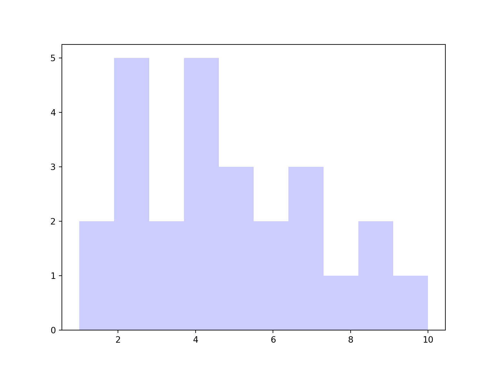
fig = plt.figure() # Genero un espacio para la figura
ax1 = fig.add_axes([0.1, 0.5, 0.8, 0.4], ylim=(-2, 2))
ax2 = fig.add_axes([0.1, 0.0, 0.8, 0.4], ylim=(-2, 2))
x = np.linspace(0, 10)## Error: NameError: name 'np' is not definedax1.plot(np.sin(x))## Error: NameError: name 'np' is not definedax2.plot(np.cos(x))## Error: NameError: name 'np' is not definedplt.show()
# Generate normal distributed sample points in 2-D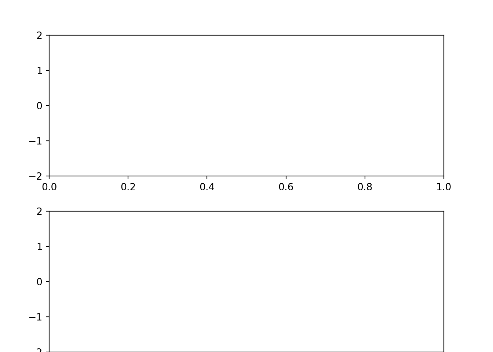
x, y = np.random.multivariate_normal([0, 0], [[1, 1], [1, 2]], 3000).T
# Define subplot styles## Error: NameError: name 'np' is not definedfig = plt.figure(figsize=(10, 10))
grid = plt.GridSpec(4, 4, hspace=0.2, wspace=0.2)
ax = fig.add_subplot(grid[:-1, 1:])
ax_x = fig.add_subplot(grid[-1, 1:])
ax_y = fig.add_subplot(grid[:-1, 0])
# Plot the data to subplots
ax.scatter(x, y, s=3, alpha=0.5)## Error: ValueError: x and y must be the same sizeax_x.hist(x, 40, orientation='vertical')ax_y.hist(y, 40, orientation='horizontal')ax_x.invert_yaxis()
ax_y.invert_xaxis()
plt.show()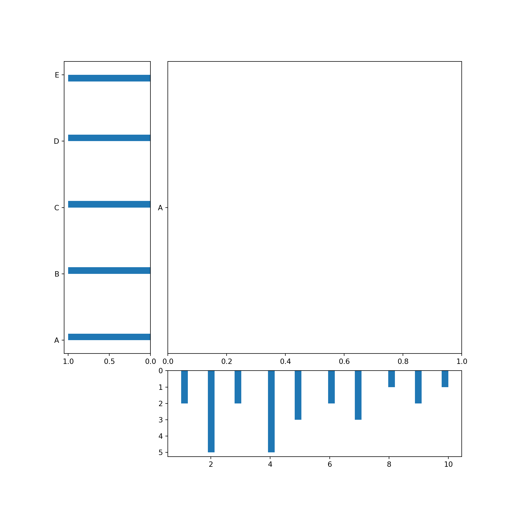
4.2.2.3 Ejemplo de generación de visualizaciones
# Preambulo
import pandas as pd # datos
import matplotlib as mpl # graficos
import datetime as dt # fechas
import numpy as np # arreglos
# Chequear todo
print('Pandas version: ', pd.__version__)
print('Matplotlib version: ', mpl.__version__)
print('Today: ', dt.date.today())
# PIB y consumo USA
gdp = [13271.1, 13773.5, 14234.2, 14613.8, 14873.7, 14830.4, 14418.7,
14783.8, 15020.6, 15369.2, 15710.3]
pce = [8867.6, 9208.2, 9531.8, 9821.7, 10041.6, 10007.2, 9847.0, 10036.3,
10263.5, 10449.7, 10699.7]
year = list(range(2003,2014)) # use range for years 2003-2013
# Creamos data frame
us = pd.DataFrame({'gdp': gdp, 'pce': pce}, index=year)
print(us.head(3))
# Pib percapita (World Bank data, 2013, thousands of USD)
code = ['USA', 'FRA', 'JPN', 'CHN', 'IND', 'BRA', 'MEX']
country = ['United States', 'France', 'Japan', 'China', 'India',
'Brazil', 'Mexico']
gdppc = [53.1, 36.9, 36.3, 11.9, 5.4, 15.0, 16.5]
wbdf = pd.DataFrame({'gdppc': gdppc, 'country': country}, index=code)
wbdfMétodo 1: Aplicar plot()
us
us.plot()
# Solo pib
us['gdp'].plot()
# ahora en barras
us.plot(kind='bar')
# Comp puntos
# Orden importa
us.plot.scatter('pce', 'gdp')Método 2: Aplicar la función plot(x,y)
# import pyplot module of Matplotlib
import matplotlib.pyplot as plt
us
us.index
plt.plot(us.index, us['pce'])
# Dos lineas juntas
plt.plot(us.index, us['gdp'])
plt.plot(us.index, us['pce'])
# Noten como python agrega
us
# Grafico de barras
plt.barh(us.index, us['gdp'], align = 'center')
# Agregamos nuevos elementos
plt.plot(us.index, us['gdp'])
plt.plot(us.index, us['pce'])
plt.title('US GDP', fontsize=12, loc='left') # Títutlo
plt.ylabel('Billions of 2009 USD') # Eje y
plt.xlabel("Years")
plt.xlim(2002.5, 2013.5) # Limites eje x
plt.tick_params(labelcolor='gray') # Colores
plt.legend(['GDP', 'Consumption']) # Nombres variables
plt.show()Método 3: Crear una figura vacía y aplicar metodos
# Creamos figura vacía
fig, ax = plt.subplots()
# Creamos con más cosas
fig, ax = plt.subplots()
# Agregamos cosas con metodos de ax
ax.plot(us.index, us['gdp'], linewidth=2, color='magenta')
ax.set_title('US GDP', fontsize=14, loc='left')
ax.set_ylabel('Billions of USD')
ax.set_xticks([2004, 2008, 2012])
ax.grid(True)
# Guardamos la figura
fig.savefig('resultados\\us_gdp.pdf')Múltiples sub-plots
# Creamos un arreglo de 2d
fig, ax = plt.subplots(nrows=2, ncols=1, sharex=True)
print('Objeto ax tiene dimensión', len(ax))
# Agregamos contenido
fig, ax = plt.subplots(nrows=2, ncols=1, sharex=True)
ax[0].plot(us.index, us['gdp'], color='green') # first plot
ax[1].plot(us.index, us['pce'], color='red') # second plot- Otro ejemplo: combinación método 1 y método 3
# grab the axis
ax = us.plot()
# Aplicamos métodos
ax = us.plot()
ax.set_title('US GDP and Consumption', fontsize=14, loc='left')
ax.set_ylabel('Billions of 2013 USD')
ax.legend(loc='center right')Ejercicio 4.2.1: Escribir una función que pregunte al usuario o usuaria por las ventas de un rango de años y muestre por pantalla un diagrama de líneas con la evolución de las ventas.
# Respuesta:
inicio = int(input("Introduce el año inicial: "))
fin = int(input("Introduce el año final: "))
# Definimos un diccionario vacio donde ir guardando los datos
ventas = {}
# Hacer una iteración
for i in range(inicio, fin + 1):
ventas[i] = input("Introduce las ventas del año: " + str(i))
# Armamos la figura:
fig, ax = plt.subplots()
ax.plot(ventas.keys(), ventas.values())
plt.show()4.2.3 Pandas
Esta librería nos permitirá analizar data como tablas, rectangular o data frames.
En las que las filas y columnas se identifican con etiquetas en lugar de con simples índices enteros
La documentación la encuentra aquí: https://pandas.pydata.org/docs/
4.2.3.1 Sintaxis básica: Ejemplo 1
# Importamos librería pandas
import pandas as pd
columnas = ["ind1", "ind2", "ind3"]
print(columnas)
# Transformemoslo
data = pd.DataFrame(columnas)
# Ahora los datos estan en un data.frame
print(data)
type(data)
# Ahora vamos a agregar nombres y nuevas columnas con un diccionario
nombres_columna = {"nombre": columnas,
"altura": [1.67, 1.9, 0.23],
"peso": [54, 100, 2]}
data = pd.DataFrame(nombres_columna)
print(data)
# Si queremos acceder a elementos
data["altura"]
# Si queremos acceder a un valor en particular, similar a las listas
seleccion_columna = data["altura"][2]
print(seleccion_columna)
seleccion_filas = data.iloc[2]
#data1.iloc?
print(seleccion_filas)
# Agregar nueva información
bmi = []
for i in range(len(data)):
bmi_score = data["peso"][i]/(data["altura"][i]**2)
bmi.append(bmi_score)
bmi
data["bmi"] = bmi
data
# Guardemos
data.to_csv("datos_ejemplo1.csv")4.2.3.2 Sintaxis básica: Ejemplo 2
# Importamos datos que utilizaremos durante la clase
from gapminder import gapminder
gapminder4.2.3.3 Inspeccionar un data frame
df = gapminder
df.head(5)
# Mirar las primeras 10 filas
df.head(5).tail(2)
df.tail()
# Mirar los tipos de datos
df.dtypes
# object se refiere a datos de texto.
# Mirar las columnas
print(df.columns)
type(df.columns)
# Mostrar N fila- M columna
print(df.shape)
# Mirar una columna en particular
# Caso 1
df['country']
# Todas: resumen estadistico
df.describe()
# Texto
df.country.describe()
# Numerica
df.lifeExp.describe()
print("min:", df.gdpPercap.min())
print("max:", df.gdpPercap.max())
print("mean:", df.gdpPercap.mean())
print("std:", df.gdpPercap.std())
print("count:", df.gdpPercap.count())4.2.3.4 Manipular
Renombrar:
# Renombrar variables: diccionario + rename
df.rename(columns = {'country': 'pais', 'continent':'continent',
'year':'año', 'lifExp':'esperanza_vida',
'pop':'poblacion', 'gdpPercap':'pib_percapita'})
# Ojo que no hemos asignado
df
df2 = df.rename(columns = {'country': 'pais', 'continent':'continente',
'year':'año', 'lifeExp':'esperanza_vida',
'pop':'poblacion', 'gdpPercap':'pib_percapita'})
# Recomendable generar una nueva base de datos, va dejando un registro
df2Filtrar:
solo_asia = df[df["continent"] == "Asia"]
# Lo que esta adentro es un vecto booleano
df["continent"] == "Asia"
df_asia = solo_asia
print(df_asia)Reemplazar:
datos_remplazados = df.replace("Asia", "asia")
print(datos_remplazados)Remover:
remover_columna = df.drop("pop", axis = 1)
print(remover_columna)
remover_dos_columnas = df.drop(["gdpPercap", "pop"], axis = 1)
print(remover_dos_columnas)
remover_filas = df.iloc[0:100]
print(remover_filas)Agregar nuevas filas:
nuevas_filas = {"country": "nuevo",
"continent": "Asia",
"year" : "2022",
"gdpPercap" : "100000000"}
df.append(nuevas_filas, ignore_index = True)
# Para agregar un diccionario es importante la úñtima opciónDescribir una base de datos:
# Agrupar un data frame: group_by
df_agrupado = df.groupby('year')
df_agrupado.mean()
# Sobre una variable en particular
df_agrupado = df[['gdpPercap', 'year']].groupby('year')
df_agrupado.mean()
# Podemos agrupar varias operaciones
df.groupby("year").agg({"lifeExp": np.mean, "gdpPercap": np.size})
# Agrupar por mas de una variable: año y continente
df.groupby(["year", "continent"]).agg({"lifeExp": np.mean, "gdpPercap": np.size})4.3 Herramientas de programación
4.3.1 Controladores de flujo
- Controlar los caminos de los códigos que programamos.
- Permite sofisticar procesos de análisis de datos.
- Veremos algunos típicos + otros que son propiamente de Python.
4.3.2 if-elif-else
# Sintaxis básica
x = -100
if x == 0:
print(x, "es cero")
elif x > 0:
print(x, "es positivo")
elif x < 0:
print(x, "es negativo")
else:
print(x, "cualquier cosa.")La operación if nos permite evaluar si se cumple una condición.
Por ejemplo: Iteramos sobre una lista entre (0, 10), si el valor es mayor que 5 muestra el resultado, caso contrario si es que no.
# Ejemplo sencillo
for i in range(0, 10): #iteración
if i > 5: #condición
print(i) #operación
# Puedo puedo definir variables dentro
a = 10
if a == 10:
x = a
print(x)
# Otros operadores con texto
a = 'texto2'
if a != 'texto':
print("ok")
# Dentro de una lista
# Es importante entender el flujo de los códigos que escribamos
a = [0, 'x', 3]
for i in range(0, len(a)):
print(a[i])
if i == 0:
print("ok")
elif i == 1:
print("ok2")
# Noten lo importante que es la sangria
if a == 10:
x = a
print(x)
# ¿Qué ocurre si movemos el print()?Como vimos en el ejemplo anterior, para poder realizar flujos de códigos que consideren varias situaciones vamos a usar if, elif y else.
Vamos a crear una lista A utilizando valores de una segunda lista B con valores entre 0-10.
Vamos a iterar sobre los valores de la lista A y realizar las siguientes operaciones:
Si el valor está entre 0-3 guardamos ese mismo valor en B
Si el valor es mayor que 3 y menor que 5 lo multiplicamos por 2
Si el valor es igual a 5 pedir ingresar un valor con la función
input()
Para todo el resto eleva el número al cuadrado
# 1. Cargamos numpy
import numpy as np
# 1. Creamos las listas
A = np.arange(0, 11, 1)
B = []
# 2. Iteramos sobre A
for i in A:
# Creamos la primera condición
if i >= 0 and i <= 3:
B.append(i)
# Segunda condición
elif i > 3 and i < 5:
B.append(i * 2)
# Tercera condición
elif i == 5:
B.append(float(input("Agregar un valor ")))
B.append(input("cualquier cosa: "))
# Para todo el resto
else:
B.append(i**2)
# ¿Qué ocurre de especial con el formato float()?
print("A:", A)
print("B:", B)- La función input() nos va a pedir entregar un valor. Esto es útil cuando necesitamos que el usuario nos reporte algún dato.
input()
# Noten que es un string. Tenemos que cambiarle el formato.
x = input("Su edad aquí: ")
type(x)
# Otro ejemplo con múltiples condiciones
llueve = True
salir = True
temperatura = 30
# Multiples condiciones
if llueve and salir:
usar_paraguas = True
elif llueve and not salir:
usar_paraguas = False
elif not llueve and salir and temperatura > 25:
usar_bloqueador = True
else:
vender_paragua = True
# Noten que el if no sigue en caso de que una condición ya esta saldada.
print("Paraguas:", usar_paraguas)
print("Bloqueador:", usar_bloqueador)
print("Vender Paraguas:", vender_paragua)
# Defino variables
cuarto = "cocina"
area = 10.0
# Para habitaciones
if cuarto == "cocina" :
print("Mira en la cocina")
elif cuarto == "cuarto":
print("Mira en el cuarto")
else :
print("Mira en cualquier lugar")
# Para areas
if area > 15 :
print("Gran tamaño")
elif area > 10 :
print("Tamaño normal")
else :
print("Bastante pequeño")Ejercicio 4.3.1: Escriba un programa que tenga como resultado su nombre si la edad ingresada es multiplo de 5. Note que la edad debe ser ingresada por el mismo usuario. Si la edad no es multiplo de 5 el programa debe dar como resultado su apellido.
edad = int(input("Diga su edad: "))
if edad % 5 == 0:
print("Nicolás")
else:
print("Campos")4.3.3 Iteradores básicos
4.3.3.1 For loop
# For loops
for N in [2, 3, 5, 7, 9, 11]:
print(N)
# For
for i in range(10):
print(i, end = " ")
# Todo en la misma linea
# Podemos iterar sobre una lista: iteramos en el rango de valores que tiene la lista
x = [0, 1, 'a', True]
for i in range(0, len(x)):
print(i, end = " ")
for i in range(0, len(x)):
print(x[i], end = " ")
# Podemos iterar sobre un array
import numpy as np
x = np.array([0, 1, 2, 3])
for i in range(0, len(x)):
print(i,end = " ")
# Podemos iterar sobre un string
for a in "Nicolas" :
print(a.capitalize(), end = " ")
# Podemos iterar en una lista de listas
# Lista de listas
casa = [["living", 11.25],
["cocina", 18.0],
["comedor", 20.0],
["habitacion", 10.75],
["baño", 9.50]]
print(casa)
# Iteramos
for x in casa :
print("La " + x[0] + " es de " + str(x[1]) + " m2")
# Noten que el x en si mismo es una lista con dos elemenos.
# Utilizando subconjuntos de listas podemos ir llamando a los elemenos del iterador.
# Creamos x y y fuera de la iteración
x = 0
y = 0
for i in range(1, 5):
z = 0 # creamos z dentro de la iteración
x = x + i
y = i
z = z + i
print("i:", i, ", x=", x, ", y=", y, ", z=", z)
# Podemos generar objetos para ir iterando sobre ellos. Recordar: linspace (inicio, término, cantidad de elementos)
a = np.linspace(1, 10, 5)
print("type de a:", type(a))
print("a: ", a)
#arange(inicio, término, separador)
b = np.arange(1, 10,1)
print("type de b:", type(b))
print("b: ", b)- Veamos dos versiones alternativas de hacer el mismo for, pero anidado
print(a,b)
# For anidados.
# 1. Creamos una lista
lista1 = []
# 2. Iteramos sobre los valoes de a y b
for i in a:
for j in b:
#3. Anexamos una operación a la lista
# print((i, j), "multiplicacion:", i * j)
lista1.append(i * j)
print(lista1)
#1. Creamos una lista 2
lista2 = []
#2. Iteramos sobre el largo de las listas a y b
for i in range(0, len(a)):
for j in range(0, len(b)):
#3. Anexamos una operación a la lista
lista2.append(a[i] * b[j])
print(lista2)
#Podemos sumar los valores de una lista con sum()
print("suma de la lista:", sum(lista2))
lista1 == lista2
# Puedo ingresar tuplas de forma tal de recuperar el indice y el resultado!
lista = [1.73, 1.68, 1.71, 1.89]
for index, a in enumerate(lista):
print("indice " + str(index) + ": " + str(a))
# Noten que utilizamos un enumerate().
# Esto es un interador.
# Revisaremos más de estos en la siguiente sección
# Como pueden ver auenta nuestra posibilidades en Python
# Se pueden saltar en saltos de más de uno? (en tuplas?)4.3.3.2 While loop
- No muy común
- Útil para resolver problemas de optimización
error = 50
while error > 1:
error = error/4
print(error)
# Otra forma más típica de hacer la actualización
i = 0
while i < 10:
print(i, end=' ')
i += 1
# While loop: pueden ser eternos. ¿Utilidad practica?
i = 0
while i < 10:
print(i, end=' ')
i = i + 1
# Recuerden que puedo agregar condicionales
# Condición inicial
inicial = 10
while inicial != 0 :
print("corregir...")
if inicial > 0 :
inicial = inicial - 1
else:
inicial = inicial + 1
print(inicial)4.3.3.3 Opcionales: break y continue
- break: quiebra loop
- continue: siguiente
# Se lo salta
for n in range(10):
if n % 2 == 0:
continue
print(n, end=' ')
# No continua si se llega a un nivel predeterminado
a, b = 0, 1
amax = 1000
L = []
while True:
(a, b) = (b, a + b)
if a > amax:
break
L.append(a)
print(L)4.3.3.4 Iterar sobre diccionarios y arreglos
- Hay que tener cuidado al iterar sobre estos objetos
- Veamos dos ejemplos
# Diccionarios
mundo = {"Burgos": 30.55,
"Villasana de Mena": 2.77,
"Santiago": 39}
mundo
for key, value in mundo:
print(key + ":" + str(value))
# Tenemos que utilizar un metodo
for key, value in mundo.items():
print(key + ": " + str(value))
mundo.items()
type(mundo.items())
# Ejemplo:
europa = {'spain':'madrid', 'france':'paris', 'germany':'berlin',
'norway':'oslo', 'italy':'rome', 'poland':'warsaw', 'austria':'vienna' }
# Iterar sobre un diccionario
for key, value in europa.items() :
print("the capital of " + str(key) + " is " + str(value))
# Noten que hacermos el for con una tupla!
# Arreglo 2d
np_altura = np.array([1.73,1.68,1.71,1.89,1.79])
np_peso = np.array([65.4,32.2,42.3,42.3,89.2])
meas = np.array([np_altura,np_peso])
print(meas)
for val in meas:
print(val)
for val in np.nditer(meas):
print(val)4.3.3.5 Iterar sobre Pandas
- Hay que tener cuidado al iterar sobre estos objetos
- Veamos dos ejemplos
from gapminder import gapminder
gapminder
# Primer intento
for val in gapminder:
print(val)
# No entiende que queremos...
# Utilizamos iterrows method
for lab,row in gapminder.iterrows():
print(lab)
print(row)
# Lab esta asociado al ID de un data frame
# row es toda la fila asociada
# Podemos hacerlo selectivamente
for lab,row in gapminder.iterrows():
print(str(lab) + ": " + row["continent"])
# Agregar una columna con un iterador
for lab,row in gapminder.iterrows():
gapminder.loc[lab, "tamaño_continente"] = len(row["continent"])
# Es solo un ejemplo, no es muy eficiente.
# Otro ejemplo, utilizando una función en vez de un método
for lab,row in gapminder.iterrows():
gapminder.loc[lab, "continente_mayus"] = row["continent"].upper()
# Es solo un ejemplo, no es muy eficiente.
gapminder
# Opcion alternativa: buscar un method y vectorizar
gapminder["tamaño_continente_vect"] = gapminder["continent"].apply(len)
# Esta es la opción eficiente.
gapminder
gapminder["Cont_mayus_vect"] = gapminder["continent"].apply(str.upper)
gapminder4.3.4 Iteradores adicionales en Python
4.3.4.1 Enumerate
- usar cuando: queremos tener registro tanto del indice como del valor asociado
L = [2, 4, 6, 8, 10]
for i in range(len(L)):
print(i, L[i])
for i, val in enumerate(L):
print(i, val)4.3.4.2 Zip
- usar cuando: Se quiera iterar sobre múltiples listas simultaneamente
L = [2, 4, 6, 8, 10]
R = [3, 6, 9, 12, 15]
for lval, rval in zip(L, R):
print(lval, rval)
# Si son de distinto tamaño?
L = [2, 4, 6, 8, 10]
R = [3, 6, 9]
for lval, rval in zip(L, R):
print(lval, rval)
# Va a utilizar como referencia el más corto4.3.4.3 Map
- usar cuando: quiera tomar una función y aplicarla al valor dentro de un objeto
# Defino una función
cuadrado = lambda x: x ** 2
for val in map(cuadrado, range(100)):
print(val, end = " ")
# Nota: Una función lambda puede tomar cualquier número de argumentos, pero sólo puede tener una expresión.
# Otro ejemplo: importar funciones especificas a una librearía
import math
for val in map(math.sqrt, range(100)):
print(val, end = " ")4.3.4.4 Filter
- similar a map, excepto que pasa valores que son considerados verdaderos por la función de filtrado
# Itera sobre los valores para los cuales se cumple la condición
es_par = lambda x: x % 2 == 0
for val in filter(es_par, range(100)):
print(val, end=' ')Ejercicio 4.3.2: Genere un código que tome una lista de strings y calcule su tamaño.
lista_strings = ["Rodrigo", "Santiago", "Tania", "Laura", "Nicolás"]
lista_final = list(map(len,lista_strings))
print(lista_final)4.3.5 List Comprehension
- Es una forma de comprimir la construcción de un objeto utilizando un iterador.
[i for i in range(20) if i % 2 == 0]
# El resultado es una lista que solo considera los números pares.
# Un for-loop
L = []
for n in range(12):
L.append(n ** 2)
L
[n ** 2 for n in range(12)]
# construir una lista formada por el cuadrado de n para cada n hasta 12image.png
image.png
4.3.5.1 Iteración Múltiple
- objetivo: armar for-loops anidados en una linea
[(i, j) for i in range(2) for j in range(3)]
[(i, j, z) for i in range(2) for j in range(3) for z in range(3)]4.3.5.2 Condicionales en el iterador
- Idea: agregar condicionales al final de la expresión.
# Construir una lista de valores para cada valor hasta 20, pero sólo si el valor no es divisible por 3"
[val for val in range(20) if val % 3 > 0]
# Equivalente a
L = []
for val in range(20):
if val % 3 > 0:
L.append(val)
L
val = -1000
val if val >= 0 else -val
# ¿Qué función es esta?
# Una más compleja
# construir una lista, dejando fuera los múltiplos de 3, y haciendo negativos todos los múltiplos de 2.
[val if val % 2 else -val for val in range(20) if val % 3]
# Se puede extender para otro tipo de objetos, por ejemplo a conjuntos
{n**2 for n in range(12)}
{a % 3 for a in range(1000)}Ejercicio 4.3.3: Escriba los siguientes procesos iterativos en formato de list comprehension:
# Parte a
numeros = [3,5,45,97,32,22,10,19,39,43]
resultado = []
for n in numeros:
if n % 2 == 0:
resultado.append(n)
print(resultado)
[n for n in numeros if n % 2 == 0]
# Parte b: Cuente el número de espacios en un string cualquiera
string = "Mi nombre es Nicolás Campos "
len([x for x in string if x == " "])4.3.6 Generadores
- Similar a los iteradores de listas, pero ahorra bastate memoria, es eficiente.
# Hasta el momento
[n ** 3 for n in range(12)]
# Un generador
(n ** 2 for n in range(12))
# No genera el contenido.
# Si lo quiero expresar
G = (n ** 2 for n in range(12))
list(G)- Un generador es básicamente un recipiente en donde se van a colocar valores.
- Un generador no calcula los valores a menos que sea necesario, lo cual aumenta su eficiencia.
# Generadores utilizan parentesis
G = (n ** 2 for n in range(12))
list(G)
# Una lista es una colección de valores
L = [n ** 2 for n in range(12)]
for val in L:
print(val, end=' ')
# Un generador es un recipiente para guardar valores
G = (n ** 2 for n in range(12))
for val in G:
print(val, end=' ')
# El potencial del generador es mayor
L1 = [n ** 2 for n in range(10)]
L2 = []
for n in range(10):
L2.append(n ** 2)
print(L1)
print(L2)
G1 = (n ** 2 for n in range(10))
def gen():
for n in range(10):
yield n ** 2
G2 = gen()
print(*G1)
print(*G2)
# Utiliza yield para representar una secuencia potencialmente infinita de valores
# Recordemos que estos dos aspectos son iguales
L1 = [n ** 2 for n in range(12)]
L2 = []
for n in range(12):
L2.append(n ** 2)
print(L1)
print(L2)
# Si queremos hacer la equivalencia, pero con generadores tenemos
G1 = (n ** 2 for n in range(12))
def gen():
for n in range(12):
yield n ** 2
G2 = gen()
print(*G1)
print(*G2)
# Noten que tuve que ingresar la función yield en vez de return.
# La idea es que pueda incluir potencialmente una lista infinita de valores.- Un generador se puede utilizar una vez, un iteador normal muchas veces
L = [n ** 2 for n in range(12)]
# Normal
for val in L:
print(val, end=' ')
print()
# Generador
G = (n ** 2 for n in range(12))
list(G)
list(G)4.3.6.1 Algoritmo de erastotenes
- Vamos a generar un algoritmo que nos permita obtener todos los numeros primos bajo un cierto número natural dado.
# Generamos una lista de candidatos
L = [n for n in range(2, 10)]
print(L)
# Removemos todos los múltiplos de dos salvo si mismo
L = [n for n in L if n == L[0] or n % L[0] > 0]
print(L)
# Removemos todos los múltiplos de tres salvo si mismo
L = [n for n in L if n == L[1] or n % L[1] > 0]
print(L)
# Asi sucesivamente hasta converger
L = [n for n in L if n == L[2] or n % L[2] > 0]
print(L)
# Asi sucesivamente hasta converger
L = [n for n in L if n == L[3] or n % L[3] > 0]
print(L)
# Generamos esto como un generador
def gen_primos(N):
"""Generar primos hasta N"""
primos = set()
for n in range(2, N):
if all(n % p > 0 for p in primos):
primos.add(n)
yield n
print(*gen_primos(1000))- Es conveniente utilizar generadores cuando se trabajan con grandes bases de datos.
- Es importante recordar que el generador solo puede ser iterado una vez.
- No es conveniente utilizar generadores cuando necesitamos los valores previos. Recuerden que solo itera una vez.
- Cuando tengo bases de datos pequeñas no es necesario.
- ¿Puedo escribir lo anterior con un for? : Si, el generador es por la actualización y el espacio.
4.3.7 Funciones
Parte importante de cualquier proceso sofisticado de análisis de datos
Son lo que conocemos como programas en Stata.
Tres grupos principales:
Funciones incorporadas, como help() para pedir ayuda, min() para obtener el valor mínimo, print() para imprimir un objeto en la terminal. Listado: https://docs.python.org/3/library/functions.html
Funciones definidas por el usuario (UDFs), que son funciones que los usuarios crean para mejorar sus procesos.
Funciones anónimas, que también se llaman funciones lambda porque no se declaran con la palabra clave def estándar.
Diferencia entre metodos y funciones?
- Metodo es especifico a una clase de objeto
- Todos los metodos son funciones, pero no todas las funciones son metodos.
4.3.7.1 Sintaxis básica y algunos ejemplos
def miprimerafuncion(a): #declaramos la función y establecemos el input
b = a * 2 #definimos qué hace la función
return b #Establecemos un output
# llamamos la función
miprimerafuncion("nico")
def miprimerafuncion_sr(a):
a * 2
miprimerafuncion_sr(15)
b = 100
print(miprimerafuncion(b))
print(miprimerafuncion(1000))
# Funciones con más de un argumento
def ejemplo2(a, b):
return a * b, a ** b
type(ejemplo2(10,2))
# Funciones que puedo asignar como tuplas
X, Y = ejemplo2(10,2)
print("X =", X, "Y =", Y)
# Funciones sin argumentos
def hello():
print("Hola mundo")
return
hello()
def fibonacci(N):
L = []
a, b = 0, 1
while len(L) < N:
a, b = b, a + b
L.append(a)
return L
fibonacci()
## Valores por parametros y opciones por defecto
def fibonacci_cd(N, a = 0, b = 1):
L = []
while len(L) < N:
a, b = b, a + b
L.append(a)
return L
fibonacci(10)
# Por defecto
fibonacci_cd(10)
# Variables locales y variables globales
def ejemplo3(a):
AA = []
AA.append(a)
return AA
C = ejemplo3("hola")
print(C)
print(C)Una variable local va a existir en un lugar específico.
Dentro de la función ejemplo3(a) definimos A=, esta variable A existe sólo dentro de la función ejemplo3(), es decir es una variable local.
Cuando decimos que A = ejemplo3(“hola”) estamos definiendo una variable global, que existe en todo el espacio del Jupyter, una vez definida puede ser llamada en en cualquier parte.
# Ahora vamos a crear una función que nos permita interactuar con los/las usuarias
#1. Creamos la función con un input A
def ejemplo4(A):
#2. Creamos una lista vacía
B = []
#3. Iteramos sobre A
for i in A:
#Creamos la primera condición
if i >= 0 and i<= 3:
B.append(i)
#Segunda condición
elif i > 3 and i<5:
B.append(i*2)
#Tercera condición
elif i==5:
B.append(input("Agregar un valor"))
#Todo el resto
else:
B.append(i**2)
#4. Output
return B
# Creamos una lista entre 0-10
A = np.arange(0, 11, 1)
#Llamamos la función y guardamos el resultado en una variable global
B = ejemplo4(A)
print("A:", A)
print("B:", B)
# Otro ejemplo
def hello():
name = str(input("Tu nombre aquí: "))
if name:
print ("Hola " + str(name))
else:
print("Hola no más")
return
hello()
# Notemos el uso de return
def hola():
print("Hola mundo")
return("hola")
hola() * 2
def hola_sinreturn():
print("Hola mundo")
hola_sinreturn() * 2
# Arroja un error
# Funciones anidadas (revisar prox clase)
def display(name):
def message():
return "Hello "
return name
print(message(), display(" Siva"))4.3.7.2 Argumentos de las funciones en Python
## Defecto
def plus(a,b = 2):
return a + b
plus(1)
plus(1, 3)
# Requeridos: son los que necesita la funcion
def plus(a,b):
return a + b
plus()
# Argumentos clave
def plus(a,b):
return a - b
plus(2,3)
plus(b = 2, a = 4)
plus(2,4)4.3.7.3 args and kwargs: argumentos flexibles
- idea: Querer escribir una función en la que no sepas inicialmente cuántos argumentos va a tener.
*argsy**kwargspermiten trabajar con este tipo de problemas
def catch_all(*args, **kwargs):
print("args =", args)
print("kwargs = ", kwargs)
catch_all(1, 2, 3, 4,5,65, a = 4, b = 5)
catch_all('a', keyword=2)Aquí lo importante no son los nombres args y kwargs, sino los caracteres * que los preceden.
argsykwargsson sólo los nombres de las variables que se utilizan a menudo por convención, abreviatura de “argumentos” y “argumentos de palabras clave”.La diferencia operativa son los caracteres de asterisco: un solo * antes de una variable significa “expandir esto como una secuencia”, mientras que un doble ** antes de una variable significa “expandir esto como un diccionario”.
# Tambien puedo ocupar esta sintaxis (* y **) al llamar variables dentro de una función
inputs = (1, 2, 3)
keywords = {'pi': 3.14}
catch_all(*inputs, **keywords)4.3.7.4 Anonymous (lambda) Functions
- Idea: quiero hacer funciones que sean anonimas
# Caso 1
add = lambda x, y: x + y
add(1, 2)
# Caso 2
def add(x, y):
return x + y
# Noten que esta función no tiene nombre
double = lambda x: x*2
double(5)
# Con dos argumentos
sum = lambda x, y: x + y;
sum(4,5)- Caso 1 y Caso 2 son equivalentes
- ¿Por qué quiero escribir entonces funciones lambda?:
- Función por un periodo corto de tiempo.
- O cuando tenemos una función que tiene como input otras funciones.
from functools import reduce
lista = [1,2,3,4,5,6,7,8,9,10]
# Filtro: filtra según un criterio. En este caso el criterio es una función creada por mi y anonima
filtrado_list = list(filter(lambda x: (x*2 > 10), lista))
# Mapeo: aplica una función a un objeto. En este caso una anonima
mapeo_list = list(map(lambda x: x*2, lista))
# Reducir: reduce la secuencia a un simple valor. Suma el acumulado finalmente.
reducedico_list = reduce(lambda x, y: x+y, lista)
print(filtrado_list)
print(mapeo_list)
print(reducedico_list)
#reduce?4.3.7.5 Documentar funciones
- Es útil documentar lo que hacen las funciones que hacemos
def count_letter(content, letter):
"""Cuenta el número de veces que una `letra` aparece en `contenido`.
Argumentos:
contenido (str): La palabra (string) donde vamos a ir a buscar.
letra (str): La letra que vamos a ir a buscar.
Retorna:
int
"""
return len([char for char in content if char == letter])
result = count_letter("nicolascampos", "s")
print(result)
count_letter?Ejercicio 4.3.4:
Crear una función que calcule la estimación del ingreso según la ecuación de Mincer:
\(Ln(Y)=\beta_0+\beta_1S+\beta_2^2 Exp+ Exp2\)
Donde:
\(S\): años de educación
\(Exp\): experiencia
\(Exp2\): experiencia al cuadrado
Utilice: _0=9.7, _1=0.14, _2=0.07, _3=−0.001
def mincer(S , Exp):
ß0 = 9.7
ß1 = 0.14
ß2 = 0.07
ß3 = -0.001
return ß0 + ß1*S + ß2*Exp + ß3*Exp**2
educ_list = np.array([14,8,20])
exp_list = np.array([2,20,1])
print(mincer(educ_list, exp_list))4.4 Manipulación de bases de datos (Parte I)
4.4.1 Importar e inspeccionar datos (repaso)
- ¿Cuál es mi directorio?
import os
os.getcwd()
os.listdir()
# Carpetas
principal = os.getcwd()
datos = principal + "\\datos"
datos
resultados = principal + "\\resultados"
resultados
# Recordar como es un dataframe de pandas
import pandas as pd
exam_data = {'name': ['Anastasia', 'Dima', 'Katherine', 'James', 'Emily', 'Michael', 'Matthew', 'Laura', 'Kevin', 'Jonas'],
'score': [12.5, 9, 16.5, np.nan, 9, 20, 14.5, np.nan, 8, 19],
'attempts': [1, 3, 2, 3, 2, 3, 1, 1, 2, 1],
'qualify': ['yes', 'no', 'yes', 'no', 'no', 'yes', 'yes', 'no', 'no', 'yes']}
labels = ['a', 'b', 'c', 'd', 'e', 'f', 'g', 'h', 'i', 'j']
df = pd.DataFrame(exam_data , index = labels)
df
# Importamos datos que utilizaremos durante la clase
from gapminder import gapminder
gapminder
df = gapminder
df.head(10)
# Acceder al nombre de las columnas
df.columns
# Acceder al nombre de las filas
print(df.index)
# Acceder a valores
df.values
# Nuevamente el tipo
type(df)
# Forma
df.shape
# Inspeccion detallada de las columnas
df.info()
# Mirar una sola columna
df['country']
# Crear un nuevo dataset
country_df = df["country"]
country_df
type(country_df)
# Tenemos una serie: cada columna es una serie para python. Similar a un arreglo 1D.
# Sunconjuntos de variables
subset = df[["country", "continent", "year"]]
subset.head()
df
# Buscamos la fila con el indice 2
df.loc[3]
# Buscamos las filas con el id en 0 u 2
df.loc[[3,0,100]]
df.iloc[3]
df.iloc[[3,0,100]]- loc se refiere al nombre de la unidad de observación (labeling indexing).
- iloc se refiere al índice (positional indexing).
- En este caso son iguales dado que los nombres son efectivamente las posiciones. En casos donde esto no sea así, es importante considerar la diferencia al utilizar estas funciones.
# Recordar filas y columnas
subset = df.loc[:,["year", "pop"]]
subset.head()
# Para hacer filtros en base a condiciones
# Filtramos todas las filas que tienen como año 1967
df.loc[df["year"] == 1967, ["year", "pop"]]
# Ahora con múltiples condiciones
# Ocupar paretesis redondos
# Ocupar entre ellos iperadores de comparación
# Note como escrbimimos el número
df.loc[(df["year"] == 1967) & (df["pop"] > 1_000_000), ["year", "pop"]]
1_000_000
scientists=pd.DataFrame(
data={'Occupation':['Chemist','Statistician'],
'Born':['1920-07-25', '1876-06-13'],
'Died':['1958-04-16', '1937-10-16'],
'Age':[37,61]},
index=['Rosaline Franklin','William Gosset'],
columns=['Occupation', 'Born','Died','Age'])
scientists
import os
os.getcwd()
os.listdir()
# Carpetas
import os
principal = os.getcwd()
datos = principal + "\\datos"
datos
resultados = principal + "\\resultados"
resultados
scientists = pd.read_csv('datos\\scientists.csv')
scientists
ages = scientists['Age']
ages
ages = scientists.Age
ages
type(ages)
ages.mean()
ages.shape
ages.min()
ages.describe()
ages[ages > ages.mean()]
ages[(ages > ages.mean()) & (ages > 75)]
ages[(ages > ages.mean()) & ~(ages > 75)]
ages.describe()
ages + 100
scientists
scientists[scientists['Age'] > scientists['Age'].mean()]
scientists['Age'] > scientists['Age'].mean()
scientists
# Ordenar valores
scientists.sort_values(by="Age", ascending = False)
scientists.to_csv('resultados\\scientists_clean.csv', index=False)4.4.2 Manipular (repaso)
4.4.2.1 Renombrar
# Renombrar variables: diccionario + rename
df.rename(columns = {'country': 'pais', 'continent':'continent',
'year':'año', 'lifExp':'esperanza_vida',
'pop':'poblacion', 'gdpPercap':'pib_percapita'})
# Ojo que no hemos asignado
df
df2 = df.rename(columns = {'country': 'pais', 'continent':'continente',
'year':'año', 'lifeExp':'esperanza_vida',
'pop':'poblacion', 'gdpPercap':'pib_percapita'})
# Recomendable generar una nueva base de datos, va dejando un registro
df24.4.2.2 Filtrar
solo_asia = df[df["continent"] == "Asia"]
# Lo que esta adentro es un vecto booleano
df["continent"] == "Asia"
df_asia = solo_asia
print(df_asia)4.4.2.4 Remover
remover_columna = df.drop("pop", axis = 1)
print(remover_columna)
remover_dos_columnas = df.drop(["gdpPercap", "pop"], axis = 1)
print(remover_dos_columnas)
remover_filas = df.iloc[0:100]
print(remover_filas)
#### Agregar nuevas filas
nuevas_filas = {"country": "nuevo",
"continent": "Asia",
"year" : "2022",
"gdpPercap" : "100000000"}
df.append(nuevas_filas, ignore_index = True)
# Para agregar un diccionario es importante la úñtima opciónEjercicio 4.4.1:
- Escriba una función llamada
ins_simplque le permita a usted obtener un resumen exploratorio de su base de datos. - La función debe tener como input un dataframe y retornar 5 outputs:
- Primerar y últimas 8 filas.
- Tipo de datos para todas las columnas
- Nombre de las columnas
- Descripción completa de la base de datos (metodo: describe)
- El mínimo, máximo y el promedio de la columna 4 de la base de datos.
4.4.3 Agrupar calculos
df = gapminder
df.head()
df.groupby('year')['gdpPercap'].mean()
df.groupby(['year', 'continent'])[['lifeExp', 'gdpPercap']].mean()
# Otra forma de escribir lo mismo
df\
.groupby(['year', 'continent'])[['lifeExp', 'gdpPercap']]\
.mean()
# Para dejarlos como un dataframe -> reset_index
(df
.groupby(['year', 'continent'])[['lifeExp', 'gdpPercap']]
.mean()
.reset_index()
)
# Combinar lo que obtengo con visualizaciones
import matplotlib.pyplot as plt
(df
.groupby(['year'])
[['lifeExp']]
.mean()
.plot()
)
plt.show()
# Imprima un subconjunto de datos
solo_asia = gapminder.groupby('continent')
asiaDf = solo_asia.get_group('Asia')
asiaDf
# Contar valores por grupp
gapminder["continent"].value_counts()
# Agrupar un data frame: group_by
df_agrupado = df.groupby('year')
df_agrupado.mean()
# Sobre una variable en particular
df_agrupado = df[['gdpPercap', 'year']].groupby('year')
df_agrupado.mean()
# Podemos agrupar varias operaciones
df.groupby("year").agg({"lifeExp": np.mean, "gdpPercap": np.size})
# Agrupar por mas de una variable: año y continente
df.groupby(["year", "continent"]).agg({"lifeExp": np.mean, "gdpPercap": np.size})4.4.4 Aplicar funciones
- Idea: Aplicar funciones a columnas de una dataframe
def my_sq(x):
return x ** 2
my_sq(4)
def avg_2(x, y):
return (x + y) / 2
avg_2(10, 20)
assert avg_2(10, 20) == 15.0
# Esta es una función muy importante para programar defensivamente!!!
# Apliquemos funciones a un dataframe
df=pd.DataFrame({'a':[10,20,30],
'b':[20,30,40]})
df
df['a'] ** 2
type(df['a'])
def my_sq(x):
# assert isinstance(x, int)
return x ** 2
# Con el metodo apply lo utilizamos
df['a'].apply(my_sq)
def my_exp(x, e):
return x ** e
my_exp(2, 2)
my_exp(2, 10)
df['a'].apply(my_exp, e=10)
def print_me(x):
print(x)
df
df.apply(print_me, axis=1)
import numpy as np
df.apply(np.mean)Ejercicio 4.4.2:
- Importe Automobile data. Llamela df_auto
- Imprima las últimas dos filas de las primeras cinco filas
- ¿Cuál es el auto más caro de la compañía?
- Cree un data frame con toda la info de los autos toyota.
- ¿Cuál es el número total de autos de la compañia?
- ¿Cuàl es el auto más caro de cada compañia?
- ¿Cuales son las millas promedio por compañia?
- Ordene la base de datos por precio de los autos.
4.4.5 Datos como tablas: problemas y soluciones
4.4.5.1 Ejemplo 1: encabezados de las columnas son valores y no nombres de variables
# Fijar directorio principal
main = os.getcwd()
main
# Fijar directorios secundarios en base al principal
datos = main + "\\datos"
datos
pew = pd.read_csv('datos\\pew-raw.csv')
pew
pew.head()- Noten que esta es una base de datos donde tenemos información en las columnas
# Formato wide a formato 2
pew_long = pd.melt(pew,
id_vars = "religion")
pew_long.head()
pew_long = pd.melt(pew,
id_vars = "religion",
var_name = "ingreso")
pew_long.head()
pew_long = pd.melt(pew,
id_vars = "religion",
var_name = "ingreso",
value_name = "Casos")
pew_long.head()
pew
billboard = pd.read_csv("datos\\billboard.csv")
billboard
billboard_long = pd.melt(
billboard,
id_vars = ["year", "artist", "track", "time", "date.entered"],
var_name = "week",
value_name = "rating"
)
billboard_long
billboard.shape
billboard_long.shape4.4.5.2 Ejemplo 2: múltiples variables guardadas en la columna 1
ebola = pd.read_csv("datos\\country_timeseries.csv")
ebola.head()
ebola_long = pd.melt(ebola,
id_vars = ["Date", "Day"])
ebola_long.head()
# Vamos a quitar "Cases" en variables
"cases_Guinea".split("_")
# Columna + tipo de acceso + metodo
variable_split = ebola_long["variable"].str.split("_")
variable_split
# Veamos que tiene por partes
type(variable_split)
type(variable_split[0])
type(variable_split[0][0])
variable_split.str.get(0)
variable_split.str.get(1)
# Ahora vamos a utilizar estos dos para actualizar base de datos
ebola_long["stats"] = variable_split.str.get(0)
ebola_long["country"] = variable_split.str.get(1)
ebola_long
# Otra forma de hacer lo anterior
ebola_long[["stats_e", "country_e"]] = (ebola_long["variable"].str.split("_", expand = True))
ebola_long4.4.5.3 Ejemplo 3: Mútiples tipos de unidades de observación en la misma tabla
# Variables guradads en filas y columnas
weather = pd.read_csv("datos\\weather.csv")
weather
weather_melt = pd.melt(
weather,
id_vars = ["id", "year", "month", "element"],
var_name = "day",
value_name = "temp"
)
weather_melt
weather_tidy = weather_melt.pivot_table(
index = ["id", "year", "month", "day"],
columns = "element",
values = "temp"
)
weather_tidy
# Nos permite ver la jerarquí ad elos datos que tenemos
weather_tidy.reset_index()
# Multiple Types of Observational Unit in Same Table (i.e De-nomalized Table)
billboard_long.head()
billboard_long.loc[billboard_long["track"] == "Loser"]
billboard_songs = billboard_long[["year", "artist", "track", "time"]]
billboard_songs.shape
billboard_songs.head()
# Eliminar duplicados
billboard_songs = billboard_songs.drop_duplicates()
billboard_songs["id"] = range(len(billboard_songs))
billboard_songs.head()
# Guardamos
resultados = main + "\\resultados"
billboard_songs.to_csv("resultados\\billboard_songs.csv", index = False)
# Combinemos dos bases de datos
billboard_ratings = billboard_long.merge(
billboard_songs,
on = ["year", "artist", "track", "time"]
)
billboard_ratings.head()
billboard_ratings = billboard_ratings[["id", "date.entered", "week", "rating"]]
billboard_ratings.head()
billboard_ratings.sample(20)
billboard_songs.to_csv("resultados\\billboard_ratings.csv", index = False)
billboard_ratings.info()
billboard_long.info()4.4.6 Concatenar data frames
import pandas as pd
df1 = pd.read_csv('datos\\concat_1.csv')
df2 = pd.read_csv('datos\\concat_2.csv')
df3 = pd.read_csv('datos\\concat_3.csv')
df1
df2
df3
row_concat = pd.concat([df1, df2, df3])
row_concat
row_concat.loc[0]
row_concat.iloc[0]
row_concat.ix[0]
row_concat_reset = pd.concat([df1, df2, df3], ignore_index=True)
row_concat_reset
new_row_series = pd.Series(['n1', 'n2', 'n3', 'n4'])
new_row_series
pd.concat([df1, new_row_series])
new_row_data = pd.DataFrame([['n1', 'n2', 'n3', 'n4']],
columns=['A', 'B', 'C', 'D'])
new_row_data
pd.concat([df1, new_row_data])
col_concat = pd.concat([df1, df2, df3], axis=1)
col_concat
col_concat['A']
col_concat_ignore = pd.concat([df1, df2, df3], axis=1, ignore_index=True)
col_concat_ignore
df1.columns=['A','B','C','D']
df2.columns=['E','F','G','H']
df3.columns=['A','H','F','C']
df1
df2
df3
pd.concat([df1, df2, df3])4.5 Manipulación de bases de datos (Parte II)
# Preambulo
# Librerías:
import pandas as pd # datos
import matplotlib as mpl # graficos
import numpy as np # arreglos
import datetime as dt # fechas
import os # directorios
# Fecha
print(dt.date.today())4.5.1 Aplicar funciones a columnas de una base de datos
- Idea: Aplicar funciones a columnas de una dataframe
- Recuerden todo el instrumental que aprendimos en las clases anteriores respecto al uso de funciones!
# Apliquemos funciones a un dataframe
df = pd.DataFrame({'a':[10,20,30],
'b':[20,30,40]})
df
# Aplico directamente a una columna, la cual llamo por su nombre
df2 = df['a'] ** 2
df2
df['b'] ** 2
type(df['a'])
# Defino una función cualquiera, tan compleja como lo desee
def my_sq(x):
return x ** 2
df['b'].apply(my_sq)
# Podemos hacer lo mismo con funciones que tengan más de un parámetro
def my_exp(x, e):
return x ** e
my_exp(2, 2)
my_exp(2, 10)
# Noten que puedo incluir valores para los argumentos adicionales al principal!
df['a'].apply(my_exp, e=5)
def print_me(x):
print(x)
df
df.apply(print_me, axis = 1)
# Tambien puedo incluir funciones de otras librerías de python
df.apply(np.mean)Ejercicio 4.5.1: + Escribir una función que reciba una muestra de números en una lista y devuelva un diccionario con su media, varianza y desviación estandar.
import math
def statistics(sample):
"""
Función que calcula media, varianza y desv.estandar
Parámetros:
sample: Es una lista de números
Output
Diccionario con media, varianza y desv. estandar.
"""
stat = {}
stat['media'] = sum(sample)/len(sample)
stat['varianza'] = sum(np.square(sample))/len(sample)-stat['media']**2
stat['desviacion estandar'] = stat['varianza']**0.5
return stat
print(statistics([1, 2, 3, 4, 5]))4.5.2 Dividir una base de datos por grupos
df = pd.read_csv(
'https://raw.githubusercontent.com/asalber/manual-python/master/datos/colesterol.csv')
df
df.groupby('sexo').groups
# groups devuelve un diccionario cuyas claves categoricas y valores son indices
# Si quiero obtener uno de estos grupos utilizo get_group
df.groupby('sexo').get_group('M')
df.groupby('sexo').get_group('H')
# Hacer esto es útil si es que quiero aplicar una función a ciertos subconjuntos de observaciones
# Voy a agrupar por sexo y voy a calcular el promedio de cada variable
df.groupby('sexo').agg(np.mean)
# Noten que utilizamos agg. Este metodo aplica la función a todo el dataframe
df.groupby('sexo').agg(np.sum)
df.groupby('sexo').agg(np.std)Ejercicio 4.5.2: Análisis exploratorio de una base de datos
- Importe desde su carpeta de trabajo
auto.csv, llame a esta base de datosdf. - Imprima las últimas dos filas de las primeras cinco filas de
df. - ¿Cuál es el auto más caro de la compañía?
- Cree un data frame con toda la información disponible para los autos toyota.
- ¿Cuál es el número total de autos de la compañia?
- ¿Cuál es el auto más caro de cada compañia?
- ¿Cuales son las millas promedio por compañia?
- Ordene la base de datos por precio de los autos.
# Importar datos
main = os.getcwd()
datos = main + "\\datos"
datos
df = pd.read_csv("datos\\auto.csv")
df
df.tail()
# 2. Inspeccionar
df.head(5).tail(2)
# El auto más caro
df[['company','price']][df.price==df['price'].max()]
# 4. Imprima todos los autos de toyota y su información
toyotaDf = df.groupby('company').get_group('toyota')
toyotaDf
# 5. ¿Cuál es el número total de autos por compañia?
df['company'].value_counts()
# 6. ¿Cuál es el auto más caro de cada compañia?
companias = df.groupby('company')
precioMaxComp = companias['price'].max()
precioMaxComp
# 7. Millas promedio por cada compañia
grupo = df.groupby('company')
millasDF = grupo['company','average-mileage'].mean()
millasDF
# 8. Ordene por precio columna
df = df.sort_values(by=['price'], ascending=True)
df.head(5)4.5.3 Librería datetime
Para manejar fechas en Python se suele utilizar la librería datetime
Esta incluye los tipos de datos date, time y datetime para representar fechas y funciones para manejarlas.
Algunas de las operaciones más habituales que permite son:
Acceder a los distintos componentes de una fecha (año, mes, día, hora, minutos, segundos y microsegundos).
Convertir cadenas con formato de fecha en los tipos date, time o datetime.
Convertir fechas de los tipos date, time o datetime en cadenas formateadas de acuerdo a diferentes formatos de fechas.
Hacer aritmética de fechas (sumar o restar fechas).
Comparar fechas.
Los tipos de datos date, time y datetime
date(año, mes, dia) : Devuelve un objeto de tipo date que representa la fecha con el año, mes y dia indicados.
time(hora, minutos, segundos, microsegundos) : Devuelve un objeto de tipo time que representa un tiempo la hora, minutos, segundos y microsegundos indicados.
datetime(año, mes, dia, hora, minutos, segundos, microsegundos) : Devuelve un objeto de tipo datetime que representa una fecha y hora con el año, mes, dia, hora, minutos, segundos y microsegundos indicados.
# Devuelve un objeto de tipo date que representa la fecha con el año, mes y dia indicados.
fecha1 = dt.date(2020, 12, 25)
print(fecha1)
type(dt.time(13,30,5))
# Devuelve un objeto de tipo time que representa un tiempo la hora, minutos, segundos y microsegundos indicados.
print(dt.datetime(2020, 12, 25, 13, 30, 5))
# Representa una fecha y hora con el año, mes, dia, hora, minutos, segundos y microsegundos indicados.
# Acceder a los elementos de una fecha
print(dt.date.today())
from datetime import date, time, datetime
dt.month
dt.day
dt.hour
dt.minute
dt.second
dt.microsecondUsualmente vamos a querer cambiar formato de fechas, para hacerlo ocupamos marcadores de posición:
- %Y (año completo),
- %y (últimos dos dígitos del año),
- %m (mes en número),
- %B (mes en palabra),
- %d (día),
- %A (día de la semana),
- %a (día de la semana abrevidado),
- %H (hora en formato 24 horas),
- %I (hora en formato 12 horas),
- %M (minutos), %S (segundos),
- %p (AM o PM),
- %C (fecha y hora completas),
- %x (fecha completa),
- %X (hora completa).
# Conversión de fechas en cadenas con diferentes formatos
from datetime import date, time, datetime
d = datetime.now()
print(d.strftime('%d-%m-%Y'))
print(d.strftime('%A, %d %B, %y'))
print(d.strftime('%H:%M:%S'))
print(d.strftime('%H horas, %M minutos y %S segundos'))
# Función strptime(s, formato):
print(datetime.strptime('15/4/2020', '%d/%m/%Y'))
print(datetime.strptime('2020-4-15 20:50:30', '%Y-%m-%d %H:%M:%S'))
# Para hacer aritmetica de fechas utilizar
# timedelta(dias, segundos, microsegundos) : intervalo de tiempo con los dias, segundos y micorsegundos indicados.
from datetime import date, time, datetime, timedelta
d1 = datetime(2020, 1, 1)
d2 = d1 + timedelta(200000, 3600)
print(d2)
## Convertir una columna con to_datetime para que sea del tipo fecha
# to_datetime(columna, formato): devuelve la serie que resulta de convertir las cadenas de la columna con el
# nombre columna en fechas del tipo datetime con el formado especificado en formato
df = pd.DataFrame({'Name': ['María', 'Carlos', 'Carmen'], 'Nacimiento':['05-03-2000', '20-05-2001', '10-12-1999']})
df
df['Nacimiento']
df1 = pd.to_datetime(df.Nacimiento, format = '%d-%m-%Y')
df14.5.4 Reestructurar un DataFrame
- Formato ancho a largo y viceversa
- Diferencias entre ambos?
image.png
datos = {'nombre':['Pepe', 'Pepa', 'Nico'],
'edad':[18, 22, 20],
'Matemáticas':[8.5, 9, 3.5],
'Economía':[8, 8.5, 5],
'Programación':[6.5, 9.2, 9]}
df = pd.DataFrame(datos)
df
# Esta en formato ancho
# Para pasar a formato largo utilizo melt()
df1 = df.melt(id_vars=['nombre', 'edad'],
var_name='asignatura',
value_name='nota')
df1
# Ahora pasemosla de vuelta a un formato ancho el metodo pivot()
df2 = df1.pivot(index=['nombre', 'edad'],
columns='asignatura',
values= "nota")
df24.5.5 Reestructurar datos para arreglar posibles problemas
4.5.5.1 Caso 1: encabezados de las columnas son valores y no nombres de variables
# Fijar directorio principal
main = os.getcwd()
main
# Fijar directorios secundarios en base al principal
datos = main + "\\datos"
datos
pew = pd.read_csv('datos\\pew-raw.csv')
pew
pew.head()- Noten que esta es una base de datos donde tenemos información en las columnas
# Formato wide a formato 2
pew_long = pd.melt(pew,
id_vars = "religion")
pew_long.head(10)
pew_long = pd.melt(pew,
id_vars = "religion",
var_name = "ingreso")
pew_long.head()
pew_long = pd.melt(pew,
id_vars = "religion",
var_name = "ingreso",
value_name = "Casos")
pew_long.head()
pew
billboard = pd.read_csv("datos\\billboard.csv")
billboard
billboard_long = pd.melt(
billboard,
id_vars = ["year", "artist", "track", "time", "date.entered"],
var_name = "week",
value_name = "rating"
)
billboard_long
billboard.shape
billboard_long.shape
317*764.5.5.2 Caso 2: múltiples tipos de datos en una misma columna
ebola = pd.read_csv("datos\\country_timeseries.csv")
ebola.head()
ebola_long = pd.melt(ebola,
id_vars = ["Date", "Day"])
ebola_long
# Vamos a quitar "Cases" en variables
"cases_Guinea".split("_")
# Columna + tipo de acceso + metodo
variable_split = ebola_long["variable"].str.split("_")
variable_split
# Veamos que tiene por partes
type(variable_split)
type(variable_split[0])
variable_split[0][1]
variable_split.str.get(0)
variable_split.str.get(1)
# Ahora vamos a utilizar estos dos para actualizar base de datos
ebola_long["stats"] = variable_split.str.get(0)
ebola_long["country"] = variable_split.str.get(1)
ebola_long
# Otra forma de hacer lo anterior
ebola_long[["stats_e", "country_e"]] = (ebola_long["variable"].str.split("_", expand = True))
ebola_long4.5.5.3 Caso 3: Multiples variables guardadas en una columna
A few notes on the raw data set:
- The columns starting with “m” or “f” contain multiple variables:
- Sex (“m” or “f”)
- Age Group (“0-14”,“15-24”, “25-34”, “45-54”, “55-64”, “65”, “unknown”)
- Mixture of 0s and missing values(“NaN”). This is due to the data collection process and the distinction is important for this dataset.
df = pd.read_csv("datos\\tb-raw.csv")
df
df = pd.melt(df, id_vars=["country","year"], value_name="cases", var_name="sex_and_age")
# Extract Sex, Age lower bound and Age upper bound group
tmp_df = df["sex_and_age"].str.extract("(\D)(\d+)(\d{2})", expand=False)
# Name columns
tmp_df.columns = ["sex", "age_lower", "age_upper"]
# Create `age`column based on `age_lower` and `age_upper`
tmp_df["age"] = tmp_df["age_lower"] + "-" + tmp_df["age_upper"]
# Merge
df = pd.concat([df, tmp_df], axis=1)
# Drop unnecessary columns and rows
df = df.drop(['sex_and_age',"age_lower","age_upper"], axis=1)
df = df.dropna()
df = df.sort_values(ascending=True,by=["country", "year", "sex", "age"])
df.head(10)4.5.5.4 Caso 4: Variables guardadas en filas y columnas
# Variables guradads en filas y columnas
weather = pd.read_csv("datos\\weather.csv")
weather
weather_melt = pd.melt(
weather,
id_vars = ["id", "year", "month", "element"],
var_name = "day",
value_name = "temp"
)
weather_melt
weather_tidy = weather_melt.pivot_table(
index = ["id", "year", "month", "day"],
columns = "element",
values = "temp"
)
weather_tidy
# Nos permite ver la jerarquí ad elos datos que tenemos
weather_tidy.reset_index()Ejercicio 4.5.3: Reestructurar datos
- Cree una base de datos llamada
productoscon la siguiente información
| categoría | tienda | precio | puntaje |
|---|---|---|---|
| Limpieza | Walmart | 1132 | 4 |
| Limpieza | Dia | 2350 | 3 |
| Entretenimiento | Walmart | 1999 | 5 |
| Entretenimiento | Fnac | 1595 | 7 |
| Tecnología | Dia | 5575 | 5 |
| Tecnología | Walmart | 11134 | 8 |
- Transforme la base de datos de formato largo a formato ancho.
productos = pd.DataFrame({'categoria': ['Cleaning', 'Cleaning', 'Entertainment', 'Entertainment', 'Tech', 'Tech'],
'tienda': ['Walmart', 'Dia', 'Walmart', 'Fnac', 'Dia','Walmart'],
'precio':[1142, 2350, 1999, 1595, 5575, 11134],
'puntaje': [4, 3, 5, 7, 5, 8]})
productos
productos_ancho = productos.pivot(index = "categoria",
columns = "tienda",
values = "precio")
productos_ancho4.5.6 Missing values
- Datos del mundo real rara vez son homogeneos.
- Muchos valores no van a encontrarse por múltiples razones.
- Vamos a discutir un poco sobre este tipo de valores en la librería de pandas.
- NaN puede utilizarse como valor numérico en operaciones matemáticas, mientras que None no puede
- NaN es un valor numérico flotantes None es un tipo interno de Python ( NoneType ) y sería más como “inexistente” o “vacío” que “numéricamente inválido” en este contexto.
4.5.6.1 Realidad cuando importamos datos
df = pd.read_csv('datos//survey_visited.csv')
pd.read_csv('datos//survey_visited.csv', keep_default_na=False)
pd.read_csv('datos//survey_visited.csv',
na_values=[619, 622])4.5.6.2 Dos funciones claves
df
# Funciones is.na() y notna()
pd.isna(df["dated"])
# Resultado: valor booleano donde me indica que valores son na
# Toda la base de datos
pd.isna(df)
pd.notna(df["dated"])
# Resultado: inverso de lo anterior
pd.notna(df)
df.notna()
df.isna()4.5.6.3 Calculos con missing values
a = pd.DataFrame({"one": [None, None, 0.11, -2.1, -2.2],
"two":[32, 4, 0.11, -2.1, -2.2] })
a
b = pd.DataFrame({"one": [None, None, 0.11, -2.1, None],
"two":[32, 4, 0.11, None, -2.2],
"three":[322, 43, 1.3, 2.1, 2.2]})
b
c = a + b
c- Entre objetos los missing values se traspasan. No se tratan como un cero.
a
# ¿Qué ocurre cuando queremos hacer estadistica descriptiva?
a["one"].sum()
# Cuando sumamos todos los valores son tratados como ceros.
c
c["three"].sum()
# Si todos los valors son NA la suma será cero.
# Otros tipos de funciones, por ejemplo, cumsum() ignoar NA por defecto,
# pero los preservan en los resultados
a
a.cumsum()
# Si quiero incorporar el hecho de que existen missing values, ocupo la opción skipna = False
a.cumsum(skipna = False)
a4.5.6.4 ¿Qué hacer con los missing values?
df = pd.read_csv('datos//banglore.csv')
df.head(10)
df.shape
df.isnull().head(10)
# Verdadero: significa NaN
df.isnull?
# Ahora vamos a sumar los missing values por columna
df.isna().sum()
5502/13320
# Contamos el total
df.isnull().sum().sum()4.5.6.5 fillna()
# Vamos a remplazar los valores missing por alguno arbitrario
df2 = df.fillna(value = 0)
df.head(10)
df2.head(10)
df2.isnull().sum().sum()
df3 = df.fillna(value = 5)
df3.isnull().sum().sum()
df.head(10)
# Llenar valores con alguno previo
df4 = df.fillna(method = "pad")
df4.head(10)
# Llenar valores con algun valor posterior
df5 = df.fillna(method = "bfill")
df5.head(10)
df.head(10)
df6 = df.fillna(method = "pad", axis = 1)
df6.head(10)
df7 = df.fillna(method = "bfill", axis = 1)
df7.head(10)
df.head(10)
# Llenar diferentes valores en diferentes columnas
df8 = df.fillna({"society":"abc",
"balcony": "defg"})
df8.tail(10)
# Ahora vamos a completarlo con el promedio de la columna
df9 = df.fillna(value = df["balcony"].mean())
df9.head(10)
# alternativamente podemos ocupar max() o min()4.5.6.6 Drop na ()
df
df10 = df.dropna()
df10
df11 = df.dropna(how = "all")
df11.shape
df11a = df.dropna(how = "any")
df11a.shape4.5.7 Juntar bases de datos: merge y append
image.png
image.png
4.5.7.1 Ejemplo 1: Juntar por filas (append)
df1 = pd.DataFrame({"Nombre":["Carmen", "Luis"],
"Sexo":["Mujer", "Hombre"], "Edad":[22, 18]}).set_index("Nombre")
df1
df2 = pd.DataFrame({"Nombre":["María", "Pedro", "Carmen"],
"Sexo":["Mujer", "Hombre", "Mujer"], "Edad":[25, 30, 22], "FT": [1,1,1]}).set_index("Nombre")
df2
df3 = pd.DataFrame({"Nombre":["María", "Pedro", "Carmen"],
"Sexo":["Mujer", "Hombre", "Mujer"], "Edad":[25, 30, 22]}).set_index("Nombre")
df3
df = pd.concat([df1, df3])
df4.5.7.2 Ejemplo 2: Juntar por columnas (merge)
- Sintaxis básica
df.merge(df1, df2, on = clave, how = tipo)
Tipos
inner (por defecto): El DataFrame resultante solo contiene las filas cuyos valores en la clave están en los dos DataFrames

inner-join.gif
outer: + El DataFrame resultante contiene todas las filas de los dos DataFrames. + Si una fila de un DataFrame no puede emparejarse con otra los mismos valores en la clave en el otro DataFrame, la fila se añade igualmente al DataFrame resultante rellenando las columnas del otro DataFrame con el valor NaN. + Es equivalente a la unión de conjuntos.

full-join.gif
left:
- El DataFrame resultante contiene todas las filas del primer DataFrame.
- Descarta las filas del segundo DataFrame que no pueden emparejarse con alguna fila del primero-

left-join.gif
right:
- El DataFrame resultante contiene todas las filas del segundo DataFrame
- Descarta las filas del primer DataFrame que no pueden emparejarse con alguna fila del segundo DataFrame a través de la clave.

right-join.gif
4.5.7.3 Aplicaciones a bases de datos : append
df1 = pd.read_csv('datos\\concat_1.csv')
df2 = pd.read_csv('datos\\concat_2.csv')
df3 = pd.read_csv('datos\\concat_3.csv')
df1
df2
df3
row_concat = pd.concat([df1, df2, df3])
row_concat
row_concat.loc[0]
row_concat.iloc[0]
# Si quiero resetear el indice utilizo opcion ignore_index = True
row_concat_reset = pd.concat([df1, df2, df3], ignore_index = True)
row_concat_reset
row_concat_reset.loc[0]
# ¿Qué ocurre si es que pego un data frame con una serie?
new_row_series = pd.Series(['n1', 'n2', 'n3', 'n4'])
new_row_series
df1
pd.concat([df1, new_row_series])
# Miren lo que ocurre si ahora defino columnas similares
new_row_data = pd.DataFrame([['n1', 'n2', 'n3', 'n4']],
columns=['A', 'B', 'C', 'D'])
new_row_data
pd.concat([df1, new_row_data])
# Tambien puedo modificar los ejes de forma tal de pegar hacia el lado
col_concat = pd.concat([df1, df2, df3], axis=1)
col_concat
# Puedo hacer algunas selecciones que pueden generar tablas de interes
col_concat['A']
# Tambien puedo resetear los indices, en este caso el de las columnmas
col_concat_ignore = pd.concat([df1, df2, df3], axis=1, ignore_index=True)
col_concat_ignore
# Miremos un ultimo ejemplo: junta lo común, genera nuevos en caso de que no lo sean
df1.columns=['A','B','C','D']
df2.columns=['E','F','G','H']
df3.columns=['A','H','F','C']
df1
df2
df3
pd.concat([df1, df2, df3])4.5.7.4 Aplicaciones a bases de datos : merge
person=pd.read_csv('datos\\survey_person.csv')
site=pd.read_csv('datos\\survey_site.csv')
survey=pd.read_csv('datos\\survey_survey.csv')
visited=pd.read_csv('datos\\survey_visited.csv')
person
site
survey
visited
visited_sub = visited.loc[[0, 2, 6]]
visited_sub
site
# Por defecto va a ser inner, noten que le indico left_on y right_on. ¿Razón?
o2o = site.merge(visited_sub,
left_on=['name'],
right_on='site')
o2o
o2o.shape
visited
site
m2o = site.merge(visited,
left_on='name',
right_on='site')
m2oEjercicio 4.5.4:
- Genere dos bases de datos (df1 y df2) con la siguiente información:
df1
| Nombre | Género |
|---|---|
| Carmen | Walmart |
| Luis | Dia |
| María | Walmart |
df2
| Nombre | Género |
|---|---|
| María | Fnac |
| Pedro | Dia |
| Luis | Walmart |
- Aplique los cuatro tipos de “join”: inner, outer, left y right. Compare sus resultados
df1 = pd.DataFrame({"Nombre":["Carmen", "Luis", "María"], "Sexo":["Mujer", "Hombre", "Mujer"]})
df2 = pd.DataFrame({"Nombre":["María", "Pedro", "Luis"], "Edad":[25, 30, 18]})
df1
df2
df_inner = pd.merge(df1, df2, on="Nombre")
df_outer = pd.merge(df1, df2, on="Nombre", how="outer")
df_left = pd.merge(df1, df2, on="Nombre", how="left")
df_right = pd.merge(df1, df2, on="Nombre", how="right")
df_inner
df_outer
df_left
df_right4.6 Análisis de datos (Parte I)
- La clase de hoy tiene como objetivo revisar algunos elementos releacionados con análisis estadístico.
- Veremos algunos concepts básicos y su aplicación en python.
- En la segunda parte de la clase revisaremos varios ejemplos.
# Preambulo
# Librerías:
import pandas as pd # datos/dataframes
import numpy as np # arreglos
import datetime as dt # fechas
import os # directorios
import matplotlib.pyplot as plt # Visualización básicas y no tan básicas
import scipy.stats as stats # Librería estadística
import random # Números aleatorios
import math # Operaciones matemáticas
# Fecha de hoy
print(dt.date.today())
# Carpetas
main = os.getcwd()
datos = main + "\\datos"
resultados = main + "\\resultados"
tablas = resultados + "\\tablas"
figuras = resultados + "\\figuras"
main4.6.1 Estadistica Descriptiva
Las estadísticas descriptivas son medidas que resumen características importantes de los datos.
La elaboración de estadísticas descriptivas es un primer paso común después de limpiar y preparar un conjunto de datos para su análisis.
Ya hemos visto varios ejemplos de estadísticas descriptivas en clases anteriores, en esta clase formalizaremos algunos temas y veremos muchos ejemplos.
4.6.1.1 Medidas de tendencia central : media, mediana y moda
Las medidas de centralidad son estadísticas que nos dan una idea del “centro” de una variable numérica.
En otras palabras, las medidas de centralidad dan una idea del valor típico que se espera ver en una distribución de datos.
Las medidas de centralidad más comunes son la media, la mediana y la moda.
La media es simplemente un promedio: la suma de los valores dividida por el número total de registros. Como hemos visto en lecciones anteriores, podemos utilizar df.mean() para obtener la media de cada columna de un DataFrame:
# Importamos datos
mtcars = pd.read_csv("datos\\mtcars.csv")
mtcars
del mtcars["model"]
mtcars
mtcars.head(10)
mtcars.tail()
mtcars.columns
list(mtcars.columns)
sorted(mtcars.columns)
# Promedio cada columna
promedio = mtcars.mean()
promedio
t1 = pd.DataFrame(promedio)
t1
t1 = t1.rename(columns = {0: "Promedio"})
t1
# Guardamos nuestra T1
os.chdir(tablas)
t1.to_excel("t1.xlsx",
sheet_name='t1',
index=True)- Recuerden que también podemos incluir el promedio por fila
# Promedio por fila
mtcars.mean(axis=1)- La mediana de una distribución es el valor en el que el 50% de los datos se encuentra por debajo y el 50% por encima.
- En esencia, la mediana divide los datos por la mitad.
- La mediana también se conoce como el percentil del 50%, ya que el 50% de las observaciones se encuentran por debajo de ella.
- Se puede obtener la mediana utilizando la función df.median():
# Mediana
mediana = mtcars.median()
t2 = pd.DataFrame(mediana)
t2 = t2.rename(columns = {0: "Mediana"})
t2
# Guardamos nuestra T2
os.chdir(tablas)
t2.to_excel("t2.xlsx",
sheet_name='t2',
index=False)
# ¿Si queremos juntar?
t3 = pd.concat([t1, t2], axis = 1)
t3
# Guardamos nuestra T3
os.chdir(tablas)
t3.to_excel("t3.xlsx",
sheet_name='t3',
index=True)
# Index = True/False me permite incluir el nombre de las filas.Aunque la media y la mediana nos dan una idea del centro de una distribución, no siempre son iguales.
La mediana siempre nos da un valor que divide los datos en dos mitades, mientras que la media es un promedio numérico, por lo que los valores extremos pueden tener un impacto significativo en la media.
En una distribución simétrica, la media y la mediana serán iguales.
norm_data = pd.DataFrame(np.random.normal(size=100000))
norm_data.plot(kind="density",
figsize=(10,10));
plt.vlines(norm_data.mean(), # Media
ymin=0,
ymax=0.4,
linewidth=5.0);
plt.vlines(norm_data.median(), # Mediana
ymin=0,
ymax=0.4,
linewidth=2.0,
color="red");- En una distribución simetrica (como la normal) la media y la mediana son iguales
skewed_data = pd.DataFrame(np.random.exponential(size=100000))
skewed_data.plot(kind="density",
figsize=(10,10),
xlim=(-1,5));
plt.vlines(skewed_data.mean(), # Media
ymin=0,
ymax=0.8,
linewidth=5.0);
plt.vlines(skewed_data.median(), # Mediana
ymin=0,
ymax=0.8,
linewidth=2.0,
color="red");- En una distribución asimétrica, la media y la mediana difieren.
- La media también está muy influenciada por los valores atípicos, mientras que la mediana resiste la influencia de los mismos:
norm_data = np.random.normal(size=50)
outliers = np.random.normal(15, size=3)
combined_data = pd.DataFrame(np.concatenate((norm_data, outliers), axis=0))
combined_data.plot(kind="density",
figsize=(10,10),
xlim=(-5,20));
plt.vlines(combined_data.mean(), # Media (azul)
ymin=0,
ymax=0.2,
linewidth=5.0);
plt.vlines(combined_data.median(), # Mediana (rojo)
ymin=0,
ymax=0.2,
linewidth=2.0,
color="red");Dado que la mediana tiende a resistir los efectos de la asimetría y los valores atípicos, se conoce como una estadística “robusta”.
La mediana suele dar una mejor idea del valor típico en una distribución con asimetrías o valores atípicos significativos.
Finalmente, la moda de una variable es simplemente el valor que aparece con más frecuencia. A diferencia de la media y la mediana, se puede tomar el modo de una variable categórica y es posible tener múltiples modas.
moda = mtcars.mode()
moda- Las columnas con modas múltiples (valores múltiples con la misma cuenta) devuelven valores múltiples como el modo.
- Las columnas sin moda (ningún valor que aparezca más de una vez) devuelven NaN.
moda.dropna(axis = 0,
how = 'any',
inplace = True)
moda
# Guardamos nuestra T4
os.chdir(tablas)
moda.to_excel("t4.xlsx",
sheet_name='t4',
index=True)
# Index = True/False me permite incluir el nombre de las filas.- En resumen…
image.png
image.png
image.png
4.6.1.2 Medidas de dispersión
Las medidas de dispersión son estadísticas que describen cómo varían los datos.
Mientras que las medidas de centro nos dan una idea del valor típico, las medidas de dispersión nos dan una idea de cuánto tienden a divergir los datos del valor típico.
Una de las medidas de dispersión más sencillas es el rango.
El rango es la distancia entre las observaciones máxima y mínima:
# Rango
rango = max(mtcars["mpg"]) - min(mtcars["mpg"])
rango- Como se ha señalado anteriormente, la mediana representa el percentil 50 de un conjunto de datos.
- Se puede utilizar un resumen de varios percentiles para describir la dispersión de una variable.
- Podemos extraer el valor mínimo (percentil 0), el primer cuartil (percentil 25), la mediana, el tercer cuartil (percentil 75) y el valor máximo (percentil 100) utilizando el método quantile():
five_num = [mtcars["mpg"].quantile(0),
mtcars["mpg"].quantile(0.25),
mtcars["mpg"].quantile(0.50),
mtcars["mpg"].quantile(0.75),
mtcars["mpg"].quantile(1)]
five_num
t5 = pd.DataFrame(mtcars.describe())
t5
# Guardamos nuestra T4
os.chdir(tablas)
moda.to_excel("t5.xlsx",
sheet_name='t5',
index=True)
# Index = True/False me permite incluir el nombre de las filas.El rango intercuartil (IQR) es otra medida común de dispersión. El IQR es la distancia entre el tercer cuartil y el primer cuartil:
IQR = mtcars["mpg"].quantile(0.75) - mtcars["mpg"].quantile(0.25)
IQREn un grafico de caja y bigote es posible ver estas medidas de dispersión de forma gráfica:
mtcars.boxplot(column="mpg",
return_type='axes',
figsize=(8,8))
# Agregar texto
plt.text(x=0.74, y=22.25, s="3er cuartil")
plt.text(x=0.8, y=18.75, s="Mediana")
plt.text(x=0.75, y=15.5, s="Primer cuartil")
plt.text(x=0.9, y=10, s="Min")
plt.text(x=0.9, y=33.5, s="Max")
plt.text(x=0.7, y=19.5, s="IQR", rotation=360, size=15);- La varianza y la desviación estándar son otras dos medidas comunes de la dispersión.
- La varianza de una distribución es la media de las desviaciones (diferencias) al cuadrado de la media.
- Utilice df.var() para comprobar la varianza:
mtcars["mpg"].var()La desviación estandar es la raíz cuadrada de la varianza.
La desviación estándar puede ser más interpretable que la varianza, ya que la desviación estándar se expresa en términos de las mismas unidades que la variable en cuestión, mientras que la varianza se expresa en términos de unidades al cuadrado.
Utilice df.std() para comprobar la desviación estándar:
mtcars["mpg"].std()Dado que tanto la varianza como la desviación estándar se derivan de la media, son susceptibles a la influencia de la asimetría de los datos y de los valores atípicos.
La desviación absoluta de la mediana es una medida alternativa de la dispersión basada en la mediana, que hereda la solidez de la mediana frente a la influencia de la asimetría y los valores atípicos.
Es la mediana del valor absoluto de las desviaciones de la mediana:
abs_median_devs = abs(mtcars["mpg"] - mtcars["mpg"].median())
abs_median_devs.median()4.6.1.3 Asimetría y curtosis
Además de las medidas de centro y dispersión, las estadísticas descriptivas incluyen medidas que dan una idea de la forma de una distribución.
La simetría mide el sesgo o la asimetría de una distribución, mientras que la curtosis mide la cantidad de datos que se encuentran en las colas de una distribución en comparación con el centro.
No vamos a entrar en los cálculos exactos que hay detrás de la asimetría y la curtosis, pero son esencialmente estadísticas que llevan la idea de la varianza un paso más allá: mientras que la varianza implica elevar al cuadrado las desviaciones de la media, la asimetría implica elevar al cubo las desviaciones de la media y la curtosis implica elevar las desviaciones de la media a la cuarta potencia.
Pandas ha incorporado funciones para comprobar la asimetría y la curtosis, df.skew() y df.kurt() respectivamente:
mtcars["mpg"].skew() # Simetría
mtcars["mpg"].kurt() # Kurtosis
norm_data = np.random.normal(size=100000)
skewed_data = np.concatenate((np.random.normal(size=35000)+2,
np.random.exponential(size=65000)),
axis=0)
uniform_data = np.random.uniform(0,2, size=100000)
peaked_data = np.concatenate((np.random.exponential(size=50000),
np.random.exponential(size=50000)*(-1)),
axis=0)
data_df = pd.DataFrame({"norm":norm_data,
"skewed":skewed_data,
"uniform":uniform_data,
"peaked":peaked_data})
data_df.plot(kind="density",
figsize=(10,10),
xlim=(-5,5));Ahora vamos a comprobar la asimetría de cada una de las distribuciones. Dado que la simetría se mide con la asimetría, esperaríamos ver una asimetría baja para todas las distribuciones excepto la asimétrica, porque todas las demás son aproximadamente simétricas:
data_df.skew()Veamos la curtosis:
data_df.kurt()Como podemos ver en el resultado, los datos con distribución normal tienen una curtosis cercana a cero, la distribución plana tiene una curtosis negativa y las dos distribuciones con más datos en las colas frente al centro tienen mayor curtosis.
image.png
4.6.1.4 Resumen sección 1
Las estadísticas descriptivas le ayudan a explorar las características de sus datos, como el centro, la dispersión y la forma, resumiéndolas con medidas numéricas.
Los estadísticos descriptivos ayudan a informar sobre la dirección de un análisis y le permiten comunicar sus ideas a otros de forma rápida y sencilla. Además, ciertos valores, como la media y la varianza, se utilizan en todo tipo de pruebas estadísticas y modelos predictivos.
Es importante hacer siempre una tabla con estos estadisticos al inicio de cualquier ejercicio de análisis de datos.
4.6.2 La distribución normal
La normal o distribución gaussiana es una distribución de probabilidad continua caracterizada por una curva simétrica en forma de campana.
Una distribución normal se define por su centro (media) y su dispersión (desviación estándar). La mayor parte de las observaciones generadas a partir de una distribución normal se sitúan cerca de la media, que se encuentra en el centro exacto de la distribución: como regla general, aproximadamente el 68% de los datos se sitúan dentro de una desviación estándar de la media, el 95% dentro de dos desviaciones estándar y el 99,8% dentro de tres desviaciones estándar.
La distribución normal es quizá la más importante de toda la estadística. Resulta que muchos fenómenos del mundo real, como las puntuaciones de los tests de inteligencia y las alturas humanas, siguen aproximadamente una distribución normal, por lo que se utiliza a menudo para modelar variables aleatorias. Muchas pruebas estadísticas comunes asumen que las distribuciones son normales.
El apodo de scipy para la distribución normal es norm. Vamos a investigar la distribución normal:
# Estas caracteristicas matematicas nos permiten saber la posición de ciertos valores
prob_under_minus1 = stats.norm.cdf(x= -1,
loc = 0,
scale = 1)
prob_over_1 = 1 - stats.norm.cdf(x = 1,
loc = 0,
scale= 1)
between_prob = 1-(prob_under_minus1 + prob_over_1)
print(prob_under_minus1, prob_over_1, between_prob)El resultado muesta muestra que:
Aproximadamente el 16% de los datos generados por una distribución normal con media 0 y desviación estándar 1 está por debajo de -1,
El 16% está por encima de 1 y el 68% se encuentra entre -1 y 1.
Lo anterior es coherente con la regla 68, 95, 99,7.
Grafiquemos la distribución normal e inspeccionemos las áreas que hemos calculado:
plt.rcParams["figure.figsize"] = (9,9)
plt.fill_between(x=np.arange(-4,-1,0.01),
y1= stats.norm.pdf(np.arange(-4,-1,0.01)) ,
facecolor='red',
alpha=0.35)
plt.fill_between(x=np.arange(1,4,0.01),
y1= stats.norm.pdf(np.arange(1,4,0.01)) ,
facecolor='red',
alpha=0.35)
plt.fill_between(x=np.arange(-1,1,0.01),
y1= stats.norm.pdf(np.arange(-1,1,0.01)) ,
facecolor='blue',
alpha=0.35)
plt.text(x=-1.8, y=0.03, s= round(prob_under_minus1,3))
plt.text(x=-0.2, y=0.1, s= round(between_prob,3))
plt.text(x=1.4, y=0.03, s= round(prob_over_1,3));image.png
El gráfico anterior muestra la forma de campana de la distribución normal, el área por debajo y por encima de una desviación estándar y el área dentro de una desviación estándar de la media.
Encontrar los cuantiles de la distribución normal es una tarea común cuando se realizan pruebas estadísticas. Puede comprobar los cuantiles de la distribución normal con stats.norm.ppf():
print(stats.norm.ppf(q=0.50))
print(stats.norm.ppf(q=0.975) )- El resultado del cuantil anterior confirma que aproximadamente el 5% de los datos se encuentra a más de 2 desviaciones estándar de la media.
- Esto es conocido como el valor z. Básicamente una medida de cuantas desviaciones estandar un punto esta alejado sobre la media.
4.6.2.1 De una muestra aleatoria a la población
Hasta ahora, esta guía se ha centrado en las funciones y la sintaxis necesarias para manipular, explorar y describir los datos.
La limpieza de datos y el análisis exploratorio son a menudo pasos preliminares hacia el objetivo final de extraer información de los datos a través de la inferencia estadística o el modelado predictivo.
La inferencia estadística es el proceso de análisis de datos de muestra para obtener información sobre la población de la que se recogieron los datos y para investigar las diferencias entre las muestras de datos.
En el análisis de datos, a menudo estamos interesados en las características de alguna población grande, pero recoger datos de toda la población puede ser inviable.
4.6.2.2 Estimaciones puntuales
Las estimaciones puntuales son estimaciones de los parámetros de la población basadas en datos de la muestra.
Por ejemplo, si quisiéramos saber la edad media de los votantes podríamos realizar una encuesta entre los votantes registrados y utilizar la edad media de los encuestados como una estimación puntual de la edad media de la población en su conjunto. La media de una muestra se conoce como media muestral.
La media de la muestra no suele ser exactamente igual a la media de la población. Esta diferencia puede deberse a muchos factores, como un diseño deficiente de la encuesta, métodos de muestreo sesgados y la aleatoriedad inherente a la extracción de una muestra de una población.
Investiguemos las estimaciones puntuales generando una población de datos de edad aleatorios y extrayendo luego una muestra de ella para estimar la media:
np.random.seed(10)
population_ages1 = stats.poisson.rvs(loc=18, mu=35, size=150000)
population_ages2 = stats.poisson.rvs(loc=18, mu=10, size=100000)
population_ages = np.concatenate((population_ages1, population_ages2))
population_ages
population_ages.mean()
np.random.seed(6)
sample_ages = np.random.choice(a= population_ages,
size=500) # Muestra aleatoria
print ( sample_ages.mean() ) # Media muestral
population_ages.mean() - sample_ages.mean() # Miremos la diferenciaNuestra estimación puntual basada en una muestra aleatoria de 500 individuos subestima la verdadera media de la población en 0,6 años, pero se aproxima.
Esto ilustra un punto importante: podemos obtener una estimación bastante precisa de una gran población mediante el muestreo e un subconjunto relativamente pequeño de individuos.
Otra estimación puntual que puede ser de interés es la proporción de la población que pertenece a alguna categoría o subgrupo.
Por ejemplo, nos gustaría saber la ocupación de cada votante que encuestamos, para tener una idea de la demografía general de la base de votantes. Se puede hacer una estimación puntual de este tipo de proporción tomando una muestra y comprobando después la proporción en la muestra:
random.seed(10)
population_occ = (["occ1"]*100000) + (["occ2"]*50000) +\
(["occ3"]*50000) + (["occ4"]*25000) +\
(["occ5"]*25000)
demo_sample = random.sample(population_occ, 1000) # muestra aleatoria
for occ in set(demo_sample):
print( occ + " proportion estimate:" )
print( demo_sample.count(occ)/1000 )- Obsérvese que las estimaciones de las proporciones se acercan a las verdaderas proporciones de la población subyacente.
4.6.2.3 Distribuciones de muestreo y el teorema del límite central
Muchos procedimientos estadísticos asumen que los datos siguen una distribución normal, porque la distribución normal tiene buenas propiedades como la simetría y que la mayoría de los datos se agrupan dentro de unas pocas desviaciones estándar de la media.
Los datos del mundo real no suelen tener una distribución normal y la distribución de una muestra tiende a reflejar la distribución de la población.
Esto significa que una muestra tomada de una población con una distribución sesgada también tenderá a ser sesgada. Vamos a investigarlo trazando los datos y la muestra que hemos creado antes y comprobando la inclinación:
pd.DataFrame(population_ages).hist(bins=58,
range=(17.5,75.5),
figsize=(9,9))
print(stats.skew(population_ages))La distribución tiene poca asimetría, pero el gráfico revela que los datos no son claramente normales:
- en lugar de una curva de campana simétrica, tiene una distribución bimodal con dos picos de alta densidad.
- La muestra que extrajimos de esta población debería tener aproximadamente la misma forma y asimetría:
pd.DataFrame(sample_ages).hist(bins=58,
range=(17.5,75.5),
figsize=(9,9));
print(stats.skew(sample_ages))La muestra tiene aproximadamente la misma forma que la población subyacente. Esto sugiere que no podemos aplicar las técnicas que suponen una distribución normal a este conjunto de datos, ya que no es normal.
En realidad, sí podemos, gracias al teorema del límite central.
El teorema del límite central es uno de los resultados más importantes de la teoría de la probabilidad y sirve de base a muchos métodos de análisis estadístico.
El teorema afirma que la distribución de muchas medias muestrales, conocida como distribución muestral, se distribuirá normalmente. Esta regla es válida incluso si la propia distribución subyacente no está distribuida normalmente. En consecuencia, podemos tratar la media muestral como si se dibujara una distribución normal.
Para ilustrarlo, creemos una distribución de muestreo tomando 200 muestras de nuestra población y haciendo luego 200 estimaciones puntuales de la media:
np.random.seed(10)
point_estimates = [] # Lista vacía
for x in range(2000): # Generamos 200 muestras aleatorias
sample = np.random.choice(a= population_ages, size=500)
point_estimates.append(sample.mean())
pd.DataFrame(point_estimates).plot(kind="density", # Graficamos la media
figsize=(9,9),
xlim=(41,45));La distribución del muestreo parece ser aproximadamente normal, a pesar de la distribución bimodal de la población de la que se extrajeron las muestras.
Además, la media de la distribución muestral se aproxima a la media real de la población:
population_ages.mean() - np.array(point_estimates).mean()Cuantas más muestras tomemos, mejor será nuestra estimación del parámetro poblacional. La media muestral converge a la media poblacional.
population_ages.mean()4.6.2.4 Intervalos de confianza
Una estimación puntual puede dar una idea aproximada de un parámetro de la población, como la media, pero las estimaciones son propensas a errores y puede que no sea factible tomar múltiples muestras para obtener mejores estimaciones.
Un intervalo de confianza es un rango de valores por encima y por debajo de una estimación puntual que capta el verdadero parámetro de la población con un nivel de confianza predeterminado.
Por ejemplo, si quiere tener un 95% de posibilidades de capturar el verdadero parámetro de la población con una estimación puntual y un intervalo de confianza correspondiente, establecería su nivel de confianza en el 95%. Los niveles de confianza más altos dan lugar a intervalos de confianza más amplios.
Calcule un intervalo de confianza tomando una estimación puntual y luego sumando y restando un margen de error para crear un rango. El margen de error se basa en el nivel de confianza deseado, la dispersión de los datos y el tamaño de la muestra. La forma de calcular el margen de error depende de si se conoce la desviación estándar de la población o no.
El IC resultante nos dice que si repetimos la aleatorización múltiples veces, el 95% de los intervalos de confianza que generemos contendrán el valor real. Un IC de un 95% no significa que hay un 95% de probabilidades que el valor real se encuentre en un intervalo de confianza particular.
Si conoce la desviación estándar de la población, el margen de error es igual a:
\[z * \frac{\sigma}{\sqrt{n}}\]
Donde σ (sigma) es la desviación estándar de la población, n es el tamaño de la muestra, y z es un número conocido como el valor crítico z.
El valor z-crítico es el número de desviaciones estándar que habría que alejar de la media de la distribución normal para capturar la proporción de los datos asociada al nivel de confianza deseado. Por ejemplo, sabemos que aproximadamente el 95% de los datos de una distribución normal se encuentra dentro de 2 desviaciones estándar de la media, por lo que podríamos utilizar 2 como valor z-crítico para un intervalo de confianza del 95% (aunque es más exacto obtener los valores z-críticos con stats.norm.ppf().).
Calculemos un 95% de confianza para nuestra estimación puntual de la media:
np.random.seed(10)
sample_size = 1000
sample = np.random.choice(a= population_ages, size = sample_size)
sample_mean = sample.mean()
z_critical = stats.norm.ppf(q = 0.975) # Valor critico*
print("z-critical value:") # Miramos el valor critico
print(z_critical)
pop_stdev = population_ages.std() # Get the population standard deviation
margin_of_error = z_critical * (pop_stdev/math.sqrt(sample_size))
confidence_interval = (sample_mean - margin_of_error,
sample_mean + margin_of_error)
print("Confidence interval:")
print(confidence_interval)
sample_meanNota: Utilizamos stats.norm.ppf(q = 0,975) para obtener el valor z-crítico deseado en lugar de q = 0,95 porque la distribución tiene dos colas.
Observa que el intervalo de confianza que hemos calculado captura la verdadera media poblacional de 43,0023.
Vamos a crear varios intervalos de confianza y a trazarlos para tener una mejor idea de lo que significa “capturar” el verdadero valor
np.random.seed(12)
sample_size = 1000
intervals = []
sample_means = []
for sample in range(25):
sample = np.random.choice(a= population_ages, size = sample_size)
sample_mean = sample.mean()
sample_means.append(sample_mean)
z_critical = stats.norm.ppf(q = 0.975) # Get the z-critical value*
pop_stdev = population_ages.std() # Get the population standard deviation
stats.norm.ppf(q = 0.025)
margin_of_error = z_critical * (pop_stdev/math.sqrt(sample_size))
confidence_interval = (sample_mean - margin_of_error,
sample_mean + margin_of_error)
intervals.append(confidence_interval)
plt.figure(figsize=(9,9))
plt.errorbar(x=np.arange(0.1, 25, 1),
y=sample_means,
yerr=[(top-bot)/2 for top,bot in intervals],
fmt='o')
plt.hlines(xmin=0, xmax=25,
y=43.0023,
linewidth=2.0,
color="red");Observe que en el gráfico anterior, todos los intervalos de confianza del 95%, excepto uno, se superponen a la línea roja que marca la media real.
Esto es de esperar: dado que un intervalo de confianza del 95% capta la media real el 95% de las veces, es de esperar que nuestro intervalo no capte la media real el 5% de las veces.
Si no se conoce la desviación estandar de la población, hay que utilizar la desviación estandar de la muestra para crear intervalos de confianza.
Dado que la desviación estándar de la muestra puede no coincidir con el parámetro de la población, el intervalo tendrá más error cuando no se conozca la desviación estándar de la población. Para tener en cuenta este error, utilizamos lo que se conoce como valor crítico t en lugar del valor crítico z.
El valor crítico t se extrae de lo que se conoce como distribución t, una distribución que se asemeja mucho a la distribución normal pero que se hace cada vez más amplia a medida que disminuye el tamaño de la muestra. La distribución t está disponible en scipy.stats con el nombre de “t” para que podamos obtener los valores críticos de t con stats.t.ppf().
Tomemos una nueva muestra más pequeña y luego creemos un intervalo de confianza sin la desviación estándar de la población, utilizando la distribución t:
np.random.seed(10)
sample_size = 25
sample = np.random.choice(a= population_ages, size = sample_size)
sample_mean = sample.mean()
t_critical = stats.t.ppf(q = 0.975, df=24) # Valor t*
print("t-critical value:") # Chequear valor t
print(t_critical)
sample_stdev = sample.std(ddof=1) # Obtenemos desv estandar muestral
sigma = sample_stdev/math.sqrt(sample_size) # estimamos
margin_of_error = t_critical * sigma
confidence_interval = (sample_mean - margin_of_error,
sample_mean + margin_of_error)
print("Confidence interval:")
print(confidence_interval)Nota: cuando se utiliza la distribución t, hay que proporcionar los grados de libertad (df). Para este tipo de prueba, los grados de libertad son iguales al tamaño de la muestra menos 1. Si el tamaño de la muestra es grande, la distribución t se aproxima a la distribución normal.
Observe que el valor crítico de t es mayor que el valor crítico de z que utilizamos para el intervalo de confianza del 95%. Esto permite que el intervalo de confianza arroje una red más grande para compensar la variabilidad causada por el uso de la desviación estándar de la muestra en lugar de la desviación estándar de la población. El resultado final es un intervalo de confianza mucho más amplio (un intervalo con un mayor margen de error).
Si tiene una muestra grande, el valor crítico t se acercará al valor crítico z, por lo que hay poca diferencia entre utilizar la distribución normal frente a la distribución t:
# Chequeamos la diferencia entre valores criticos con un tamaño muestral de 1000
stats.t.ppf(q=0.975, df= 999) - stats.norm.ppf(0.975)
"""En lugar de calcular un intervalo de confianza para una estimación puntual de la media a mano, puede calcularlo utilizando la función de Python stats.t.interval():stats.t.interval(alpha = 0.95, # Nivel de confianza
df= 24, # Grados de libertad
loc = sample_mean, # Media muestral
scale = sigma) # Desviación estandar muestralTambién podemos hacer un intervalo de confianza para una estimación puntual de una proporción poblacional. En este caso, el margen de error es igual a
\[z * \sqrt{\frac{p(1-p)}{n}}\]
Donde z es el valor crítico de z para nuestro nivel de confianza, p es la estimación puntual de la proporción poblacional y n es el tamaño de la muestra. Calculemos un intervalo de confianza del 95% para los de ocupación 3 según la proporción de la muestra que hemos calculado antes (0,192):
z_critical = stats.norm.ppf(0.975) # Valor critico
p = 0.192 # Estimación puntual de la proporción
n = 1000 # Tamaño muestral
margin_of_error = z_critical * math.sqrt((p*(1-p))/n)
confidence_interval = (p - margin_of_error, # Intervalo de confianza
p + margin_of_error)
confidence_intervalEl resultado muestra que el intervalo de confianza capturó el verdadero parámetro poblacional de 0,2.
De forma similar a nuestras estimaciones puntuales de la media de la población, podemos utilizar la función scipy stats.distribution.interval() para calcular un intervalo de confianza para una proporción de la población para nosotros.
En este caso estamos trabajando con valores z-críticos por lo que queremos trabajar con la distribución normal en lugar de la distribución t:
stats.norm.interval(alpha = 0.95, # Nivel de confianza
loc = 0.192, # Estimación puntual de la proporción
scale = math.sqrt((p*(1-p))/n)) # EscalandoEn resumen…
La estimación de los parámetros de la población a través del muestreo es una forma de inferencia sencilla, pero potente.
Las estimaciones puntuales combinadas con los márgenes de error nos permiten crear intervalos de confianza que capturan el verdadero parámetro de la población con una alta probabilidad.
La próxima vez ampliaremos los conceptos de esta lección aprendiendo sobre las pruebas de hipótesis estadísticas.
Ejercicio 4.6.1:
Escriba una función que le permita calcular los intervalos de confianza de la media muestral. El input debe ser una columna de una data.frame.
Utilice la función que acaba de generar junto con un iterador que le permita generar este intervalo de confianza para todas las columnas de una base de datos cualquiera. Pruebe su iterador con la base de datos mtcars.
def mean_confidence_interval(data, confidence=0.05):
mean = data.mean()
sd = data.std()
n = len(data)
tcritico = stats.t.ppf(q = (1 - confidence/2), df= n-1)
se = sd/np.sqrt(n)
lcv = mean - tcritico * se
ucv = mean + tcritico * se
return mean, lcv, ucv
list(mean_confidence_interval(mtcars["mpg"], 0.05))
mtcars.columns
lista = []
for col in mtcars.columns:
a = mean_confidence_interval(mtcars[col], 0.05)
a_list = list(a)
lista.append(a_list)
lista
ic = pd.DataFrame(lista, index=mtcars.columns)
ic
ic = ic.rename(columns = {0: "Promedio", 1: "LIC", 2 : "UIC"})
ic4.6.3 Test de hipotesis
Las estimaciones puntuales y los intervalos de confianza son herramientas básicas de inferencia que sirven de base para otra técnica de inferencia: las pruebas de hipótesis estadísticas.
La prueba de hipótesis estadística es un marco para determinar si los datos observados se desvían de lo esperado. La biblioteca scipy.stats de Python contiene una serie de funciones que facilitan la realización de pruebas de hipótesis.
4.6.3.1 Aspectos básicos
Las pruebas de hipótesis estadísticas se basan en una afirmación llamada hipótesis nula que supone que no hay nada interesante entre las variables que se están probando (lo que no quiero que ocurra).
La forma exacta de la hipótesis nula varía de un tipo de prueba a otro: si se está probando si los grupos difieren, la hipótesis nula afirma que los grupos son iguales. Por ejemplo, si quieres comprobar si la edad media de los votantes de tu comuna difiere de la media nacional, la hipótesis nula sería que no hay diferencia entre las edades medias.
El propósito de una prueba de hipótesis es determinar si es probable que la hipótesis nula sea cierta dados los datos de la muestra. Si hay pocas pruebas en contra de la hipótesis nula teniendo en cuenta los datos, se acepta la hipótesis nula. Si la hipótesis nula es improbable teniendo en cuenta los datos, puede rechazar la hipótesis nula a favor de la hipótesis alternativa.
La forma exacta de la hipótesis alternativa dependerá de la prueba específica que se realice. Siguiendo con el ejemplo anterior, la hipótesis alternativa sería que la edad media de los votantes de su estado difiere de hecho de la media nacional.
Una vez que tenga la hipótesis nula y la alternativa en la mano, elija un nivel de significancia (a menudo denotado por la letra griega α.).
El nivel de significacia es un umbral de probabilidad que determina cuándo se rechaza la hipótesis nula.
Tras realizar una prueba, si la probabilidad de obtener un resultado tan extremo como el que se observa debido al azar es inferior al nivel, se rechaza la hipótesis nula a favor de la alternativa. Esta probabilidad de ver un resultado tan extremo o más extremo que el observado se conoce como valor p.
La prueba T es una prueba estadística utilizada para determinar si una muestra de datos numéricos difiere significativamente de la población o si dos muestras difieren entre sí.
4.6.3.2 Test - T en una muestra
- Una prueba t de una muestra comprueba si la media de una muestra difiere de la media de la población.
- Creemos algunos datos de edad ficticia para la población de votantes de todo el país y una muestra de votantes de santiago.
- Comprobemos si la media de edad de los votantes de santiago difiere de la de la población:
np.random.seed(6)
population_ages1 = stats.poisson.rvs(loc=18, mu=35, size=150000)
population_ages2 = stats.poisson.rvs(loc=18, mu=10, size=100000)
population_ages = np.concatenate((population_ages1, population_ages2))
santiago_ages1 = stats.poisson.rvs(loc=18, mu=30, size=30)
santiago_ages2 = stats.poisson.rvs(loc=18, mu=10, size=20)
santiago_ages = np.concatenate((santiago_ages1, santiago_ages2))
print( population_ages.mean() )
print( santiago_ages.mean() )Observa que hemos utilizado una combinación de distribuciones ligeramente diferente para generar los datos de la muestra de Santiago, por lo que sabemos que las dos medias son diferentes.
Realicemos una prueba t con un nivel de confianza del 95% y veamos si rechaza correctamente la hipótesis nula de que la muestra procede de la misma distribución que la población.
Para realizar una prueba t de una muestra, podemos la función stats.ttest_1samp():
stats.ttest_1samp(a = santiago_ages, # Datos muestrales
popmean = population_ages.mean()) # Media poblacional- El resultado de la prueba muestra que el estadístico de prueba “t” es igual a -2,574.
- Este estadístico de prueba nos indica cuánto se desvía la media de la muestra de la hipótesis nula.
- Si el estadístico t se encuentra fuera de los cuantiles de la distribución t correspondientes a nuestro nivel de confianza y grados de libertad, rechazamos la hipótesis nula.
- Podemos comprobar los cuantiles con stats.t.ppf():
stats.t.ppf(q=0.025, # Cuantile para chequear
df=49) # Grados de libertad
stats.t.ppf(q=0.975, # # Cuantile para chequear
df=49) # Grados de libertadPodemos calcular las probabilidades de ver un resultado tan extremo como el que observamos (conocido como valor p) pasando el estadístico t como cuantil a la función stats.t.cdf():
stats.t.cdf(x = -2.5742, # Estadistico T
df= 49) * 2 # Por dos (dos colas)Nota: La hipótesis alternativa que estamos comprobando es si la media de la muestra difiere (no es igual) a la media de la población. Dado que la muestra puede diferir en dirección positiva o negativa, multiplicamos el valor por dos.
Observe que este valor es el mismo que el valor p que aparece en el resultado de la prueba t original.
Un valor p de 0,01311 significa que esperaríamos ver datos tan extremos como nuestra muestra debido al azar alrededor del 1,3% de las veces si la hipótesis nula fuera cierta.
En este caso, el valor p es inferior a nuestro nivel de significacia α (igual a 1-conf.nivel o 0,05), por lo que deberíamos rechazar la hipótesis nula.
Veamos que ocurre con los intervalos de confianza:
sigma = santiago_ages.std()/math.sqrt(50) # Desv. est. muestral
stats.t.interval(0.95, # Intervalo de confianza
df = 49, # Grados libertad
loc = santiago_ages.mean(), # Media muestral
scale= sigma) # Desviacion estandar muestralPor otra parte, dado que hay un 1,3% de posibilidades de ver un resultado tan extremo debido al azar, no es significativo al nivel de confianza del 99%. Esto significa que si construyéramos un intervalo de confianza del 99%, capturaría la media de la población:
stats.t.interval(alpha = 0.99, # Intervalo de confianza
df = 49, # Grados libertad
loc = santiago_ages.mean(), # Media muestra
scale= sigma) # Desviacion estandar muestralCon un nivel de confianza más alto, construimos un intervalo de confianza más amplio y aumentamos las probabilidades de que capte la verdadera media, con lo que es menos probable que rechacemos la hipótesis nula.
En este caso, el valor p de 0,013 es mayor que nuestro nivel de significación de 0,01 y no rechazamos la hipótesis nula.
4.6.3.3 Test T en dos muestras
Una prueba t de dos muestras investiga si las medias de dos muestras de datos independientes difieren entre sí.
En una prueba de dos muestras, la hipótesis nula es que las medias de ambos grupos son iguales. A diferencia de la prueba de una muestra, en la que se compara con un parámetro poblacional conocido, la prueba de dos muestras sólo incluye las medias de las muestras.
Puede realizar una prueba t de dos muestras pasando con la función stats.ttest_ind().
Vamos a generar una muestra de datos de la edad de los votantes de Valparaiso y a probarla contra la muestra que hicimos antes:
np.random.seed(12)
valparaiso_ages1 = stats.poisson.rvs(loc=18, mu=33, size=30)
valparaiso_ages2 = stats.poisson.rvs(loc=18, mu=13, size=20)
valparaiso_ages = np.concatenate((valparaiso_ages1, valparaiso_ages2))
print(valparaiso_ages.mean() )
stats.ttest_ind(a= santiago_ages,
b= valparaiso_ages,
equal_var=False) # asumimos que tienen igual varianza?La prueba arroja un valor p de 0,0907, lo que significa que hay un 9% de posibilidades de que veamos los datos de la muestra tan separados si los dos grupos analizados son realmente idénticos.
Si utilizáramos un nivel de confianza del 95%, no podríamos rechazar la hipótesis nula, ya que el valor p es mayor que el nivel de significancia correspondiente del 5%.
4.6.3.4 T-Test pareados
La prueba t básica de dos muestras está diseñada para probar las diferencias entre grupos independientes.
En algunos casos, puede interesarle probar las diferencias entre muestras del mismo grupo en diferentes momentos. Por ejemplo, un hospital podría querer probar si un medicamento para perder peso funciona comprobando los pesos de los pacientes del mismo grupo antes y después del tratamiento.
Una prueba t pareada permite comprobar si las medias de las muestras del mismo grupo difieren.
Podemos realizar una prueba t emparejada utilizando la función scipy stats.ttest_rel(). Generemos algunos datos de peso de pacientes ficticios y hagamos una prueba t pareada:
np.random.seed(11)
before= stats.norm.rvs(scale=30, loc=250, size=100)
after = before + stats.norm.rvs(scale=5, loc=-1.25, size=100)
weight_df = pd.DataFrame({"weight_before":before,
"weight_after":after,
"weight_change":after-before})
weight_df.describe() # ChequeamosEl resumen muestra que los pacientes perdieron alrededor de 1,23 libras de media después del tratamiento. Realicemos una prueba t pareada para ver si esta diferencia es significativa con un nivel de confianza del 95%:
stats.ttest_rel(a = before,
b = after)- Rechazamos la hipotesis nula de que ambos promedios son iguales.
Ejercicio 4.6.2:
- Tome los siguientes valores de colesterol de los pacientes antes y despues de una dieta
test_results_before_diet=[224, 235, 223, 253, 253, 224, 244, 225, 259, 220, 242, 240, 239, 229, 276, 254, 237, 227]
test_results_after_diet=[198, 195, 213, 190, 246, 206, 225, 199, 214, 210, 188, 205, 200, 220, 190, 199, 191, 218]
- Realice un test de hipotesis pareado que le permita chequear si los niveles de colesterol han bajado posterior a la dieta utilizando un nivel de significancia del 0.05%. Asuma que efectivamente los datos se distribuyen normalmente.
test_results_before_diet=[224, 235, 223, 253, 253, 224, 244, 225, 259, 220, 242, 240, 239, 229, 276, 254, 237, 227]
test_results_after_diet=[198, 195, 213, 190, 246, 206, 225, 199, 214, 210, 188, 205, 200, 220, 190, 199, 191, 218]
test_stat, p_value_paired = stats.ttest_rel(test_results_before_diet,test_results_after_diet)
print("p value:%.6f" % p_value_paired , "one tailed p value:%.6f" %(p_value_paired/2))
if p_value_paired <0.05:
print("Reject null hypothesis")
else:
print("Fail to reject null hypothesis")4.6.3.5 Error tipo I y tipo II
El resultado de una prueba de hipótesis estadística y la correspondiente decisión de rechazar o aceptar la hipótesis nula no son infalibles.
Una prueba proporciona pruebas a favor o en contra de la hipótesis nula y luego se decide si se acepta o se rechaza en función de esas pruebas, pero éstas pueden carecer de la fuerza necesaria para llegar a la conclusión correcta. Las conclusiones incorrectas obtenidas a partir de las pruebas de hipótesis se clasifican en una de las dos categorías siguientes: error de tipo I y error de tipo II.
El error de tipo I describe una situación en la que se rechaza la hipótesis nula cuando en realidad es verdadera. Este tipo de error también se conoce como “falso positivo” o “falso acierto”. La tasa de error de tipo 1 es igual al nivel de significación α, por lo que establecer un nivel de confianza más alto (y, por tanto, un alfa más bajo) reduce las posibilidades de obtener un falso positivo.
El error de tipo II describe una situación en la que no se rechaza la hipótesis nula cuando en realidad es falsa. El error de tipo II también se conoce como “falso negativo” o “fallo”. Cuanto más alto sea el nivel de confianza, más probabilidades habrá de cometer un error de tipo II.
image.png
H0: No esta embarazada
H1: Esta embarazada
ETI: Rechazar la nula (rechazo “no estar embarazada”) cuando es verdadera (“no esta embarazado”).
ETII: No rechazar la nula (“digo: no esta embarazada”), cuando es falsa (“esta embaradaza”).
Investiguemos estos errores con un gráfico:
plt.figure(figsize=(12,10))
plt.fill_between(x=np.arange(-4,-2,0.01),
y1= stats.norm.pdf(np.arange(-4,-2,0.01)) ,
facecolor='red',
alpha=0.35)
plt.fill_between(x=np.arange(-2,2,0.01),
y1= stats.norm.pdf(np.arange(-2,2,0.01)) ,
facecolor='grey',
alpha=0.35)
plt.fill_between(x=np.arange(2,4,0.01),
y1= stats.norm.pdf(np.arange(2,4,0.01)) ,
facecolor='red',
alpha=0.5)
plt.fill_between(x=np.arange(-4,-2,0.01),
y1= stats.norm.pdf(np.arange(-4,-2,0.01),loc=3, scale=2) ,
facecolor='grey',
alpha=0.35)
plt.fill_between(x=np.arange(-2,2,0.01),
y1= stats.norm.pdf(np.arange(-2,2,0.01),loc=3, scale=2) ,
facecolor='blue',
alpha=0.35)
plt.fill_between(x=np.arange(2,10,0.01),
y1= stats.norm.pdf(np.arange(2,10,0.01),loc=3, scale=2),
facecolor='grey',
alpha=0.35)
plt.text(x=-0.8, y=0.15, s= "Null Hypothesis")
plt.text(x=2.5, y=0.13, s= "Alternative")
plt.text(x=2.1, y=0.01, s= "Type 1 Error")
plt.text(x=-3.2, y=0.01, s= "Type 1 Error")
plt.text(x=0, y=0.02, s= "Type 2 Error");En el gráfico anterior, las áreas rojas indican los errores de tipo I que se producen cuando la hipótesis alternativa no es diferente de la nula para una prueba de dos caras con un nivel de confianza del 95%.
El área azul representa los errores de tipo II que se producen cuando la hipótesis alternativa es diferente de la nula, como muestra la distribución de la derecha.
Tenga en cuenta que la tasa de error de tipo II es el área bajo la distribución alternativa dentro de los cuantiles determinados por la distribución nula y el nivel de confianza.
Podemos calcular la tasa de error de tipo II para las distribuciones anteriores de la siguiente manera:
lower_quantile = stats.norm.ppf(0.025) # Lower cutoff value
upper_quantile = stats.norm.ppf(0.975) # Upper cutoff value
# Area bajo la alternativa,
low = stats.norm.cdf(lower_quantile,
loc=3,
scale=2)
# Area under alternative, to the left the upper cutoff value
high = stats.norm.cdf(upper_quantile,
loc=3,
scale=2)
# Area under the alternative, between the cutoffs (Type II error)
high-low- Con las distribuciones normales anteriores, no rechazaríamos la hipótesis nula en un 30% de las ocasiones porque las distribuciones están lo suficientemente cerca como para tener un solapamiento significativo.
4.6.3.6 Poder estadístico
La potencia de una prueba estadística es la probabilidad de que la prueba rechace la hipótesis nula cuando la alternativa es realmente diferente de la nula.
En otras palabras, la potencia es la probabilidad de que la prueba detecte que hay algo interesante cuando realmente hay algo interesante. La potencia es igual a uno menos la tasa de error de tipo II. La potencia de una prueba estadística está influida por
- El nivel de significancia elegido para la prueba.
- El tamaño de la muestra.
- El tamaño del efecto de la prueba.
A la hora de elegir un nivel de significación para una prueba, existe un equilibrio entre el error de tipo I y el de tipo II. Un nivel de significación bajo, como 0,01, hace que sea poco probable que una prueba tenga errores de tipo I (falsos positivos), pero es más probable que tenga errores de tipo II (falsos negativos) que una prueba con un valor mayor del nivel de significancia α. Una convención común es que una prueba estadística debe tener una potencia de al menos 0,8.
Un mayor tamaño de la muestra reduce la incertidumbre de la estimación puntual, haciendo que la distribución de la muestra se estreche, lo que da lugar a menores tasas de error de tipo II y a una mayor potencia.
Tamaño del efecto es un término general que describe una medida numérica del tamaño de algún fenómeno. Hay muchas medidas diferentes del tamaño del efecto que surgen en diferentes contextos. En el contexto de la prueba T, un tamaño del efecto simple es la diferencia entre las medias de las muestras. Este número puede estandarizarse dividiéndolo por la desviación estándar de la población o la desviación estándar conjunta de las muestras. Esto pone el tamaño del efecto en términos de desviaciones estándar, por lo que un tamaño del efecto estandarizado de 0,5 se interpretaría como que la media de una muestra está a 0,5 desviaciones estándar de otra (en general, 0,5 se considera un tamaño del efecto “grande”).
Dado que la potencia estadística, el nivel de significación, el tamaño del efecto y el tamaño de la muestra están relacionados, es posible calcular cualquiera de ellos para valores dados de los otros tres. Esto puede ser una parte importante del proceso de diseño de una prueba de hipótesis y del análisis de los resultados. Por ejemplo, si quiere realizar una prueba con un nivel de significancia determinado (digamos el estándar 0,05) y una potencia (digamos el estándar 0,8) y está interesado en un tamaño del efecto determinado (digamos 0,5 para la diferencia estandarizada entre las medias de la muestra), podría utilizar esa información para determinar el tamaño de la muestra que necesita.
En python, la biblioteca statsmodels contiene funciones para resolver cualquier parámetro de la potencia de las pruebas T. Utilice statsmodels.stats.power.tt_solve_power para pruebas t de una muestra y statsmodels.stats.power.tt_ind_solve_power para una prueba t de dos muestras.
Comprobemos el tamaño de la muestra que debemos utilizar dados los valores de los parámetros estándar anteriores para una prueba t de una muestra:
from statsmodels.stats.power import tt_solve_power
tt_solve_power(effect_size = 0.5,
alpha = 0.05,
power = 0.8)En este caso, querríamos un tamaño de muestra de al menos 34 para hacer un estudio con la potencia y el nivel de significación deseados capaz de detectar un tamaño de efecto grande.
4.6.4 Ejemplo 1: resumen exploratorio de datos
- Como sacar la primera impresión de tus datos
- No olvidar: http://www.danielmsullivan.com/pages/tutorial_stata_to_python.html
# Basics
import pandas as pd
import numpy as np
# Visualizations
import seaborn as sns
import matplotlib.pyplot as plt4.6.4.1 Datos
# Load the data
df = sns.load_dataset('tips')
# View first 5 rows
df.head()
# Miramos tipos de datos
df.info()
# Tamaño
df.shape
# Tipos de datos
df.dtypes4.6.4.2 Missing Values
# Contamos missing values por variable
missing_values = df.isnull().sum()
missing_values
missing_values_df = pd.DataFrame(missing_values)
missing_values_df.rename(columns = {0 : "Cantidad"})
# Guardamos nuestra T6
missing_values_df.to_excel("t6.xlsx", sheet_name='t6', index=False)
# Insertamos NA para ejemplificar
dfna = pd.DataFrame([[10, 1.2, 'Female', np.nan, '?', 'Dinner', 2]]*4, columns=df.columns)
df2 = df.append(dfna).reset_index(drop=True)
# tail of the df2, where NAs and nulls were inserted
df2.tail()
# Heatmap to see missing values
sns.heatmap(df2.isnull(), cbar=False);
# Chequiamos por otros posibles valores nilos - [?.,:*] solpom columnas de texto
for col in df2.select_dtypes(exclude='number').columns:
print(f"{col}: {df2[col].str.contains('[?.,:*]').sum()} possible null(?.,:*) values")
# Remplazamos ?
df2.replace({'?':np.nan}, inplace=True)
df2.tail(2)
# Ahora, vamos a los calores más comunes
most_common_smoker = df.smoker.value_counts().index[0]
most_common_day = df.day.value_counts().index[0]
# Fill NA Values with the most common value
df2.fillna(value={'smoker':most_common_smoker, 'day':most_common_day})
# Drop NA values
df2.dropna(inplace=True)
df2
df2.describe()4.6.4.3 Análisis univariado
df.info()Bien, ahora sabemos que factura_total, punta y tamaño son variables numéricas, por lo que podemos analizar de la misma manera, con un boxplot o histograma.
# Grafico caja y bigote
fig, g = plt.subplots(1, 3, figsize=(20,9))
g1 = sns.boxplot(data=df,
y='total_bill',
color='royalblue',
ax=g[0])
g1.set_title('Boxplot of Total_Bill', size=15)
g2 = sns.boxplot(data=df,
y='tip',
color='coral',
ax=g[1])
g2.set_title('Boxplot of Tip',
size=15)
g3 = sns.boxplot(data=df,
y='size',
color='gold',
ax=g[2])
g3.set_title('Boxplot of Size', size=15);Los valores atípicos se confirman y tiran de la media hacia arriba. Ver los bigotes más largos para total_bill y propina.
- Para las variables categóricas, podemos trazar barras con recuentos.
# Countplots of categorical variables
fig, g = plt.subplots(1, 4, figsize=(28,9))
g1 = sns.countplot(data=df, x='sex', color='royalblue', ax=g[0])
g1.set_title('Countplot of Sex', size=15)
g2 = sns.countplot(data=df, x='day', color='coral', ax=g[1])
g2.set_title('Countplot of Day', size=15)
g3 = sns.countplot(data=df, x='time', color='gold', ax=g[2])
g3.set_title('Countplot of Time', size=15)
g4 = sns.countplot(data=df, x='smoker', color='gold', ax=g[3])
g4.set_title('Countplot of Smoker', size=15);4.6.4.4 Correlaciones
La correlación es la medida estadística de la relación lineal entre dos variables numéricas.
Así que, como vamos a hacer un análisis multivariante, creo que es interesante calcular las correlaciones, porque esto puede orientar tus esfuerzos.
En caso de que tengas muchas variables, será mejor comprobar principalmente (si no sólo) las que tengan correlaciones más altas.
import scipy.stats as stats
stats.shapiro(mtcars["mpg"])
# Test para evaluar normalidad
# H0: normal
# Función para testear normalidad con un alpha de 0.05
def test_normality(data):
stat, p = stats.shapiro(data)
if p < 0.05:
print(f'p-Value: {p}. Not normaly distributed.')
else:
print(f'p-Value: {p}. Normaly distributed.')
# Tests
for col in df.select_dtypes(include=['int', 'float']).columns:
test_normality(df[col])La prueba estándar es Pearson, pero si los datos no son normales, el método Spearman es más adecuado.
# Data not normal, use Spearman
correlation_calc = df.corr(method='spearman')
sns.heatmap( correlation_calc , annot=True, cmap='RdBu');Si aplicamos el método de Pearson, los resultados no son tan diferentes. Esto tiene dos razones principales: 1. la muestra es pequeña; 2. lo que probablemente afecta más a la distribución son los valores atípicos.
En el gráfico anterior, vemos que la factura total está más relacionada con la propina que con el tamaño de la fiesta.
4.6.5 Ejemplo 2: datos con precios de casas
main
datos
df = pd.read_csv("datos\\MELBOURNE_HOUSE_PRICES_LESS.csv")
df.head()
df.info()
average = df['Price'].mean()
print(average)
med = df['Price'].median()
print(med)
standard_deviation = df['Price'].std()
print(standard_deviation)
# Commented out IPython magic to ensure Python compatibility.
import matplotlib.pyplot as plt
import seaborn as sns
# %matplotlib inline
sns.set(style="whitegrid")
plt.figure(figsize=(10,8))
ax = sns.boxplot(x='Price', data=df, orient="v")
os.chdir(figuras)
plt.figure(figsize=(12,10))
ax = sns.boxplot(x='Type', y='Price', data=df, orient="v")
plt.savefig("f1.pdf")
filter_data = df.dropna(subset=['Price'])
plt.figure(figsize=(14,8))
sns.distplot(filter_data['Price'], kde=False)
df['Type'].unique()
type_counts = df['Type'].value_counts()
df2 = pd.DataFrame(
{'house_type': type_counts},
index = ['t', 'h', 'u']
)
df2.plot.pie(y='house_type', figsize=(10,10), autopct='%1.1f%%')
sns.set(style='darkgrid')
plt.figure(figsize=(20,10))
ax = sns.countplot(x='Regionname', data=df)4.6.6 Ejemplo 3
os.chdir(datos)
df = pd.read_csv("house_prices.csv")
df.head()
df.head()
df.shape
df.info()
# Histograma básico exploratorio
saleprice = df['SalePrice']
mean=saleprice.mean()
median=saleprice.median()
mode=saleprice.mode()
print ('Mean: ',mean,'\nMedian: ',median,'\nMode: ',mode[0])
plt.figure(figsize=(10,5))
plt.hist(saleprice,bins=100,color='grey')
plt.axvline(mean,color='red',label='Mean')
plt.axvline(median,color='yellow',label='Median')
plt.axvline(mode[0],color='green',label='Mode')
plt.xlabel('SalePrice')
plt.ylabel('Frequency')
plt.legend()
plt.show()
saleprice.cumsum().head()- Dispersión
saleprice.min()
saleprice.max()
saleprice.max()-saleprice.min()
#varianza
saleprice.var()
from math import sqrt
std = sqrt(saleprice.var())
std
saleprice.skew()
saleprice.kurt()
# Pasamos a numpy para ocupar funciones de numpy
h = np.array(df['SalePrice'])
h = sorted(h)
# Generamos una distribución normal con la misma media y sd
fit = stats.norm.pdf(h, np.mean(h), np.std(h))
#plot both series on the histogram
plt.plot(h, fit,'-',linewidth = 4,label="Normal distribution with same mean and var")
plt.hist(h, bins = 100,label="Actual distribution", density = True)
plt.legend()
plt.show()
fit
# Chequeamos correlaciones
corelation=df[['LotArea','GrLivArea','GarageArea','SalePrice']].corr()
print (corelation)
sns.heatmap(corelation)
# Chequeamos covarianza
df[['LotArea','GrLivArea','GarageArea','SalePrice']].cov().head()
# #50 percentile i.e median
# np.percentile(df['salary'], 50)
saleprice.quantile(0.5)
# q75 = np.percentile(df['salary'], 75)
# q75
q3 = saleprice.quantile(0.75)
q3
#25th percentile
# q25 = np.percentile(df['salary'], 25)
q1 = saleprice.quantile(0.25)
q1
#interquartile range
IQR = q3 - q1
IQR
plt.boxplot(saleprice)
plt.show()4.6.7 Ejemplo 4
df = pd.read_csv('insurance.csv')
df
df.head()
df.info()
df.shape
df.columns
df.describe()
df.describe(include='O')
list(df.sex.unique())
df.isnull().sum()
df[df.duplicated(keep='first')]
df.drop_duplicates(keep='first',inplace=True)
plt.figure(figsize=(10,6))
sns.distplot(df.expenses,color='r')
plt.title('Expenses Distribution',size=18)
plt.xlabel('Expenses',size=14)
plt.ylabel('Density',size=14)
plt.show()
plt.figure(figsize=(10,6))
sns.histplot(df.age)
plt.title('Age Distribution',size=18)
plt.xlabel('Age',size=14)
plt.ylabel('Count',size=14)
plt.show()
plt.figure(figsize=(10,6))
plt.hist(df.bmi,color='y')
plt.title('BMI Distribution',size=18)
plt.show()
plt.figure(figsize = (10,6))
sns.boxplot(df.expenses)
plt.title('Distribution Charges',size=18)
plt.show()
Q1 = df['expenses'].quantile(0.25)
Q3 = df['expenses'].quantile(0.75)
IQR = Q3 - Q1
print(IQR)
df[(df['expenses']< Q1-1.5* IQR) | (df['expenses']> Q3+1.5* IQR)]
plt.figure(figsize=(10,6))
sns.countplot(x = 'sex', data = df)
plt.title('Total Number of Male and Female',size=18)
plt.xlabel('Sex',size=14)
plt.show()
plt.figure(figsize = (10,6))
sns.countplot(df.children)
plt.title('Children Distribution',size=18)
plt.xlabel('Children',size=14)
plt.ylabel('Count',size=14)
plt.show()
plt.figure(figsize = (10,6))
sns.countplot(df.smoker)
plt.title('Smoker Distribution',size=18)
plt.xlabel('Smoker',size=14)
plt.ylabel('Count',size=14)
plt.show()
df.smoker.value_counts()
plt.figure(figsize = (10,6))
sns.countplot(df.region,palette='Blues')
plt.title('Region Distribution',size=18)
plt.xlabel('Region',size=14)
plt.ylabel('Count',size=14)
plt.show()
plt.figure(figsize = (10,6))
sns.scatterplot(x='age',y='expenses',color='r',data=df)
plt.title('Age vs Charges',size=18)
plt.xlabel('Age',size=14)
plt.ylabel('Charges',size=14)
plt.show()
print('Correlation between age and charges is : {}'.format(round(df.corr()['age']['expenses'],3)))
plt.figure(figsize = (10,6))
sns.set_style('darkgrid')
sns.boxplot(x='smoker',y='expenses',data=df)
plt.title('Smoker vs Expenses',size=18);
sns.pairplot(df,
markers="+",
diag_kind="kde",
kind='reg',
plot_kws={'line_kws':{'color':'#aec6cf'},
'scatter_kws': {'alpha': 0.7,
'color': 'red'}},
corner=True);
plt.figure(figsize = (10,6))
sns.heatmap(df.corr(),annot=True,square=True,
cmap='RdBu',
vmax=1,
vmin=-1)
plt.title('Correlations Between Variables',size=18);
plt.xticks(size=13)
plt.yticks(size=13)
plt.show()4.6.8 Ejemplo 5 : Desigualdad de ingreso usando Gapminder
Table of Contents4.6.8.1 Introducción
Este análisis se centra en la desigualdad de ingresos medida por el Índice de Gini y su asociación con métricas económicas como el PIB per cápita, las inversiones como % del PIB y los ingresos fiscales como % del PIB. También se incluye una métrica política, el índice de democracia de la EIU.
Esta investigación puede considerarse un punto de partida para cuestiones complejas como
- ¿Está asociado un mayor ingreso fiscal como % del PIB con una menor desigualdad de ingresos?
- ¿Se asocia un mayor índice de democracia de la EIU con una menor desigualdad de ingresos?
- ¿Se asocia un mayor PIB per cápita con una menor desigualdad de ingresos?
- ¿Se asocian las inversiones más altas como porcentaje del PIB con una menor desigualdad de ingresos?
Este análisis utiliza el conjunto de datos gapminder de la Fundación Gapminder. La Fundación Gapminder es una empresa sin ánimo de lucro registrada en Estocolmo, Suecia, que promueve el desarrollo global sostenible y la consecución de los Objetivos de Desarrollo del Milenio de las Naciones Unidas mediante un mayor uso y comprensión de las estadísticas y otra información sobre el desarrollo social, económico y medioambiental a nivel local, nacional y global.
*El Índice de Gini es una medida de dispersión estadística que pretende representar la distribución de la renta o la riqueza de los residentes de una nación, y es la medida de desigualdad más utilizada. Fue desarrollado por el estadístico y sociólogo italiano Corrado Gini y publicado en su documento de 1912 Variabilidad y Mutabilidad.
import pandas as pd
import numpy as np
import matplotlib.pyplot as plt
#import plotly
#import plotly.express as px
#%matplotlib inline
pd.set_option('display.max_rows', 10)
pd.options.display.max_columns = 100
pd.set_option("display.precision", 2)4.6.8.2 Data Wrangling
En esta sección del informe se han cargado los datos, se ha comprobado su limpieza y se han comunicado los resultados. ##### Propiedades generales
El conjunto de datos contiene datos de los siguientes conjuntos de datos de GapMinder:
- Índice de democracia de la EIU:
“Este índice de democracia utiliza los datos de Economist Inteligence Unit para expresar la calidad de las democracias como un número entre 0 y 100. Se basa en 60 aspectos diferentes de las sociedades que son relevantes para la democracia: sufragio universal para todos los adultos, participación de los votantes, percepción de la protección de los derechos humanos y libertad para formar organizaciones y partidos. El índice de democracia se calcula a partir de los 60 indicadores, divididos en cinco”“subíndices”“, que son
- Índice de pluralismo electoral;
- Índice de gobierno;
- Índice de participación políticam;
- Índice de cultura política;
- Índice de libertad civil.
Los subíndices se basan en la suma de las puntuaciones de aproximadamente 12 indicadores por subíndice, convertidos en una puntuación entre 0 y 100. (The Economist publica el índice con una escala de 0 a 10, pero Gapminder lo ha convertido en 0 a 100 para facilitar su comunicación en forma de porcentaje)“. https://docs.google.com/spreadsheets/d/1d0noZrwAWxNBTDSfDgG06_aLGWUz4R6fgDhRaUZbDzE/edit#gid=935776888
Ingresos: PIB per cápita, dólares constantes de la PPA: El PIB per cápita mide el valor de todo lo producido en un país durante un año, dividido por el número de personas. La unidad está en dólares internacionales, a precios fijos de 2011. Los datos se ajustan para tener en cuenta la inflación y las diferencias en el coste de la vida entre los países, los llamados dólares PPA. El final de la serie temporal, entre 1990 y 2016, utiliza los últimos datos del PIB per cápita del Banco Mundial, procedentes de sus Indicadores de Desarrollo Mundial. Para retroceder en el tiempo antes de que la serie del Banco Mundial comience en 1990, hemos utilizado varias fuentes, como Angus Maddison. https://www.gapminder.org/data/documentation/gd001/
Inversiones (% del PIB) La formación de capital es un término utilizado para describir la acumulación neta de capital durante un período contable para un país determinado. El término se refiere a las adiciones de bienes de capital, como equipos, herramientas, activos de transporte y electricidad. Los países necesitan bienes de capital para sustituir los más antiguos que se utilizan para producir bienes y servicios. Si un país no puede sustituir los bienes de capital cuando llegan al final de su vida útil, la producción disminuye. En general, cuanto mayor sea la formación de capital de una economía, más rápido podrá crecer su renta agregada.
Ingresos fiscales (% del PIB) Se refiere a las transferencias obligatorias al gobierno central para fines públicos. No incluye la seguridad social. https://data.worldbank.org/indicator/GC.TAX.TOTL.GD.ZS
4.6.8.2.1 Initial Analysis of the Datasets
Ingresos fiscales en porcentaje del PIB
A continuación se presentan los resultados de un primer análisis:
Los archivos csv para este análisis se descargaron del sitio web de GapMinder. Pueden encontrarse aquí:
https://github.com/psterk1/data_analytics/tree/master/intro/final_project
El primer archivo es ‘tax_revenue_percent_of_gdp.csv’
tax = pd.read_csv("datos\\tax_revenue_percent_of_gdp.csv")
tax
print("number of rows: ", tax.shape[0])
print("number of columns: {}".format(tax.shape[1]))
print("number of duplicates: {}".format(tax.duplicated().sum()))
print("datatypes:\n")
print(tax.dtypes)
print("\nSample:")
tax.head(3)Un primer análisis reveló que aproximadamente la mitad de los años con > 0,50 valores perdidos. Véase más abajo:
Debido a los resultados que se presentan a continuación, los años con el menor porcentaje de valores nulos se encontraban en el rango de 10 años de 2006 a 2016. En consecuencia, se seleccionó este intervalo anual para el resto de los conjuntos de datos
tax_null = tax.isnull().sum()/tax.shape[0]
tax_null.to_frame().transpose()Renta por persona - PIB per cápita
A continuación se presentan los resultados de un primer análisis:
income = pd.read_csv('datos\\income_per_person_gdppercapita_ppp_inflation_adjusted.csv')
print("number of rows: ", income.shape[0])
print("number of columns: {}".format(income.shape[1]))
print("number of duplicates: {}".format(income.duplicated().sum()))
print("datatypes:\n")
print(income.dtypes)
income.head(3)Los resultados siguientes muestran que no hay nulos.
income_null = income.isnull().sum()/income.shape[0]
income_null.to_frame().transpose()Inversión Porcentaje del PIB
A continuación se presentan los resultados de un primer análisis:
invest = pd.read_csv('datos\\investments_percent_of_gdp.csv')
print("number of rows: ", invest.shape[0])
print("number of columns: {}".format(invest.shape[1]))
print("number of duplicates: {}".format(invest.duplicated().sum()))
print("datatypes:\n")
print(invest.dtypes)
print("\nSample:")
invest.head(3)Los resultados que aparecen a continuación muestran que los años con el menor porcentaje de valores nulos se encontraban en el intervalo de 10 años comprendido entre 2006 y 2016. En consecuencia, se seleccionó este intervalo anual para el resto de los conjuntos de datos.
invest_null = invest.isnull().sum()/invest.shape[0]
invest_null.to_frame().transpose()Índice de Democracia de la EIU
A continuación se presentan los resultados del análisis inicial:
demo = pd.read_csv('datos\\demox_eiu.csv')
print("number of rows: ", demo.shape[0])
print("number of columns: {}".format(demo.shape[1]))
print("number of duplicates: {}".format(demo.duplicated().sum()))
print("datatypes:\n")
print(demo.dtypes)
print("\nSample:")
demo.head(3)Los resultados que aparecen a continuación muestran que no hay nulos en el conjunto de datos.
demo_null = demo.isnull().sum()/demo.shape[0]
demo_null.to_frame().transpose()Conjunto de datos de Gini
A continuación se muestran los resultados del análisis inicial:
gini = pd.read_csv('datos\\gini.csv')
print("number of rows: ", gini.shape[0])
print("number of columns: {}".format(gini.shape[1]))
print("number of duplicates: {}".format(gini.duplicated().sum()))
print("datatypes:\n")
print(gini.dtypes)
print("\nSample:")
gini.head(3)Los resultados que aparecen a continuación muestran que no hay nulos en el conjunto de datos.
gini_null = gini.isnull().sum()/gini.shape[0]
gini_null.to_frame().transpose()4.6.8.2.2 Conclusiones y próximos pasos
A continuación se exponen las conclusiones del análisis inicial:
- Dado que el Índice de Democracia de la EIU solo tiene datos para los años 2006 - 2018, se seleccionará un rango de años similar para los otros conjuntos de datos.
- El porcentaje de nulos en los ingresos fiscales como porcentaje del PIB fue menor entre los años 2006 y 2016. La mayoría de los valores fueron nulos para 2017. Como resultado de esto, más el resultado en 1. anterior, el período de años 2006 - 2016 será seleccionado para este conjunto de datos.
Próximos pasos
- Los conjuntos de datos anteriores tendrán la columna del país más los años 2006 - 2016.
- Los conjuntos de datos serán pivotados para tener el continente, el país, el año y los conjuntos de datos anteriores. A continuación se muestra un ejemplo de cómo será el conjunto de datos combinado final:
| continent | country | year | demox_eiu | income_per_person | invest_%_gdp | tax_%_gdp | gini_index |
|---|---|---|---|---|---|---|---|
| Asia | Afghanistan | 2006 | 30.6 | 1120 | 23.40 | 6.88 | 36.8 |
| Asia | Afghanistan | 2007 | 30.4 | 1250 | 19.90 | 5.23 | 36.8 |
| Asia | Afghanistan | 2008 | 30.2 | 1270 | 18.90 | 6.04 | 36.8 |
4.6.8.2.3 Reorganizamos los datos
EIU Democracy Index
demo_last_10 = demo.iloc[:, :-2]
demo_last_10.head(3)
demo_last_10 = demo_last_10.melt(id_vars=['country'], var_name='year', value_name='demox_eiu')
demo_last_10.sort_values(['country','year'], inplace=True)
demo_last_10.head(3)Income Per Person (GDP per Capita)
income_last_10 = income.iloc[:, np.r_[:1, 207:218]]
income_last_10
income_last_10 = income_last_10.melt(id_vars=['country'], var_name='year', value_name='income_per_person')
income_last_10.sort_values(['country', 'year'], inplace=True)
income_last_10.head(3)Investment Percent of GDP
invest_last_10 = invest.iloc[:, np.r_[:1, 47:58]]
invest_last_10 = invest_last_10.melt(id_vars=['country'], var_name='year', value_name='invest_%_gdp')
invest_last_10.sort_values(['country', 'year'], inplace=True)
invest_last_10.head(3)Tax Revenue Percent of GDP
tax_last_10 = tax.iloc[:, np.r_[:1, 35:46]]
tax_last_10 = tax_last_10.melt(id_vars=['country'], var_name='year', value_name='tax_%_gdp')
tax_last_10.sort_values(['country', 'year'], inplace=True)
tax_last_10.head(3)Gini Index
gini_last_10 = gini.iloc[:, np.r_[:1, 207:218]]
gini_last_10 = gini_last_10.melt(id_vars=['country'], var_name='year', value_name='gini_index')
gini_last_10.sort_values(by=['country', 'year'], inplace=True)
gini_last_10.head(3)Juntamos las bases de datos
combined = demo_last_10.merge(income_last_10, left_on=['country', 'year'], right_on=['country', 'year'])
combined = combined.merge(invest_last_10, left_on=['country', 'year'], right_on=['country', 'year'])
combined = combined.merge(tax_last_10, left_on=['country', 'year'], right_on=['country', 'year'])
combined = combined.merge(gini_last_10, left_on=['country', 'year'], right_on=['country', 'year'])
combined
cont = pd.read_csv('datos\\continent_country.csv')
contJuntamos continente con país. En este paso, emparejamos cada país con su continente. Esto permitirá el análisis a nivel de continente para la detección de tendencias más amplias.
combined_final = cont.merge(combined, left_on=['country'], right_on=['country'])
combined_final4.6.8.2.4 Limpieza de datos
A continuación se detallan las medidas adoptadas para garantizar la calidad del conjunto de datos:
Missing Values: A continuación se muestra un resumen de los valores que faltan (nulos) en el conjunto de datos:
combined_final.isna().sum()Una opción para tratar los valores “tax_%_gdp” que faltan sería sustituirlos por la media del país. Sin embargo, algunos de los países tienen todos nulos y otros tienen la mayoría de nulos para esta columna.
Una segunda opción es eliminar las filas con nulos. En aras de la simplicidad, utilizaremos esta opción.
combined_final.dropna(inplace=True)
combined_final.isna().sum()Duplicates. No hay duplicados en el conjunto de datos:
combined_final.duplicated().sum()4.6.8.2.5 Estadísticas descriptivas
A continuación se presentan las estadísticas descriptivas del conjunto de datos. Un examen de los valores indica que los valores mínimo, máximo y medio parecen razonables.
combined_final.describe()4.6.8.2.6 Resumen
Dado que los resultados del análisis inicial indican que el conjunto de datos está limpio, no es necesario realizar más pasos de limpieza.
print("number of rows: ", combined_final.shape[0])
print("number of columns: {}".format(combined_final.shape[1]))
print("datatypes:\n")
print(combined_final.dtypes)
# Estos son los continentes incluidos en el conjunto de datos. Todos los valores parecen razonables.
combined_final.continent.unique()
combined_final.country.unique()4.6.8.3 Análisis exploratorio
Pregunta de investigación 1 - ¿La desigualdad de ingresos está empeorando o mejorando en los últimos 10 años?
Mejor significa que el índice de Gini está bajando.
Media global de Gini por año:
columns = ['year', 'gini_index']
gini = combined_final[columns]
gini
gini_annual_average = gini.groupby('year')['gini_index'].mean()
gini_annual_averageAs the plot below shows, the mean global gini index has been going down over the last 10 years, meaning global income inequality is improving.
plt.plot(gini_annual_average.index, gini_annual_average)
plt.title('Mean Global Gini Index by Year')
plt.xlabel('Year')
plt.ylabel('Mean Global Gini Index');Índice de Gini global medio por continente:
columns = ['year', 'continent', 'gini_index']
gini = combined_final[columns]
gini
gini_cont_average = gini.groupby(['year', 'continent'])['gini_index'].mean()
gini_cont_averageEl gráfico siguiente revela que, por continentes, todos disminuyeron o se mantuvieron prácticamente estables, excepto África.
gini_cont_average.unstack(level=1).plot(kind='line', subplots=False, \
title='Mean Global Gini Index by Continent by Year').\
set_ylabel("Gini Index");
columns = ['year', 'continent', 'country', 'gini_index']
gini = combined_final[columns]
giniPregunta de investigación 2 - ¿Qué 10 países tienen la menor y la mayor desigualdad de ingresos?
La más baja. En general, la mayoría de los países con menor desigualdad de ingresos se encuentran en Europa.
gini.groupby(['country', 'continent'])['gini_index'].mean().to_frame().sort_values(by=['gini_index']).head(10)Más alto: En general, la mayoría de los países con menor desigualdad de ingresos están en África y en América.
gini.groupby(['country', 'continent'])['gini_index'].mean().to_frame().sort_values(by=['gini_index'], ascending=False).head(10)Pregunta de investigación 3 - ¿Se asocia una mayor recaudación fiscal como % del PIB con una menor desigualdad de ingresos?
La hipótesis es que los países con mayores ingresos fiscales en % del PIB están asociados a una menor desigualdad de ingresos. La hipótesis es que los mayores ingresos fiscales se distribuyen a los estratos económicos más bajos en forma de prestaciones sociales. Veamos qué muestran los datos.
columns = ['continent', 'country', 'year', 'tax_%_gdp', 'gini_index']
tax = combined_final[columns]
taxEs difícil ver una tendencia en el gráfico de dispersión de abajo:
tax.plot(x='tax_%_gdp', y='gini_index', kind='scatter', title='Mean Global Gini Index by Tax % of GDP');Si se observa el logaritmo de ambos valores, se observa que la correlación entre las dos variables es esencialmente plana: no hay pruebas convincentes de que un mayor porcentaje de impuestos sobre el PIB conduzca a una menor desigualdad de ingresos.
tax_plot = tax.plot(x='tax_%_gdp', y='gini_index', kind='scatter', loglog=True, \
title='log Mean Global Gini Index by log Tax % of GDP')
tax_plot.set_xlabel('log(tax % gdp)')
tax_plot.set_ylabel('log(gini index)');La correlación de Pearson es ligeramente negativa: -0,08:
tax_log = np.log(tax['tax_%_gdp']).to_frame()
tax_log['log_gini_index'] = np.log(tax['gini_index'])
tax_log.corr()Pregunta de investigación 4 - ¿Se asocia una mayor renta por persona -PIB per cápita- con una menor desigualdad de ingresos?
La hipótesis es que una mayor renta por persona indica que una mayor parte del PIB del país se distribuye de forma equitativa entre su población.
columns = ['continent', 'country', 'year', 'income_per_person', 'gini_index']
income = combined_final[columns]
income
income.plot(x='income_per_person', y='gini_index', kind='scatter', title='Mean Gini Index by Income Per Person');
income_plot = income.plot(x='income_per_person', y='gini_index', kind='scatter', loglog=True, \
title='log Mean Gini Index by Income Per Person')
income_plot.set_xlabel('log(income_per_person)')
income_plot.set_ylabel('log(gini index)');En este caso, el coeficiente de correlación de Persona es -0,34, lo que indica que existe una débil correlación entre log(renta_por_persona) y log(índice_gini):
income_log = np.log(income['income_per_person']).to_frame()
income_log['log_gini_index'] = np.log(tax['gini_index'])
income_log.corr()Pregunta de investigación 5 - ¿Se asocia una mayor inversión como porcentaje del PIB con una menor desigualdad de ingresos?
La hipótesis es que una mayor inversión como porcentaje del PIB indica que una mayor parte del PIB del país se invierte en mejoras de capital, lo que distribuye los beneficios de los ingresos entre un amplio segmento de la población, lo que conduce a una mayor igualdad entre su población.
columns = ['continent', 'country', 'year', 'invest_%_gdp', 'gini_index']
invest = combined_final[columns]
invest
invest = invest[invest['invest_%_gdp'] > 0]
invest.plot(x='invest_%_gdp', y='gini_index', kind='scatter', title='Mean Gini Index by Investment % GDP');
invest_plot = invest.plot(x='invest_%_gdp', y='gini_index', kind='scatter', loglog=True, \
title='log Mean Global Gini Index by log Invest % of GDP')
invest_plot.set_xlabel('log(invest % gdp)')
invest_plot.set_ylabel('log(gini index)');El coeficiente de Pearson de -0,03 indica que no hay correlación entre estas dos variables.
invest_log = np.log(invest['invest_%_gdp']).to_frame()
invest_log['log_gini_index'] = np.log(tax['gini_index'])
invest_log.corr()Pregunta de investigación 6 - ¿Un mayor Índice de Democracia de la EIU está asociado a una menor desigualdad de ingresos?
La hipótesis es que los países con un mayor Índice de Democracia de la EIU atienden las necesidades de un segmento más amplio de la población, lo que conduce a una menor desigualdad de ingresos.
columns = ['continent', 'country', 'year', 'demox_eiu', 'gini_index']
demo = combined_final[columns]
demo
demo.plot(x='demox_eiu', y='gini_index', kind='scatter', title='Mean Gini Index by EIU Democracy Index');
demo_plot = demo.plot(x='demox_eiu', y='gini_index', kind='scatter', loglog=True, \
title='log Mean Global Gini Index by log EIU Democracy Index')
demo_plot.set_xlabel('log(demox_eiu)')
demo_plot.set_ylabel('log(gini index)');En este caso, el coeficiente de correlación de Person es -0,2, lo que indica que existe una débil correlación entre log(demox_eiu) y log(gini_index):
demo_log = np.log(demo['demox_eiu']).to_frame()
demo_log['log_gini_index'] = np.log(tax['gini_index'])
demo_log.corr()4.6.8.4 Conclusiones
Las conclusiones de este análisis son las siguientes:
Pregunta de investigación 1: ¿Ha empeorado o mejorado la desigualdad de ingresos en los últimos 10 años?
Respuesta:
Sí, está mejorando, pasando del 38,7 al 37,3
En cuanto a los continentes, todos han disminuido o se han mantenido estables, excepto África.
Pregunta de investigación 2: ¿Qué 10 países tienen la menor y la mayor desigualdad de ingresos?
Respuesta:
La más baja: Eslovenia, Ucrania, República Checa, Noruega, República Eslovaca, Dinamarca, Kazajstán, Finlandia, Bielorrusia, República Kirguisa
La más alta: Colombia, Lesoto, Honduras, Bolivia, República Centroafricana, Zambia, Surinam, Namibia, Botsuana, Sudáfrica
Pregunta de investigación 3: ¿Se asocia una mayor recaudación fiscal como porcentaje del PIB con una menor desigualdad de ingresos?
Respuesta: No
Pregunta de investigación 4: - ¿Se asocia una mayor renta por persona - PIB per cápita con una menor desigualdad de ingresos?
Respuesta: No, pero sí una débil correlación negativa.
*Pregunta de investigación 5: - ¿Se asocia una mayor inversión como porcentaje del PIB con una menor desigualdad de ingresos?
Respuesta: No
*Pregunta de investigación 6: - ¿Se asocia un mayor índice de democracia de la EIU con una menor desigualdad de ingresos?
Respuesta: No, pero sí una débil correlación negativa.
Los resultados anteriores sugieren que hay otros factores que impulsan la reducción general de la desigualdad de ingresos. Deberían realizarse más análisis de los factores adicionales.
- Firm Level Innovation and CEO Compensation
- Utilizando los datos de panel sobre las patentes de Estados Unidos de 1992 a 2006 y los datos sobre el valor de las opciones sobre acciones concedidas a los directores ejecutivos (CEO) de las empresas estadounidenses emparejadas, este estudio tiene como objetivo investigar la relación entre el valor de las opciones sobre acciones concedidas a los CEO y la actividad de innovación a nivel de empresa, medida por el número de patentes concedidas cada año.
- Este estudio tiene como objetivo proporcionar evidencia empírica para la teoría de Manso(2011), que predice que el esquema de incentivos óptimos presenta una tolerancia sustancial al fracaso temprano la recompensa por el éxito a largo plazo y el compromiso con un plan de compensación a largo plazo para directores generales por parte del consejo de administración
# Commented out IPython magic to ensure Python compatibility.
import matplotlib.pyplot as plt
import numpy as np
import pandas as pd
#import qeds
from sklearn.linear_model import LinearRegression
import seaborn as sns
# %matplotlib inlineData Cleaning: Los datos primarios de este estudio proceden de la base de datos de patentes de la Oficina Nacional de Investigación Económica (NBER) y de la base de datos de compensación de ejecutivos de Wharton Research Data Service (WRDS) Compustat.
Datos de la patente: Los datos de patentes patsic06_mar09_ip.csv contienen información sobre el año de solicitud y de concesión, la clase de patente estadounidense, junto con todos los IPC originales de la patente, el número de cesionario original y todos los números pdpass que resultan de la división de patentes de propiedad conjunta, la estandarización de nombres, etc.
datos
pats = pd.read_stata("datos\\pat76_06_ipc.dta")
pats.head()Descripción de la variable
- Datos de patentes
appyear registra el año de presentación y solicitud de la patente; gyear es el año de concesión de la patente. Cada patente concedida tiene un número de patente único como patent. Los datos cat, icl_class, icl_maingroup, nclass, subcat, subclass son la clase de patente o la clase de tecnología de cada patente, que son menos relevantes en mi estudio
- Identificador del cesionario. El
assigneees el número que se asigna a una empresa al solicitar o conceder una patente, creado originalmente por la Oficina de Patentes de los Estados Unidos (U.S.P.O). Elpdpasses también un número único de cesionario y se utiliza para cotejar los datos con los de Compustat. Unpdpasspuede ser asignado por varios números deasignatario.
Tratamiento del cesionario no emparejado
- Hay patentes que no coinciden con el cesionario mediante el algoritmo de coincidencia de nombres desarrollado por la base de datos de patentes NBER, estas observaciones se muestran como
cesionario = 0opdpass = NaN. Estas observaciones se eliminan automáticamente ““”
# observations with pdpass not missing
pats = pats[pats['pdpass'].notnull()]
# count number of unique patent numbers to have patent count for a assignee in a year
pat_yc1 = pats.groupby(["pdpass","gyear"])["patent"].nunique().to_frame().reset_index()\
.rename(columns={"patent":"patent_count"})
pat_yc1.head()
pat_yc1.info()Añadir gvkey
La
gvkeyes el identificador de empresas del Wharton Rearch Data Service (WRDS)El archivo
dynasscsv.csvmantiene un registro de todos los cambios dinámicos en la propiedad de las patentes. Los cambios en la titularidad de las patentes pueden deberse a la fusión y adquisición de empresas, o a la venta de patentes. En este estudio, sólo me centro en el cesionario original (comopdpco1ygvkey1) de la patente y no tengo en cuenta ningún cambio dinámico en la propiedad de la patente. Esto se debe a que estoy más interesado en la relación entre la patente y la compensación a través de la decisión de los ejecutivos sobre el propio proyecto de investigación de la empresa y el proceso de exploración de nuevas ideas, no a través de la compra de patentes o la adquisición de patentes de otras empresas, ya que la compra de patentes es una decisión con recompensas conocidas
dynass = pd.read_stata("datos\\dynass.dta")
dynass = dynass[["pdpass","pdpco1","gvkey1"]]
dynass = dynass.rename(columns = {"pdpco1":"pdpco", "gvkey1":"gvkey"})
dynass = dynass.astype({"pdpass": float})
dynass.head()En muchos casos, pdpass es igual a gvkey para una empresa. Mi objetivo es que la “clave de acceso” sea el identificador único de las empresas, por lo que elimino cualquier “paso de acceso” que no coincida con una “clave de acceso” y realizo la fusión interna. Además, nos gustaría investigar cualquier cambio en el recuento de patentes después de que los ejecutivos hayan concedido alguna opción de compra de acciones; dado que el rango de datos para la opción de compra de acciones de los ejecutivos es de 1992 a 2006, sólo nos centraríamos en el subconjunto del recuento de patentes que es posterior a 1992
pgvkey = pd.merge(pat_yc1, dynass, on="pdpass",how="inner")
# align with executive compensation data (1992 onwards)
pgvkey1 = pgvkey.loc[pgvkey["gyear"]>=1992]
pgvkey1.head()Tratamiento del recuento de patentes del año que falta
- Para cada empresa (identificada por gvkey), la razón del valor que falta en el recuento de patentes puede ser 1) que haya patentes concedidas en ese año, pero que no coincidan con el pdpass y, por tanto, no con la empresa en la base de datos de patentes del NBER; 2) que simplemente no haya ninguna patente concedida en ese año. En consecuencia, la regla general para tratar el valor faltante del recuento de patentes cada año es simplemente sustituirlo por 0 en este estudio
pgvkey2 = pgvkey1[["gvkey","gyear","patent_count"]]
pgvkey3 = pgvkey2.pivot_table(index="gvkey", columns ="gyear", values="patent_count",
aggfunc= "sum")
pgvkey3.head()
pgvkey3 = pgvkey3.stack("gyear",dropna=False).to_frame().reset_index()\
.rename(columns={0: 'patent_count'})
pgvkey3.head()
pgvkey3["patent_count"] = pgvkey3["patent_count"].fillna(0)
pgvkey3.head()
pgvkey3.info()
import numpy as np
import pandas as pd
#import geopandas as gpd
import seaborn as sns
import matplotlib.pyplot as plt
from scipy.stats import pearsonr
from sklearn.model_selection import LeaveOneOut
import statsmodels.api as sm
import sklearn.metrics as sklm
pd.options.mode.chained_assignment = None
pd.options.display.float_format = '{:.4f}'.format
data = pd.read_csv('datos\\final_demographics_data.csv')Preprocessing
data['log GDP per worker'] = np.log(data['GDP (constant 2010 US$)']/data['Labor force, total'])
data['Urban population (%)'] = (data['Urban population']/data['Population, total']) * 100
data['log population'] = np.log(data['Population, total'])
data = data[data['log GDP per worker'].notna()]
gdp_per_worker = data['GDP (constant 2010 US$)']/data['Labor force, total']
fig = plt.subplots(figsize=(15,15))
plt.title('Heatmap of Missing Values')
sns.heatmap(data.isna())
plt.show()Sólo consideré las características con menos de 10 valores perdidos. Rellené el resto de los valores que faltaban con los últimos datos disponibles en https://data.worldbank.org/. Los valores de Canadá y Etiopía para la característica “Crédito nacional al sector privado por parte de los bancos (% del PIB)” son, con mucho, los más antiguos. Son de 2008.
# only considerng features with less than 10 missing values and a sensible relationship with the producitivity
features = ['country', 'log GDP per worker', 'Urban population (%)', 'Domestic credit to private sector by banks (% of GDP)',
'Fixed broadband subscriptions (per 100 people)', 'Age dependency ratio, old (% of working-age population)',
'Age dependency ratio, young (% of working-age population)', 'Unemployment, total (% of total labor force) (modeled ILO estimate)',
'Final consumption expenditure (% of GDP)']
# Filling nan with last available data from https://data.worldbank.org/
# Domestic credit to private sector by banks (% of GDP)
data['Domestic credit to private sector by banks (% of GDP)'].iloc[data['country'] == 'Argentina'] = 15.4 # 2017
data['Domestic credit to private sector by banks (% of GDP)'].iloc[data['country'] == 'Ethiopia'] = 17.6 # 2008
data['Domestic credit to private sector by banks (% of GDP)'].iloc[data['country'] == 'Canada'] = 124.1 # 2008
data['Domestic credit to private sector by banks (% of GDP)'].iloc[data['country'] == 'Iraq'] = 9.2 # 2018
data['Domestic credit to private sector by banks (% of GDP)'].iloc[data['country'] == 'Saudi Arabia'] = 54.0 # 2018
data['Domestic credit to private sector by banks (% of GDP)'].iloc[data['country'] == 'Switzerland'] = 168.5 # 2016
data['Domestic credit to private sector by banks (% of GDP)'].iloc[data['country'] == 'Viet Nam'] = 137.9 #2019
# fixed broadband
data['Fixed broadband subscriptions (per 100 people)'].iloc[data['country'] == 'Peru'] = 7.93 # 2018
data['Fixed broadband subscriptions (per 100 people)'].iloc[data['country'] == 'Philippines'] = 5.48 # 2019
data['Fixed broadband subscriptions (per 100 people)'].iloc[data['country'] == 'Ethiopia'] = 0.06 # 2017
data['Fixed broadband subscriptions (per 100 people)'].iloc[data['country'] == 'Nepal'] = 2.82 # 2018
# final consumption
data['Final consumption expenditure (% of GDP)'].iloc[data['country'] == 'China'] = 56.0 # 2019
data['Final consumption expenditure (% of GDP)'].iloc[data['country'] == 'Ghana'] = 77.6 # 2019
data['Final consumption expenditure (% of GDP)'].iloc[data['country'] == 'Iraq'] = 65.4 # 2019
data['Final consumption expenditure (% of GDP)'].iloc[data['country'] == 'Kazakhstan'] = 61.4 # 2019
data['Final consumption expenditure (% of GDP)'].iloc[data['country'] == 'Kenya'] = 95.5 # 2019
data['Final consumption expenditure (% of GDP)'].iloc[data['country'] == 'Tunisia'] = 92.9 # 2019
data['Final consumption expenditure (% of GDP)'].iloc[data['country'] == 'United States of America'] = 81.8 # 2020
data = data[features]
data = data.dropna()
dataPib por trabajador: El PIB per cápita es una medida útil cuando queremos evaluar la riqueza de un país. Sin embargo, yo quería identificar predictores de la productividad de un país. Una medida mejor sería en este caso el PIB por trabajador, ya que sólo tiene en cuenta a la población activa. La medida ideal sería el PIB por horas trabajadas, pero este conjunto de datos no incluye la información necesaria para construir esta característica y el PIB por trabajador también es ya suficiente.
fig, (ax1, ax2) = plt.subplots(1, 2, figsize=(14,6))
sns.histplot(gdp_per_worker, ax=ax1, color='salmon')
ax1.set_title('GDP per worker')
sns.histplot(data['log GDP per worker'], ax=ax2, color='salmon')
ax2.set_title('Log GDP per worker')
plt.show()Urban Population: La característica “Población urbana (%)” describe qué porcentaje de la población vive en las ciudades.
fig, (ax1, ax2) = plt.subplots(1, 2, figsize=(14,6))
sns.regplot(ax=ax1, x='Urban population (%)', y='log GDP per worker', data=data, color = 'salmon')
sns.histplot(data['Urban population (%)'], ax=ax2, color='salmon')
plt.show()
print('Pearson-r and P-Value: ' + str(pearsonr(data['Urban population (%)'], data['log GDP per worker'])))Domestic credit to private sector by banks (% of GDP): Esta característica describe la cantidad de recursos financieros proporcionados al sector privado por los bancos en relación con el PIB.
fig, (ax1, ax2) = plt.subplots(1, 2, figsize=(14,6))
sns.regplot(ax=ax1, x='Domestic credit to private sector by banks (% of GDP)', y='log GDP per worker', data=data, color = 'salmon')
sns.histplot(data['Domestic credit to private sector by banks (% of GDP)'], ax=ax2, color='salmon')
plt.show()
print('Pearson-r and P-Value: ' + str(pearsonr(data['Domestic credit to private sector by banks (% of GDP)'], data['log GDP per worker'])))Fixed broadband subscriptions (per 100 people): Suscripciones para el acceso de alta velocidad a la Internet pública.
fig, (ax1, ax2) = plt.subplots(1, 2, figsize=(14,6))
sns.regplot(ax=ax1, x='Fixed broadband subscriptions (per 100 people)', y='log GDP per worker', data=data, color = 'salmon')
sns.histplot(data['Fixed broadband subscriptions (per 100 people)'], ax=ax2, color='salmon')
plt.show()
print('Pearson-r and P-Value: ' + str(pearsonr(data['Fixed broadband subscriptions (per 100 people)'], data['log GDP per worker'])))Age dependency ratio, old (% of working-age population): Número de personas mayores de 64 años en relación con el número de personas entre 15 y 64 años.
fig, (ax1, ax2) = plt.subplots(1, 2, figsize=(14,6))
sns.regplot(ax=ax1, x='Age dependency ratio, old (% of working-age population)', y='log GDP per worker', data=data, color = 'salmon')
sns.histplot(data['Age dependency ratio, old (% of working-age population)'], ax=ax2, color='salmon')
plt.show()
print('Pearson-r and P-Value: ' + str(pearsonr(data['Age dependency ratio, old (% of working-age population)'], data['log GDP per worker'])))Age dependency ratio, young (% of working-age population): Number of people who are younger than 15 in relation to the number of people between 15 and 64.
fig, (ax1, ax2) = plt.subplots(1, 2, figsize=(14,6))
sns.regplot(ax=ax1, x='Age dependency ratio, young (% of working-age population)', y='log GDP per worker', data=data, color = 'salmon')
sns.histplot(data['Age dependency ratio, young (% of working-age population)'], ax=ax2, color='salmon')
plt.show()
print('Pearson-r and P-Value: ' + str(pearsonr(data['Age dependency ratio, young (% of working-age population)'], data['log GDP per worker'])))Unemployment, total (% of total labor force) (modeled ILO estimate): Unemployment estimate modeled by the Iternational Labor Organization.
fig, (ax1, ax2) = plt.subplots(1, 2, figsize=(14,6))
sns.regplot(ax=ax1, x='Unemployment, total (% of total labor force) (modeled ILO estimate)', y='log GDP per worker', data=data, color = 'salmon')
sns.histplot(data['Unemployment, total (% of total labor force) (modeled ILO estimate)'], ax=ax2, color='salmon')
plt.show()
print('Pearson-r and P-Value: ' + str(pearsonr(data['Unemployment, total (% of total labor force) (modeled ILO estimate)'], data['log GDP per worker'])))Final consumption expenditure (% of GDP): Final household and government consumption expenditure relative to the GDP.
fig, (ax1, ax2) = plt.subplots(1, 2, figsize=(14,6))
sns.regplot(ax=ax1, x='Final consumption expenditure (% of GDP)', y='log GDP per worker', data=data, color = 'salmon')
sns.histplot(data['Final consumption expenditure (% of GDP)'], ax=ax2, color='salmon')
plt.show()
print('Pearson-r and P-Value: ' + str(pearsonr(data['Final consumption expenditure (% of GDP)'], data['log GDP per worker'])))Análisis de regresión (intro)
data.corr().style.background_gradient(cmap='coolwarm')Existe una fuerte correlación entre “Tasa de dependencia de la edad, ancianos (% de la población en edad de trabajar)” y “Abonados a la banda ancha fija (por cada 100 personas)”, ya que el coeficiente de correlación de Pearson es de 0,897830. Esto puede causar problemas a la hora de interpretar el modelo de regresión. Intento resolver este problema construyendo tres modelos. El primero tendrá en cuenta todas las características, para el segundo modelo dejaré fuera la “Tasa de dependencia de la edad, ancianos (% de la población en edad de trabajar)” y el tercer modelo no incluirá las “Suscripciones a la banda ancha fija (por cada 100 personas)”.
X = data.drop(['country'], axis = 1)
y = X.pop('log GDP per worker')
# columns for model 2
model2_l = ['const','Urban population (%)', 'Domestic credit to private sector by banks (% of GDP)',
'Fixed broadband subscriptions (per 100 people)', 'Final consumption expenditure (% of GDP)',
'Age dependency ratio, young (% of working-age population)', 'Unemployment, total (% of total labor force) (modeled ILO estimate)']
# columns for model 3
model3_l = ['const', 'Urban population (%)', 'Domestic credit to private sector by banks (% of GDP)',
'Age dependency ratio, old (% of working-age population)', 'Final consumption expenditure (% of GDP)',
'Age dependency ratio, young (% of working-age population)', 'Unemployment, total (% of total labor force) (modeled ILO estimate)']
X_lin = sm.tools.add_constant(X)
model1 = sm.OLS(y, X_lin.astype('float')).fit()
model2 = sm.OLS(y, X_lin[model2_l].astype('float')).fit()
model3 = sm.OLS(y, X_lin[model3_l].astype('float')).fit()
def return_results(model, model_list):
return [model.pvalues[i] for i in model_list]
results = pd.DataFrame(index=X_lin.columns)
results['Model 1 Coeff.'] = pd.Series(model1.params)
results['Model 1 P-Values'] = pd.Series(return_results(model1, X_lin.columns), index = X_lin.columns)
results['Model 2 Coeff.'] = pd.Series(model2.params)
results['Model 2 P-Values'] = pd.Series(return_results(model2, model2_l), index = model2_l)
results['Model 3 Coeff.'] = pd.Series(model3.params)
results['Model 3 P-Values'] = pd.Series(return_results(model3, model3_l), index = model3_l)
results = results.fillna('---')
resultsEl coeficiente de “Población urbana (%)” es positivo y el efecto es significativo en los tres modelos. El efecto de “Crédito interno al sector privado por parte de los bancos (% del PIB)” no es significativo en ninguno de los modelos. “Abonados a la banda ancha fija (por cada 100 personas)” sólo se incluyó en los modelos 1 y 2 y el efecto es positivo y significativo en ambos. “Tasa de dependencia de la edad, mayores (% de la población en edad de trabajar)” tiene un efecto positivo y significativo en el modelo 1 y el modelo 3, mientras que “Tasa de dependencia de la edad, jóvenes (% de la población en edad de trabajar)” no tiene un efecto significativo en ningún modelo. Lo mismo puede decirse de “Desempleo, total (% de la población activa total) (estimación modelada de la OIT)”. Sin embargo, el “Gasto en consumo final (% del PIB)” muestra un efecto negativo y altamente significativo en todos los modelos. La falta de significación de algunas de las variables puede deberse a la multicolinealidad, especialmente en lo que respecta a “Dependencia de la edad, jóvenes”.
Por último, examinaremos la eficacia de cada modelo para predecir el PIB por trabajador de un país. El pequeño tamaño de la muestra no es ideal para construir un modelo de predicción, pero permite la validación cruzada “Leave-one-out”, que llevaría mucho tiempo en el caso de grandes conjuntos de datos.
loo = LeaveOneOut()
m1_score = []
m2_score = []
m3_score = []
for train_index, test_index in loo.split(X_lin, gdp_per_worker[X_lin.index]):
X_train, X_test = X_lin.iloc[train_index], X_lin.iloc[test_index]
y_train, y_test = gdp_per_worker.iloc[train_index], gdp_per_worker.iloc[test_index]
model1 = sm.OLS(list(y_train), X_train.astype('float')).fit()
model2 = sm.OLS(list(y_train), X_train[model2_l].astype('float')).fit()
model3 = sm.OLS(list(y_train), X_train[model3_l].astype('float')).fit()
m1_score.append(np.sqrt(sklm.mean_squared_error(y_test, model1.predict(X_test.astype('float')))))
m2_score.append(np.sqrt(sklm.mean_squared_error(y_test, model2.predict(X_test[model2_l].astype('float')))))
m3_score.append(np.sqrt(sklm.mean_squared_error(y_test, model3.predict(X_test[model3_l].astype('float')))))
print('GDP per worker std.: ' + str(np.std(gdp_per_worker[X_lin.index])))
print('Model 1 LOOCV Error (RMSE): ' + str(np.mean(m1_score)))
print('Model 2 LOOCV Error (RMSE): ' + str(np.mean(m2_score)))
print('Model 3 LOOCV Error (RMSE): ' + str(np.mean(m3_score)))4.7 Análisis de datos (Parte II)
4.7.1 Optimización con Scipy
import numpy as np
from scipy import linalg
arr = np.array([[1, 2],
[3, 4]])
linalg.
arr
arr = np.array([[3, 2],
[6, 4]])
linalg.det(arr)
#2. Inversa de una matriz
linalg.inv(arr)
# calcular la inversa de una matriz singular (su determinante es cero) generará un error
arr = np.array([[1, 2],
[3, 4]])
linalg.inv(arr)
from scipy import optimize
import matplotlib.pyplot as plt
def f(x):
return x**2 + 10*np.sin(x)
x = np.arange(-10, 10, 0.1)
plt.plot(x, f(x))
plt.show()Mínimo global: corresponde al valor mínimo en el dominio de la función.
Mínimo local: corresponde al valor mínimo en una región particular de la curva.
En el ejemplo tenemos un mínimo local y un mínimo global.
Mediante un algoritmo de scipy podemos encontrar estos valores, por ejemplo podemos usar la función fmin_bfgs (método BFGS) para encontrar el mínimo.
# Usamos el código optmize, la función fmin_bfgs
# La sintaxis es fmin_bfgs(función a optimizar, valor inicial)
opt = optimize.fmin_bfgs(f, 0)
print(opt)
#El resultado nos entrega:
#1) Valor de la función evaluada en el punto mínimo
#2) Número de iteraciones que se demoró en encontrar el mínimo
#3) Número de evaluaciones de la función
#4) Número de evaluaciones del gradiente
#5) Parámetro que minimiza la función- Por la naturaleza del método podemos quedar en el mínimo local si no partimos del “lado correcto”
optimize.fmin_bfgs(f, 3)- Podemos encontrar un mínimo local (dentro de un intervalo), usando fminbound
xmin_local = optimize.fminbound(f, 0, 10)
print(xmin_local)
root = optimize.fsolve(f, 1) # our initial guess is 1
root- Si la función tiene más de una raíz, tenemos que cambiar el valor inicial para partir de un punto que nos lleve a la segunda (tercera…) solución
root2 = optimize.fsolve(f, -2.5)
root2
fig = plt.figure()
ax = fig.add_subplot(111)
ax.plot(x, f(x), 'b-', label="f(x)")
xmins = np.array([xmin_global[0], xmin_local])
ax.plot(xmins, f(xmins), 'go', label="Minima")
roots = np.array([root, root2])
ax.plot(roots, f(roots), 'kv', label="Roots")
ax.legend()
ax.set_xlabel('x')
ax.set_ylabel('f(x)')- Supongamos que f tiene un poco de ruido
xdata = np.linspace(-10, 10, num=20)
ydata = f(xdata) + np.random.randn(xdata.size)
plt.plot(x, f(x), 'b-', label="f(x)")
plt.plot(xdata, ydata, color="red")La forma funcional original es \(f(x)=x2+10∗sin(x)\)
Entonces podemos generalizar mediante
\[f(x,a,b)=a∗x^2+b∗sin(x)\]
Mediante curve_fit() podemos encontrar los valores de a y b.
def f2(x,a ,b):
return a*x**2 + b**np.sin(x)
#Valor inicial
guess = [2,2]
# curve_fit(f, xdata, ydata, valor inicial)
params, params_covariance = optimize.curve_fit(f2, xdata, ydata, guess)
# retorna:
#1) Valores óptimos que minimizan f(xdata) - ydata
#2) Covarianza estimada de valores óptimos
params
fig = plt.figure()
ax = fig.add_subplot(111)
ax.plot(x, f(x), 'b-', label="f(x)")
ax.plot(x, f2(x, *params), 'r--', label="Curve fit result")
xmins = np.array([xmin_global[0], xmin_local])
ax.plot(xmins, f(xmins), 'go', label="Minima")
roots = np.array([root, root2])
ax.plot(roots, f(roots), 'kv', label="Roots")
ax.legend()
ax.set_xlabel('x')
ax.set_ylabel('f(x)')4.7.1.1 Aplicación de predicción
A = [[1, 2],
[3, 4]]
B = [[11, 12],
[13, 14]]
print(A)
print(B)
A_np = np.array(A)
B_np = np.array(B)
A_np * B_np
A_np@B_np
import numpy as np
import matplotlib.pyplot as plt
np.random.seed(0)\(y_i = 0.5 + x_i - 0.1x^2 + \epsilon_i\)
T = 2000
x = np.random.normal(5,2,T) ## media, sd, largo de serie
ϵ = np.random.normal(0,1,T)
y = 0.5 + x - 0.1*x**2+ϵ
y
plt.scatter(x,y,s=5,color='blue')
plt.xlabel('x')
plt.ylabel('y')4.7.1.2 Polonomio de orden 1
X_1 = np.column_stack([np.ones_like(x),x])
X_1[0:3,:]np.linalg.lstq -> Return the least-squares solution to a linear matrix equation. https://numpy.org/doc/stable/reference/generated/numpy.linalg.lstsq.html
β_1 = np.linalg.lstsq(X_1,y,rcond=None)[0]
print(β_1)
plt.scatter(x,y,s=5,color='blue')
plt.scatter(x,X_1@β_1,s=5,color='red')4.7.1.3 Polinomio de orden 2
X_2 = np.column_stack([np.ones_like(x),x,x**2])
X_2[0:3,:]
β_2 = np.linalg.lstsq(X_2,y,rcond=None)[0]
print(β_2)
plt.scatter(x,y,s=5,color='blue')
plt.scatter(x,X_2@β_2,s=5,color='black')
K =10
X_K = np.column_stack([x**k for k in range(K+1)])
#X_K[0:3,:]
β_K = np.linalg.lstsq(X_K,y,rcond=None)[0]
print(β_K)
plt.scatter(x,y,s=5,color='blue')
plt.scatter(x,X_K@β_K,s=5,color='orange')
ECM_1 = np.mean((y-X_1@β_1)**2)
ECM_2 = np.mean((y-X_2@β_2)**2)
ECM_K = np.mean((y-X_K@β_K)**2)
print(ECM_1,ECM_2,ECM_K)4.7.2 Modelo de regresión lineal
4.7.2.1 Introducción
import numpy as np
import pandas as pd
import os
import matplotlib
import matplotlib.pyplot as plt
import scipy.stats as stats
matplotlib.style.use('ggplot')
mtcars.head()
# Load mtcars data set
mtcars = pd.read_csv("mtcars.csv")
mtcars.plot(kind="scatter",
x="wt",
y="mpg",
figsize=(9,9),
color="black");- La biblioteca scikit-learn de Python contiene una amplia gama de funciones para el modelado predictivo. Vamos a cargar su función de entrenamiento de regresión lineal y a ajustar una línea a los datos de mtcars:
from sklearn import linear_model
# Modelo inicial
regression_model = linear_model.LinearRegression()
# Entrenar al modelo
regression_model.fit(X = pd.DataFrame(mtcars["wt"]),
y = mtcars["mpg"])
# Chequear coeficientes
print(regression_model.intercept_)
print(regression_model.coef_)Podemos tener una idea de la parte de la varianza de la variable de respuesta que explica el modelo utilizando la función model.score():
regression_model.score(X = pd.DataFrame(mtcars["wt"]),
y = mtcars["mpg"])El resultado de la función de puntuación para la regresión lineal es el “R-cuadrado”, un valor que va de 0 a 1 y que describe la proporción de la varianza de la variable de respuesta que explica el modelo. En este caso, el peso del coche explica aproximadamente el 75% de la varianza en mpg.
La medida R-cuadrado se basa en los residuos: las diferencias entre lo que el modelo predice para cada punto de datos y el valor real de cada punto de datos. Podemos extraer los residuos del modelo haciendo una predicción con el modelo sobre los datos y luego restando el valor real de cada predicción:
train_prediction = regression_model.predict(X = pd.DataFrame(mtcars["wt"]))
# Actual - prediction = residuals
residuals = mtcars["mpg"] - train_prediction
residuals.describe()
SSResiduals = (residuals**2).sum()
SSTotal = ((mtcars["mpg"] - mtcars["mpg"].mean())**2).sum()
# R-squared
1 - (SSResiduals/SSTotal)Ahora que tenemos un modelo lineal, vamos a trazar la línea a la que se ajusta en nuestro gráfico de dispersión para tener una idea de lo bien que se ajusta a los datos:
mtcars.plot(kind="scatter",
x="wt",
y="mpg",
figsize=(9,9),
color="black",
xlim = (0,7))
# Graficamos
plt.plot(mtcars["wt"], # Variables explicativas
train_prediction, # Variables predichas
color="blue");La línea de regresión parece un ajuste razonable y se ajusta a nuestra intuición: a medida que aumenta el peso del coche, cabe esperar que el consumo de combustible disminuya.
Los valores atípicos pueden tener una gran influencia en los modelos de regresión lineal: como la regresión consiste en minimizar los residuos al cuadrado, los residuos grandes tienen una influencia desproporcionada en el modelo. Trazar el resultado nos ayuda a detectar los valores atípicos influyentes. En este caso no parece haber ningún valor atípico influyente. Añadamos un valor atípico -un coche superpesado de bajo consumo- y tracemos un nuevo modelo de regresión:
mtcars_subset = mtcars[["mpg","wt"]]
super_car = pd.DataFrame({"mpg":50,"wt":10}, index=["super"])
new_cars = mtcars_subset.append(super_car)
# Initialize model
regression_model = linear_model.LinearRegression()
# Train the model using the new_cars data
regression_model.fit(X = pd.DataFrame(new_cars["wt"]),
y = new_cars["mpg"])
train_prediction2 = regression_model.predict(X = pd.DataFrame(new_cars["wt"]))
# Plot the new model
new_cars.plot(kind="scatter",
x="wt",
y="mpg",
figsize=(9,9),
color="black", xlim=(1,11), ylim=(10,52))
# Plot regression line
plt.plot(new_cars["wt"], # Explanatory variable
train_prediction2, # Predicted values
color="blue");Aunque se trata de un caso extremo y artificial, el gráfico anterior ilustra la influencia que puede tener un solo valor atípico en un modelo de regresión lineal.
En un modelo de regresión lineal que se comporte bien, nos gustaría que los residuos se distribuyeran de forma aproximadamente normal. Es decir, nos gustaría que el error se distribuyera de forma más o menos uniforme por encima y por debajo de la línea de regresión.
Podemos investigar la normalidad de los residuos con un gráfico Q-Q (cuantil-cuantil). Haga un qqplot pasando los residuos a la función stats.probplot() en la biblioteca scipy.stats:
plt.figure(figsize=(9,9))
stats.probplot(residuals, dist="norm", plot=plt);Cuando los residuos se distribuyen normalmente, tienden a situarse a lo largo de la línea recta en el gráfico Q-Q. En este caso, los residuos parecen seguir un patrón ligeramente no lineal: los residuos se inclinan un poco lejos de la línea de normalidad en cada extremo. Esto es una indicación de que una simple línea recta podría no ser suficiente para describir completamente la relación entre el peso y el mpg.
Después de hacer las predicciones del modelo, es útil tener algún tipo de métrica para evaluar lo bien que funcionó el modelo. El R-cuadrado ajustado es una medida útil, pero sólo se aplica al modelo de regresión en sí: nos gustaría tener alguna métrica de evaluación universal que nos permita comparar el rendimiento de diferentes tipos de modelos.
El error medio cuadrático (RMSE) es una métrica de evaluación común para las predicciones con números reales. El error medio cuadrático es la raíz cuadrada de la media del error cuadrático (residuos). Si recuerda, escribimos una función para calcular el RMSE en la lección 12:
def rmse(predicted, targets):
"""
Computes root mean squared error of two numpy ndarrays
Args:
predicted: an ndarray of predictions
targets: an ndarray of target values
Returns:
The root mean squared error as a float
"""
return (np.sqrt(np.mean((targets-predicted)**2)))
rmse(train_prediction2, new_cars["mpg"])
rmse(train_prediction, mtcars["mpg"])
rmse(train_prediction2, new_cars["mpg"])En lugar de definir su propia función RMSE, puede utilizar la función de error cuadrático medio de la biblioteca scikit-learn y tomar la raíz cuadrada del resultado:
from sklearn.metrics import mean_squared_error
RMSE = mean_squared_error(train_prediction, mtcars["mpg"])**0.5
RMSE4.7.2.2 Agregando polinomios
# Iniciamos el modelo
poly_model = linear_model.LinearRegression()
# Data frmame
predictors = pd.DataFrame([mtcars["wt"], # Include weight
mtcars["wt"]**2]).T # Include weight squared
# "Entrenar" el modelo
poly_model.fit(X = predictors,
y = mtcars["mpg"])
# Chequear
print("Model intercept")
print(poly_model.intercept_)
print("Model Coefficients")
print(poly_model.coef_)
print("Model Accuracy:")
print(poly_model.score(X = predictors,
y = mtcars["mpg"]))Vamos a trazar la línea curva definida por el nuevo modelo para ver si el ajuste es mejor que el anterior. Para empezar, vamos a crear una función que toma una matriz de valores x, coeficientes del modelo y un término de intercepción y devuelve los valores x y los valores y ajustados correspondientes a esos valores x.
# Plot the curve from 1.5 to 5.5
poly_line_range = np.arange(1.5, 5.5, 0.1)
# Get first and second order predictors from range
poly_predictors = pd.DataFrame([poly_line_range,
poly_line_range**2]).T
# Get corresponding y values from the model
y_values = poly_model.predict(X = poly_predictors)
mtcars.plot(kind="scatter",
x="wt",
y="mpg",
figsize=(9,9),
color="black",
xlim = (0,7))
# Plot curve line
plt.plot(poly_line_range, # X-axis range
y_values, # Predicted values
color="blue");La función cuadrática parece ajustarse a los datos un poco mejor que la lineal. Investiguemos más a fondo utilizando el nuevo modelo para hacer predicciones sobre los datos originales y comprobemos el error medio cuadrático:
preds = poly_model.predict(X=predictors)
rmse(preds , mtcars["mpg"])Como el RMSE del modelo cuadrático es menor que el anterior y el R-cuadrado ajustado es mayor, probablemente sea un modelo mejor. Sin embargo, tenemos que tener cuidado con el sobreajuste de los datos de entrenamiento (“overfitting”).
La sobreadaptación describe una situación en la que nuestro modelo se ajusta demasiado a los datos que utilizamos para crearlo (datos de entrenamiento), lo que provoca una mala generalización a los nuevos datos.
Por eso, generalmente no queremos utilizar los datos de entrenamiento para evaluar un modelo: nos da una evaluación sesgada, normalmente demasiado optimista. Uno de los puntos fuertes de la regresión lineal de primer y segundo orden es que son tan simples que es poco probable que sobreajusten los datos. Cuanto más complejo sea el modelo que creemos y más libertad tenga para ajustarse a los datos de entrenamiento, mayor será el riesgo de sobreajuste.
Por ejemplo, podríamos seguir incluyendo más términos polinómicos en nuestro modelo de regresión para ajustarnos más a los datos de entrenamiento y conseguir puntuaciones de RMSE más bajas con respecto al conjunto de entrenamiento, pero es casi seguro que esto no se generalizaría bien a los nuevos datos. Ilustremos este punto ajustando un modelo de 10º orden a los datos de mtcars:
# Initialize model
poly_model = linear_model.LinearRegression()
# Make a DataFrame of predictor variables
predictors = pd.DataFrame([mtcars["wt"],
mtcars["wt"]**2,
mtcars["wt"]**3,
mtcars["wt"]**4,
mtcars["wt"]**5,
mtcars["wt"]**6,
mtcars["wt"]**7,
mtcars["wt"]**8,
mtcars["wt"]**9,
mtcars["wt"]**10]).T
# Train the model using the new_cars data
poly_model.fit(X = predictors,
y = mtcars["mpg"])
# Check trained model y-intercept
print("Model intercept")
print(poly_model.intercept_)
# Check trained model coefficients (scaling factor given to "wt")
print("Model Coefficients")
print(poly_model.coef_)
# Check R-squared
poly_model.score(X = predictors,
y = mtcars["mpg"])- Obsérvese que la puntuación R-cuadrado ha aumentado sustancialmente con respecto a nuestro modelo cuadrático. Vamos a trazar la línea de mejor ajuste para investigar lo que hace el modelo:
p_range = np.arange(1.5, 5.45, 0.01)
poly_predictors = pd.DataFrame([p_range, p_range**2, p_range**3,
p_range**4, p_range**5, p_range**6, p_range**7,
p_range**8, p_range**9, p_range**10]).T
# Get corresponding y values from the model
y_values = poly_model.predict(X = poly_predictors)
mtcars.plot(kind="scatter",
x="wt",
y="mpg",
figsize=(9,9),
color="black",
xlim = (0,7))
# Plot curve line
plt.plot(p_range, # X-axis range
y_values, # Predicted values
color="blue");Observe cómo el modelo polinómico de 10º orden se curva de forma salvaje en algunos lugares para ajustarse a los datos de entrenamiento. Aunque este modelo se ajusta mejor a los datos de entrenamiento, es casi seguro que no se generalizará bien a los nuevos datos, ya que conduce a predicciones absurdas, como que un coche tiene menos de 0 mpg si pesa 5.000 libras.
4.7.2.3 Agregar más variables
Cuando se enfrenta a una tarea de modelado predictivo, a menudo tendrá varias variables en sus datos que pueden ayudar a explicar la variación en la variable de respuesta. Puede incluir más variables explicativas en un modelo de regresión lineal incluyendo más columnas en el marco de datos que pasa a la función de entrenamiento del modelo. Hagamos un nuevo modelo que añada la variable de potencia a nuestro modelo original:.
# Initialize model
multi_reg_model = linear_model.LinearRegression()
# Train the model using the mtcars data
multi_reg_model.fit(X = mtcars.loc[:,["wt","hp"]],
y = mtcars["mpg"])
# Check trained model y-intercept
print(multi_reg_model.intercept_)
# Check trained model coefficients (scaling factor given to "wt")
print(multi_reg_model.coef_)
# Check R-squared
multi_reg_model.score(X = mtcars.loc[:,["wt","hp"]],
y = mtcars["mpg"])La mejora de la puntuación R-cuadrado sugiere que la potencia tiene una relación lineal con el mpg. Vamos a investigar con un gráfico:
mtcars.plot(kind="scatter",
x="hp",
y="mpg",
figsize=(9,9),
color="black");Aunque las millas por galón tienden a disminuir con los caballos, la relación parece más curvada que lineal, por lo que añadir términos polinómicos a nuestro modelo de regresión múltiple podría producir un mejor ajuste:
# Initialize model
multi_reg_model = linear_model.LinearRegression()
# Include squared terms
poly_predictors = pd.DataFrame([mtcars["wt"],
mtcars["hp"],
mtcars["wt"]**2,
mtcars["hp"]**2]).T
# Train the model using the mtcars data
multi_reg_model.fit(X = poly_predictors,
y = mtcars["mpg"])
# Check R-squared
print("R-Squared")
print( multi_reg_model.score(X = poly_predictors ,
y = mtcars["mpg"]) )
# Check RMSE
print("RMSE")
print(rmse(multi_reg_model.predict(poly_predictors),mtcars["mpg"]))El nuevo R-cuadrado y el menor RMSE sugieren que éste es un modelo mejor que cualquiera de los que hicimos anteriormente y no nos preocuparía demasiado el sobreajuste, ya que sólo incluye 2 variables y 2 términos al cuadrado. Hay que tener en cuenta que cuando se trabaja con modelos multidimensionales, resulta difícil visualizar los resultados, por lo que se depende en gran medida de los resultados numéricos.
Podríamos seguir añadiendo más variables explicativas para intentar mejorar el modelo. Añadir variables que tienen poca relación con la respuesta o incluir variables demasiado relacionadas entre sí puede perjudicar los resultados cuando se utiliza la regresión lineal. También debe tener cuidado con las variables numéricas que toman pocos valores únicos, ya que pueden actuar más como variables categóricas que numéricas.
4.7.2.4 Desde una perspectiva económetrica
import statsmodels.api as sm
import statsmodels.formula.api as smf
#import plotnine as p
import ssl
ssl._create_default_https_context = ssl._create_unverified_context
# read data
def read_data(file):
return pd.read_csv("https://raw.github.com/scunning1975/mixtape/master/" + file)
np.random.seed(1)
tb = pd.DataFrame({
'x': np.random.normal(size=10000),
'u': np.random.normal(size=10000)})
tb['y'] = 5.5*tb['x'].values + 12*tb['u'].values
tb
reg_tb = sm.OLS.from_formula('y ~ x',
data=tb).fit()
reg_tb
reg_tb.summary()
tb['yhat1'] = reg_tb.predict(tb)
tb['yhat2'] = 0.1114 + 5.6887*tb['x']
tb['uhat1'] = reg_tb.resid
tb['uhat2'] = tb['y'] - tb['yhat2']
tb.describe()
tb = pd.DataFrame({
'x': 9*np.random.normal(size=10),
'u': 36*np.random.normal(size=10)})
tb['y'] = 3*tb['x'].values + 2*tb['u'].values
reg_tb = sm.OLS.from_formula('y ~ x', data=tb).fit()
tb['yhat1'] = reg_tb.predict(tb)
tb['uhat1'] = reg_tb.resid
tb.describe()4.7.2.5 Ejemplo: estimacion de regresion lineal
import numpy as np
import matplotlib.pyplot as plt
import pandas as pd
data = pd.read_csv('real_estate.csv')
data.head(5)
data.shape
data.describe()
data.precio.describe()
data.hist(figsize=(6,6))
data.superficie.hist()
data.plot(kind = 'kde',
subplots=True,
layout = (2,2),
sharex=False,figsize=(10,8))
data.plot(kind='box',subplots=True,layout=(2,2),sharex=False,sharey=False,figsize=(10,8))
plt.scatter(data.superficie,data.precio,s=10,color='purple')
plt.xlabel('superficie')
plt.ylabel('precio')
from pandas.plotting import scatter_matrix
scatter_matrix(data,figsize=(10,10))4.7.3 Una simulación de montecarlo
\[y = 3 + 2x + u \]
\[x ∼ N(0,9)\]
\[u ∼ N(0,36)\]
coefs = np.zeros(1000)
for i in range(1000):
tb = pd.DataFrame({
'x': 9*np.random.normal(size=10000),
'u': 36*np.random.normal(size=10000)})
tb['y'] = 3 + 2*tb['x'].values + tb['u'].values
reg_tb = sm.OLS.from_formula('y ~ x', data=tb).fit()
coefs[i] = reg_tb.params['x']
plt.hist(coefs, bins = 100)
plt.show()
len(coefs)
coefs.mean()
coefs.std()4.7.3.1 Ejemplo 1: Tirar dados
# Importing Packages
import matplotlib.pyplot as plt
import randomEn este juego, la casa tiene más oportunidades de ganar (30 resultados frente a los 6 del jugador), lo que significa que la casa tiene bastante ventaja.
Digamos que nuestro jugador comienza con un saldo de 1.000 dólares y está dispuesto a perderlo todo, por lo que apuesta 1 dólar en cada tirada (lo que significa que se lanzan ambos dados) y decide jugar 1.000 tiradas.
Como la casa es tan generosa, ofrece pagar 4 veces la apuesta del jugador cuando éste gana. Por ejemplo, si el jugador gana la primera tirada, su saldo aumenta en 4 dólares, y termina la ronda con un saldo de 1.004 dólares.
Si milagrosamente se produce una racha de 1.000 tiradas ganadas, podría irse a casa con 5.000 dólares. Si perdieran todas las rondas, podrían irse a casa sin nada. No es una mala relación riesgo-recompensa… o quizás sí.
# Creating Roll Dice Function
def roll_dice():
die_1 = random.randint(1, 6)
die_2 = random.randint(1, 6)
# Determining if the dice are the same number
if die_1 == die_2:
same_num = True
else:
same_num = False
return same_num
roll_dice()
# Inputs
num_simulations = 10000
max_num_rolls = 1000
bet = 1
# Tracking
win_probability = []
end_balance = []
# Creating Figure for Simulation Balances
fig = plt.figure()
plt.title("Monte Carlo Dice Game [" + str(num_simulations) + "simulations]")
plt.xlabel("Roll Number")
plt.ylabel("Balance [$]")
plt.xlim([0, max_num_rolls])
# For loop to run for the number of simulations desired
for i in range(num_simulations):
balance = [1000]
num_rolls = [0]
num_wins = 0
# Run until the player has rolled 1,000 times
while num_rolls[-1] < max_num_rolls:
same = roll_dice()
# Result if the dice are the same number
if same:
balance.append(balance[-1] + 4 * bet)
num_wins += 1
# Result if the dice are different numbers
else:
balance.append(balance[-1] - bet)
num_rolls.append(num_rolls[-1] + 1)
# Store tracking variables and add line to figure
win_probability.append(num_wins/num_rolls[-1])
end_balance.append(balance[-1])
plt.plot(num_rolls, balance)
# Showing the plot after the simulations are finished
plt.show()
# Averaging win probability and end balance
overall_win_probability = sum(win_probability)/len(win_probability)
overall_end_balance = sum(end_balance)/len(end_balance)
# Displaying the averages
print("Average win probability after " + str(num_simulations) + "runs: " + str(overall_win_probability))
print("Average ending balance after " + str(num_simulations) + "runs: $" + str(overall_end_balance))4.7.3.2 Ejemplo 2: Modelo
import numpy as np
import statsmodels.api as sm
import matplotlib as plt
np.random.seed(2021)
mu = 0
sigma = 1
n = 100
# assumed population parameters
alpha = np.repeat(0.5, n)
beta = 1.5
def MC_estimation_slope(M):
MC_betas = []
MC_samples = {}
for i in range(M):
# randomly sampling from normal distribution as error terms
e = np.random.normal(mu, sigma, n)
# generating independent variable by making sure the variance in X is larger than the variance in error terms
X = 9 * np.random.normal(mu, sigma, n)
# population distribution using the assumd parameter values alpha/beta
Y = (alpha + beta * X + e)
# running OLS regression for getting slope parameters
model = sm.OLS(Y.reshape((-1, 1)), X.reshape((-1, 1)))
ols_result = model.fit()
coeff = ols_result.params
MC_samples[i] = Y
MC_betas.append(coeff)
MC_beta_hats = np.array(MC_betas).flatten()
return(MC_samples, MC_beta_hats)
MC_samples, MC_beta_hats = MC_estimation_slope(M = 10000)
beta_hat_MC = np.mean(MC_beta_hats)
MC_samples, MC_beta_hats
plt.hist(MC_beta_hats)
beta_hat_MC4.7.4 Bootstraping
# Import necessary libraries
import pandas as pd
import numpy as np
from scipy import stats
import seaborn as sns
import matplotlib.pyplot as plt- Data
# Import the iris dataset
data = pd.read_csv('weight-height.csv')
# Looking at information
print("\nInfo:")
display(data.info())
# Summary Statistics
print("\nSummary Statistics:")
display(data.describe())
# Display first 5 rows
display(data.head())- Convertimos datos en centimetros
# Convert inches to centimeters
data["Height(cm)"] = data["Height"]*2.54
# Get summary statistics of Heights in centimeters
display(data['Height(cm)'].describe())Como podemos ver, la altura máxima y mínima del conjunto de datos son 137,8 cm y 200,6 cm respectivamente
Tome 500 alturas seleccionadas al azar
# Extraemos 500 random
heights = data['Height(cm)'].sample(500).reset_index(drop=True)
# Eastadisticas
display(heights.describe())- Si los datos se distribuyen normalmente, ¿qué pasaría? Para ver esto, vamos a trazar la función de distribución acumulativa con la media y la desviación estándar de nuestros datos empíricos.
# Obtenga la desviación estándar y la media
heights_std = np.std(heights)
heights_mean = np.mean(heights)
# Plot Normal CDF
def plot_normal_CDF(data,mean,std,label,title):
sns.set()
# CDF of the data
x = np.linspace(min(data),max(data),len(data))
cdf = stats.norm.cdf(x,mean,std)
plt.plot(x,cdf)
plt.xlabel(label)
plt.ylabel('percentage')
plt.title(title)
plt.show()
return x,cdf
# CDF of Versicolor
x_cdf, y_cdf = plot_normal_CDF(heights, heights_mean, heights_std, "Height (cm)","CDF")Además de la FCD, trace la función de distribución acumulativa empírica y la función de densidad de probabilidad.
# Create a function to get x, y for of ecdf
def get_ecdf(data):
# Get lenght of the data into n
n = len(data)
# We need to sort the data
x = np.sort(data)
# the function will show us cumulative percentages of corresponding data points
y = np.arange(1,n+1)/n
return x,y
# Create a function to plot ecdf
def plot_ecdf(data,labelx,labely,title,color):
"""Plot ecdf"""
# Call get_ecdf function and assign the returning values
x, y = get_ecdf(data)
plt.plot(x,y,marker='.',linestyle='none',c=color)
plt.xlabel(labelx)
plt.ylabel(labely)
plt.title(title)
# Create a function overlay ECDF on CDF
def plot_overlay_ecdf(data,labelx,labely,title,color,x_cdf, y_cdf):
x, y = get_ecdf(data)
plt.plot(x,y,marker='.',linestyle='none',c=color,alpha=0.5)
plt.plot(x_cdf, y_cdf)
plt.xlabel(labelx)
plt.ylabel(labely)
plt.title(title)
# Plotting Empirical CDF
plot_ecdf(heights,"Height (cm)","percentage","Empirical CDF","r")
plt.show()
# Overlap Empirical CDF on CDF
plot_overlay_ecdf(heights,"Height (cm)","percentage","Empirical CDF on CDF","y",x_cdf, y_cdf)
plt.show()
# Plotting PDF
sns.distplot(heights,hist=False)
plt.xlabel("Petal length(cm)")
plt.ylabel("PDF")
plt.title("Probability Density Function")
plt.show()Si hubieramos hecho el mismo experimento muchas veces hubiesemos obtenido lo mismo?
# Plot our original sample ecdf
plot_ecdf(heights,"Height (cm)","percentage","ECDF's of bootstrap samples","y")
for i in range(1000):
# Generate a bootstrap sample
bs_sample_heights = np.random.choice(heights,size=len(heights))
# Plot ecdf for bootstrap sample
x, y = get_ecdf(bs_sample_heights)
plt.scatter(x, y,s=1,c='b',alpha=0.3)
plt.show()- Necesitaremos una función que genere muestras bootstrap y extraiga réplicas bootstrap de esas muestras tanto como queramos. La función tomará tres parámetros data, func y size. El parámetro ‘func’ corresponde a los estadísticos de resumen que querremos utilizar al crear una réplica bootstrap. El parámetro ‘size’ nos indicará cuántas réplicas necesitamos.
def draw_bs_replicates(data,func,size):
"""creates a bootstrap sample, computes replicates and returns replicates array"""
# Create an empty array to store replicates
bs_replicates = np.empty(size)
# Create bootstrap replicates as much as size
for i in range(size):
# Create a bootstrap sample
bs_sample = np.random.choice(data,size=len(data))
# Get bootstrap replicate and append to bs_replicates
bs_replicates[i] = func(bs_sample)
return bs_replicatesAhora utilizaremos nuestra función para obtener 10.000 réplicas bootstrap. Después veremos cómo son su PDF y su ECDF.
# Draw 10000 bootstrap replicates
bs_replicates_heights = draw_bs_replicates(heights,np.mean,15000)
# Plot probability density function
plt.hist(bs_replicates_heights,bins=30,density=True)
plt.axvline(x=np.percentile(bs_replicates_heights,[2.5]), ymin=0, ymax=1,label='2.5th percentile',c='y')
plt.axvline(x=np.percentile(bs_replicates_heights,[97.5]), ymin=0, ymax=1,label='97.5th percentile',c='r')
plt.xlabel("Height(cm)")
plt.ylabel("PDF")
plt.title("Probability Density Function")
plt.legend()
plt.show()
# Plot the ECDF of replicates
xsbs_ecdf, ysbs_ecdf = get_ecdf(bs_replicates_heights)
plt.scatter(xsbs_ecdf, ysbs_ecdf,s=5,c='b',alpha=0.5)
plt.xlabel("Height(cm)")
plt.ylabel("ECDF")
plt.title("ECDF of Bootstrap Replicates")
plt.show()- Comparemos la media empírica y la media de nuestras réplicas
print("Empirical mean: " + str(heights_mean))
# Print the mean of bootstrap replicates
print("Bootstrap replicates mean: " + str(np.mean(bs_replicates_heights)))Intervalo de confianza?
Medias muy iguales
Ecnontremos el intervalo de confianza
Necesitamos conocer el area entre los cuantiles
# Get the corresponding values of 2.5th and 97.5th percentiles
conf_interval = np.percentile(bs_replicates_heights,[2.5,97.5])
# Print the interval
print("The confidence interval: ",conf_interval)- Encontramos un intervalo de confianza entre 167,2cm y 162,5cm.
- Podemos decir que si elegimos a alguien al azar, su altura estará entre este intervalo con un %95 de probabilidad.
4.7.5 Regresión Logistica
import numpy as np
import pandas as pd
import matplotlib
import matplotlib.pyplot as plt
import scipy.stats as stats
plt.figure(figsize=(9,9))
def sigmoid(t): # Define the sigmoid function
return (1/(1 + np.e**(-t)))
plot_range = np.arange(-6, 6, 0.1)
y_values = sigmoid(plot_range)
# Plot curve
plt.plot(plot_range, # X-axis range
y_values, # Predicted values
color="red");- La función sigmoide está limitada por debajo por 0 y por encima por 1.
- En la regresión logística, el resultado se interpreta como una probabilidad: la probabilidad de que una observación pertenezca a la segunda de las dos categorías modeladas. Cuando la combinación lineal de variables produce números positivos, la probabilidad resultante es mayor que 0,5 y cuando produce números negativos, la probabilidad es menor que 0,5.
No profundizaremos en los detalles de cómo funciona la regresión logística, sino que nos centraremos en cómo utilizarla en Python. Lo más importante es saber que la reg<resión logística produce probabilidades que podemos utilizar para clasificar las observaciones.
4.7.5.1 Titanic
Para el resto de la lección trabajaremos con los datos de entrenamiento de supervivencia del Titanic de Kaggle que vimos en la lección 14. Empezaremos cargando los datos y realizando algunas de las mismas tareas de preprocesamiento que hicimos en la lección 14:
import os
os.chdir("datos")
titanic_train = pd.read_csv("train.csv") # Read the data
char_cabin = titanic_train["Cabin"].astype(str) # Convert cabin to str
new_Cabin = np.array([cabin[0] for cabin in char_cabin]) # Take first letter
titanic_train["Cabin"] = pd.Categorical(new_Cabin) # Save the new cabin var
# Impute median Age for NA Age values
new_age_var = np.where(titanic_train["Age"].isnull(), # Logical check
28, # Value if check is true
titanic_train["Age"]) # Value if check is false
titanic_train["Age"] = new_age_var
new_fare_var = np.where(titanic_train["Fare"].isnull(), # Logical check
50, # Value if check is true
titanic_train["Fare"]) # Value if check is false
titanic_train["Fare"] = new_fare_varAhora estamos listos para utilizar un modelo de regresión logística para predecir la supervivencia. La biblioteca scikit-learn tiene una función de regresión logística en la subcarpeta learn model.
Hagamos un modelo de regresión logística que sólo utilice la variable Sexo como predictor.
Antes de crear un modelo con la variable sexo, necesitamos convertirla a un número real porque las funciones de aprendizaje automático de sklearn sólo tratan con números reales.
Podemos convertir una variable categórica como en un número utilizando la función de preprocesamiento de sklearn LabelEncoder():
from sklearn import linear_model
from sklearn import preprocessing
# Initialize label encoder
label_encoder = preprocessing.LabelEncoder()
# Convert Sex variable to numeric
encoded_sex = label_encoder.fit_transform(titanic_train["Sex"])
# Initialize logistic regression model
log_model = linear_model.LogisticRegression(solver = 'lbfgs')
# Train the model
log_model.fit(X = pd.DataFrame(encoded_sex),
y = titanic_train["Survived"])
# Check trained model intercept
print(log_model.intercept_)
# Check trained model coefficients
print(log_model.coef_)Los coeficientes del modelo de regresión logística son similares a los resultados de la regresión lineal. Podemos ver que el modelo produjo un valor de intercepción positivo y un peso de -2,421 en el género. Utilicemos el modelo para hacer predicciones en el conjunto de pruebas:
# Make predictions
preds = log_model.predict_proba(X= pd.DataFrame(encoded_sex))
preds = pd.DataFrame(preds)
preds.columns = ["Death_prob", "Survival_prob"]
# Generate table of predictions vs Sex
pd.crosstab(titanic_train["Sex"], preds.loc[:, "Survival_prob"])Nota: Utilice model.predict_proba() para obtener las probabilidades de clase predichas. Utilice model.predict() para obtener las clases predichas.
La tabla muestra que el modelo predijo una probabilidad de supervivencia de aproximadamente el 19% para los hombres y el 73% para las mujeres. Si utilizamos este modelo simple para predecir la supervivencia, acabaríamos prediciendo que todas las mujeres sobrevivieron y que todos los hombres murieron. Hagamos un modelo más complicado que incluya algunas variables más del conjunto de entrenamiento del titán:
# Convert more variables to numeric
encoded_class = label_encoder.fit_transform(titanic_train["Pclass"])
encoded_cabin = label_encoder.fit_transform(titanic_train["Cabin"])
train_features = pd.DataFrame([encoded_class,
encoded_cabin,
encoded_sex,
titanic_train["Age"]]).T
# Initialize logistic regression model
log_model = linear_model.LogisticRegression(solver = 'lbfgs')
# Train the model
log_model.fit(X = train_features ,
y = titanic_train["Survived"])
# Check trained model intercept
print(log_model.intercept_)
# Check trained model coefficients
print(log_model.coef_)A continuación, vamos a hacer predicciones de clase utilizando este modelo y luego compararemos las predicciones con los valores reales:
# Make predictions
preds = log_model.predict(X= train_features)
# Generate table of predictions vs actual
pd.crosstab(preds,titanic_train["Survived"])La tabla anterior muestra las clases que nuestro modelo predijo frente a los valores reales de la variable Supervivencia. Esta tabla de valores predichos frente a los reales se conoce como matriz de confusión.
4.7.6 Matching
To compare results, let’s first look at the treatment effect identified by a true experiment.
import pandas as pd
import numpy as np
import statsmodels.api as sm
import statsmodels.formula.api as smf
import ssl
ssl._create_default_https_context = ssl._create_unverified_context
def read_data(file):
full_path = "https://raw.github.com/scunning1975/mixtape/master/" + file
return pd.read_stata(full_path)- Before using the propensity score methods for estimating treatment effects, let’s calculate the average treatment effect from the actual experiment.
nsw_dw = read_data('nsw_mixtape.dta')
mean1 = nsw_dw[nsw_dw.treat==1].re78.mean()
mean0 = nsw_dw[nsw_dw.treat==0].re78.mean()
ate = np.unique(mean1 - mean0)[0]
print("The experimental ATE estimate is {:.2f}".format(ate))Using the code above, we calculate that the NSW job-training program caused real earnings in 1978 to increase by $1,794.343.
A continuación vamos a ver varios ejemplos en los que estimamos el efecto medio del tratamiento o algunas de sus variantes, como el efecto medio del tratamiento en el grupo tratado o el efecto medio del tratamiento en el grupo no tratado. Pero aquí, en lugar de utilizar el grupo de control experimental del experimento aleatorio original, utilizaremos el grupo de control no experimental de la Current Population Survey. Es muy importante subrayar que, mientras que el grupo de tratamiento es un grupo experimental, el grupo de control consiste ahora en una muestra aleatoria de estadounidenses de ese periodo de tiempo. Por lo tanto, el grupo de control sufre un sesgo de selección extremo, ya que la mayoría de los estadounidenses no funcionarían como contrafactuales para el grupo de trabajadores en apuros que se seleccionó en el programa NSW. A continuación, añadiremos los datos de la CPS a los datos experimentales y estimaremos la puntuación de propensión utilizando logit para ser coherentes con Dehejia y Wahba (2002).
# Prepare data for logit
nsw_dw_cpscontrol = read_data('cps_mixtape.dta')
nsw_dw_cpscontrol = pd.concat((nsw_dw_cpscontrol, nsw_dw))
nsw_dw_cpscontrol[['u74', 'u75']] = 0
nsw_dw_cpscontrol.loc[nsw_dw_cpscontrol.re74==0, 'u74'] = 1
nsw_dw_cpscontrol.loc[nsw_dw_cpscontrol.re75==0, 'u75'] = 1
# estimating propensity score
logit_nsw = smf.glm(formula="""treat ~ age + age**2 + age**3 + educ + educ**2 +
marr + nodegree + black + hisp + re74 + re75 + u74 + u75 + educ*re74""",
family=sm.families.Binomial(),
data=nsw_dw_cpscontrol).fit()
nsw_dw_cpscontrol['pscore'] = logit_nsw.predict(nsw_dw_cpscontrol)
nsw_dw_cpscontrol
nsw_dw_cpscontrol.groupby('treat')['pscore'].mean()
nsw_dw_cpscontrol["pscore"][nsw_dw_cpscontrol["treat"] == 1]
# histogram
plt.hist(nsw_dw_cpscontrol["pscore"][nsw_dw_cpscontrol["treat"] == 1])
plt.hist(nsw_dw_cpscontrol["pscore"][nsw_dw_cpscontrol["treat"] == 0])Recordemos lo que hace la ponderación probabilística inversa. Está ponderando las unidades de tratamiento y control según la puntuación p, lo que hace que las unidades con valores muy pequeños de la puntuación de propensión se disparen y se vuelvan inusualmente influyentes en el cálculo del TCA.
# continuation
N = nsw_dw_cpscontrol.shape[0]
# Manual with non-normalized weights using all data
nsw_dw_cpscontrol = nsw_dw_cpscontrol
nsw_dw_cpscontrol['d1'] = nsw_dw_cpscontrol.treat/nsw_dw_cpscontrol.pscore
nsw_dw_cpscontrol['d0'] = (1-nsw_dw_cpscontrol.treat)/(1-nsw_dw_cpscontrol.pscore)
s1 = nsw_dw_cpscontrol.d1.sum()
s0 = nsw_dw_cpscontrol.d0.sum()
nsw_dw_cpscontrol['y1'] = nsw_dw_cpscontrol.treat * nsw_dw_cpscontrol.re78 / nsw_dw_cpscontrol.pscore
nsw_dw_cpscontrol['y0'] = (1 - nsw_dw_cpscontrol.treat) * nsw_dw_cpscontrol.re78 / (1 - nsw_dw_cpscontrol.pscore)
nsw_dw_cpscontrol['ht'] = nsw_dw_cpscontrol['y1'] - nsw_dw_cpscontrol['y0']
te_1 = nsw_dw_cpscontrol.ht.mean()
print("Treatment Effect (non-normalized, all data): {:.2f}".format(te_1))
nsw_dw_cpscontrol['y1'] = nsw_dw_cpscontrol.treat * nsw_dw_cpscontrol.re78 / nsw_dw_cpscontrol.pscore
nsw_dw_cpscontrol['y1'] /= s1/N
nsw_dw_cpscontrol['y0'] = (1 - nsw_dw_cpscontrol.treat) * nsw_dw_cpscontrol.re78 / (1 - nsw_dw_cpscontrol.pscore)
nsw_dw_cpscontrol['y0'] /= s0/N
nsw_dw_cpscontrol['ht'] = nsw_dw_cpscontrol['y1'] - nsw_dw_cpscontrol['y0']
te_2 = nsw_dw_cpscontrol.ht.mean()
print("Treatment Effect (normalized, all data): {:.2f}".format(te_2))
nsw_dw_trimmed = nsw_dw_cpscontrol.drop(['d1', 'd0', 'y1', 'y0'], axis=1)
nsw_dw_trimmed = nsw_dw_trimmed[nsw_dw_trimmed.pscore.between(.1, .9)]
N = nsw_dw_trimmed.shape[0]
nsw_dw_trimmed['y1'] = nsw_dw_trimmed.treat * nsw_dw_trimmed.re78 / nsw_dw_trimmed.pscore
nsw_dw_trimmed['y0'] = (1 - nsw_dw_trimmed.treat) * nsw_dw_trimmed.re78 / (1 - nsw_dw_trimmed.pscore)
nsw_dw_trimmed['ht'] = nsw_dw_trimmed['y1'] - nsw_dw_trimmed['y0']
te_3 = nsw_dw_trimmed.ht.mean()
print("Treatment Effect (non-normalized, trimmed data): {:.2f}".format(te_3))
nsw_dw_trimmed['y1'] = nsw_dw_trimmed.treat * nsw_dw_trimmed.re78 / nsw_dw_trimmed.pscore
nsw_dw_trimmed['y1'] /= s1/N
nsw_dw_trimmed['y0'] = (1 - nsw_dw_trimmed.treat) * nsw_dw_trimmed.re78 / (1 - nsw_dw_trimmed.pscore)
nsw_dw_trimmed['y0'] /= s0/N
nsw_dw_trimmed['ht'] = nsw_dw_trimmed['y1'] - nsw_dw_trimmed['y0']
te_4 = nsw_dw_trimmed.ht.mean()
print("Treatment Effect (normalized, trimmed data): {:.2f}".format(te_4))4.8 Análisis de Datos (Parte III)
4.8.1 Bootstraping en el contexto de MCO
import numpy as np
import matplotlib.pyplot as plt
import pandas as pd
import statsmodels.formula.api as sm
# synthetic sample data
n_points = 25
x = np.linspace(0, 10, n_points)
y = x + (np.random.rand(len(x)) * 5)
data_df = pd.DataFrame({"x": x, "y": y})
ols_model = sm.ols(formula = "y ~ x", data=data_df)
results = ols_model.fit()
# coefficients
print("Intercept, x-Slope : {}".format(results.params))
y_pred = ols_model.fit().predict(data_df["x"])
# plot results
plt.scatter(x, y)
plt.plot(x, y_pred, linewidth=2)
plt.grid(True)
plt.xlabel("x")
plt.ylabel("y")
plt.title("x vs y")
plt.show()
# resample with replacement each row
boot_slopes = []
boot_interc = []
n_boots = 100
plt.figure()
for _ in range(n_boots):
# sample the rows, same size, with replacement
sample_df = data_df.sample(n=n_points, replace=True)
# fit a linear regression
ols_model_temp = sm.ols(formula = "y ~ x", data=sample_df)
results_temp = ols_model_temp.fit()
# append coefficients
boot_interc.append(results_temp.params[0])
boot_slopes.append(results_temp.params[1])
# plot a greyed out line
y_pred_temp = ols_model_temp.fit().predict(sample_df["x"])
plt.plot(sample_df["x"], y_pred_temp, color="grey", alpha=0.2)
# add data points
plt.scatter(x, y)
plt.plot(x, y_pred, linewidth=2)
plt.grid(True)
plt.xlabel("x")
plt.ylabel("y")
plt.title("x vs y")
plt.show()
sns.distplot(boot_slopes)
plt.show()
sns.distplot(boot_interc)
plt.show()Los datos anteriores pintan una bonita imagen del bootstrapping paramétrico.
Sin embargo, si por casualidad, y esto es lo más probable, tuviéramos datos dispersos, podría existir la posibilidad de que nuestra selección aleatoria de puntos se encontrara totalmente en una zona y no en otra - recordemos la mención de que el valor atípico puede ser muestreado varias veces a pesar de ser un único punto atípico.
Para luchar contra esto, podemos aplicar un tipo diferente de bootstrapping, llamado “bootstrapping no paramétrico”, por el que aplicamos el bootstrapping en los residuos, y no en el propio parámetro.
En resumen…
Bootstrap y la simulación de Montecarlo de una estadística: ambos se basan en la repetición del muestreo y en el examen directo de los resultados.
Sin embargo, una gran diferencia entre los métodos es que el bootstrap utiliza la muestra inicial original como población de la que se vuelve a tomar la muestra, mientras que la simulación de Montecarlo se basa en establecer un proceso de generación de datos (con valores conocidos de los parámetros).
Mientras que Monte Carlo se utiliza para probar los estimadores de la unidad, los métodos de bootstrap pueden utilizarse para estimar la variabilidad de un estadístico y la forma de su distribución muestral.
import numpy as np
import pandas as pd
import matplotlib
import matplotlib.pyplot as plt
import scipy.stats as statsLa función sigmoide está limitada por debajo por 0 y por encima por 1.
En la regresión logística, el resultado se interpreta como una probabilidad: la probabilidad de que una observación pertenezca a la segunda de las dos categorías modeladas. Cuando la combinación lineal de variables produce números positivos, la probabilidad resultante es mayor que 0,5 y cuando produce números negativos, la probabilidad es menor que 0,5.
No profundizaremos en los detalles de cómo funciona la regresión logística, sino que nos centraremos en cómo utilizarla en Python. Lo más importante es saber que la reg<resión logística produce probabilidades que podemos utilizar para clasificar las observaciones.
4.8.2 Logit: Probabilidad de sobrevivir al hundimiento del Titanic
import os
os.chdir("datos")
titanic_train = pd.read_csv("train.csv") # Read the data
char_cabin = titanic_train["Cabin"].astype(str) # Convert cabin to str
new_Cabin = np.array([cabin[0] for cabin in char_cabin]) # Take first letter
titanic_train["Cabin"] = pd.Categorical(new_Cabin) # Save the new cabin var
# Impute median Age for NA Age values
new_age_var = np.where(titanic_train["Age"].isnull(), # Logical check
28, # Value if check is true
titanic_train["Age"]) # Value if check is false
titanic_train["Age"] = new_age_var
new_fare_var = np.where(titanic_train["Fare"].isnull(), # Logical check
50, # Value if check is true
titanic_train["Fare"]) # Value if check is false
titanic_train["Fare"] = new_fare_var
titanic_trainAhora estamos listos para utilizar un modelo de regresión logística para predecir la supervivencia.
La biblioteca scikit-learn tiene una función de regresión logística en la subcarpeta linear model.
Hagamos un modelo de regresión logística que sólo utilice la variable Sexo como predictor.
Antes de crear un modelo con la variable sexo, necesitamos convertirla a un número real porque las funciones de aprendizaje automático de sklearn sólo tratan con números reales.
Podemos convertir una variable categórica como en un número utilizando la función de preprocesamiento de sklearn LabelEncoder():
from sklearn import linear_model
from sklearn import preprocessing
# Initialize label encoder
label_encoder = preprocessing.LabelEncoder()
# Convert Sex variable to numeric
encoded_sex = label_encoder.fit_transform(titanic_train["Sex"])
# Initialize logistic regression model
log_model = linear_model.LogisticRegression(solver = 'lbfgs')
# Train the model
log_model.fit(X = pd.DataFrame(encoded_sex),
y = titanic_train["Survived"])
# Check trained model intercept
print(log_model.intercept_)
# Check trained model coefficients
print(log_model.coef_)Los coeficientes del modelo de regresión logística son similares a los resultados de la regresión lineal. Podemos ver que el modelo produjo un valor de intercepción positivo y un peso de -2,421 en el género. Utilicemos el modelo para hacer predicciones en el conjunto de pruebas:
encoded_sex
# Make predictions
preds = log_model.predict_proba(X= pd.DataFrame(encoded_sex))
preds = pd.DataFrame(preds)
preds.columns = ["Death_prob", "Survival_prob"]
# Generate table of predictions vs Sex
pd.crosstab(titanic_train["Sex"], preds.loc[:, "Survival_prob"])
predsNota: Utilice model.predict_proba() para obtener las probabilidades de clase predichas. Utilice model.predict() para obtener las clases predichas.
La tabla muestra que el modelo predijo una probabilidad de supervivencia de aproximadamente el 19% para los hombres y el 73% para las mujeres. Si utilizamos este modelo simple para predecir la supervivencia, acabaríamos prediciendo que todas las mujeres sobrevivieron y que todos los hombres murieron. Hagamos un modelo más complicado que incluya algunas variables más del conjunto de entrenamiento del titán:
# Convert more variables to numeric
encoded_class = label_encoder.fit_transform(titanic_train["Pclass"])
encoded_cabin = label_encoder.fit_transform(titanic_train["Cabin"])
train_features = pd.DataFrame([encoded_class,
encoded_cabin,
encoded_sex,
titanic_train["Age"]]).T
# Initialize logistic regression model
log_model = linear_model.LogisticRegression(solver = 'lbfgs')
# Train the model
log_model.fit(X = train_features ,
y = titanic_train["Survived"])
# Check trained model intercept
print(log_model.intercept_)
# Check trained model coefficients
print(log_model.coef_)A continuación, vamos a hacer predicciones de clase utilizando este modelo y luego compararemos las predicciones con los valores reales:
# Make predictions
preds = log_model.predict(X= train_features)
# Generate table of predictions vs actual
pd.crosstab(preds,titanic_train["Survived"])La tabla anterior muestra las clases que nuestro modelo predijo frente a los valores reales de la variable Supervivencia. Esta tabla de valores predichos frente a los reales se conoce como matriz de confusión.
4.8.3 GMM
- El método generalizado de momentos (GMM) es un método para construir estimadores, análogo al de máxima verosimilitud (ML). El GMM utiliza suposiciones sobre momentos específicos de las variables aleatorias en lugar de suposiciones sobre toda la distribución, lo que hace que el GMM sea más robusto que el ML, a costa de cierta eficiencia. Los supuestos se denominan condiciones de momento.
# GMM
from numpy import hstack, ones, array, mat, tile, reshape, squeeze, eye, asmatrix
from numpy.linalg import inv
from pandas import read_csv, Series
from scipy.linalg import kron
from scipy.optimize import fmin_bfgs
import numpy as np
import statsmodels.api as sm- A continuación se utiliza una función invocable para producir la salida iteración por iteración cuando se utiliza el optimizador no lineal.
def gmm_objective(params, pRets, fRets, Winv, out=False):
global lastValue, functionCount
T,N = pRets.shape
T,K = fRets.shape
beta = squeeze(array(params[:(N*K)]))
lam = squeeze(array(params[(N*K):]))
beta = reshape(beta,(N,K))
lam = reshape(lam,(K,1))
betalam = beta @ lam
expectedRet = fRets @ beta.T
e = pRets - expectedRet
instr = tile(fRets,N)
moments1 = kron(e,ones((1,K)))
moments1 = moments1 * instr
moments2 = pRets - betalam.T
moments = hstack((moments1,moments2))
avgMoment = moments.mean(axis=0)
J = T * mat(avgMoment) * mat(Winv) * mat(avgMoment).T
J = J[0,0]
lastValue = J
functionCount += 1
if not out:
return J
else:
return J, moments- Se define la matriz G, que es la derivada de los momentos del GMM con respecto a los parámetros.
def gmm_G(params, pRets, fRets):
T,N = pRets.shape
T,K = fRets.shape
beta = squeeze(array(params[:(N*K)]))
lam = squeeze(array(params[(N*K):]))
beta = reshape(beta,(N,K))
lam = reshape(lam,(K,1))
G = np.zeros((N*K+K,N*K+N))
ffp = (fRets.T @ fRets) / T
G[:(N*K),:(N*K)]=kron(eye(N),ffp)
G[:(N*K),(N*K):] = kron(eye(N),-lam)
G[(N*K):,(N*K):] = -beta.T
return G- A continuación, se importan los datos y se selecciona un subconjunto de las carteras de prueba para que la estimación sea más rápida.
os.chdir("datos")
data = read_csv('FamaFrench.csv')
# Split using both named colums and ix for larger blocks
dates = data['date'].values
factors = data[['VWMe','SMB','HML']].values
riskfree = data['RF'].values
portfolios = data.iloc[:,5:].values
T,N = portfolios.shape
portfolios = portfolios[:,np.arange(0,N,2)]
T,N = portfolios.shape
excessRet = portfolios - np.reshape(riskfree,(T,1))
K = np.size(factors,1)
portfolios.shape
data- Los valores iniciales de las cargas de los factores y las primas de riesgo se estiman mediante MCO y medias simples.
betas = []
for i in range(N):
res = sm.OLS(excessRet[:,i],sm.add_constant(factors)).fit()
betas.append(res.params[1:])
avgReturn = excessRet.mean(axis=0)
avgReturn.shape = N,1
betas = array(betas)
res = sm.OLS(avgReturn, betas).fit()
riskPremia = res.params
riskPremia- Los valores de partida se calculan las estimaciones del primer paso se encuentran utilizando el optimizador no lineal.
- La matriz de ponderación inicial es sólo la matriz de identificación.
riskPremia.shape = 3
startingVals = np.concatenate((betas.flatten(),riskPremia))
Winv = np.eye(N*(K+1))
args = (excessRet, factors, Winv)
iteration = 0
functionCount = 0
step1opt = fmin_bfgs(gmm_objective, startingVals, args=args)
step1opt
premia = step1opt[-3:]
premia
premia = step1opt[-3:]
premia = Series(premia,index=['VWMe', 'SMB', 'HML'])
print('Annualized Risk Premia (First step)')
print(12 * premia)
out = gmm_objective(step1opt, excessRet, factors, Winv, out=True)
S = np.cov(out[1].T)
Winv2 = inv(S)
args = (excessRet, factors, Winv2)
iteration = 0
functionCount = 0
step2opt = fmin_bfgs(gmm_objective, step1opt, args=args)- Por último, se calcula el VCV de las estimaciones de los parámetros.
out = gmm_objective(step2opt, excessRet, factors, Winv2, out=True)
G = gmm_G(step2opt, excessRet, factors)
S = np.cov(out[1].T)
vcv = inv(G @ inv(S) @ G.T)/T- Premio al riesgo con sus test - t
premia = step2opt[-3:]
premia = Series(premia,index=['VWMe', 'SMB', 'HML'])
premia_vcv = vcv[-3:,-3:]
print('Annualized Risk Premia')
print(12 * premia)
premia_stderr = np.diag(premia_vcv)
premia_stderr = Series(premia_stderr,index=['VWMe', 'SMB', 'HML'])
print('T-stats')
print(premia / premia_stderr)4.8.4 Diferencias en Diferencias
Pregunta clave: ¿cómo saber si el aumento o disminución de algún fenomeno que observamos no es una tendencia natural? En otras palabras, ¿cómo se puede saber el contrafactual \(Y_0\) de lo que habría sucedido si no se hubiera pasado algo?
Una técnica para responder a este tipo de preguntas es la Diferencia en Diferencia. La diferencia en la diferencia se utiliza habitualmente para evaluar el efecto de las macrointervenciones, como el efecto de la inmigración en el desempleo, el efecto de los cambios en la ley de armas en los índices de delincuencia o simplemente la diferencia en el compromiso de los usuarios debido a una campaña de marketing.
En todos estos casos, se tiene un periodo antes y después de la intervención y se desea desentrañar el impacto de la intervención de una tendencia general. Como ejemplo motivador, veamos una pregunta similar a la que tuve que responder.
Vamos a ver un ejemplo del impacto de una publicidad. En este ejemplo se colocaron Vamos a colocar 3 vallas en la ciudad de Porto Alegre, la capital del estado de Rio Grande do Sul. Queremos ver si eso aumentaba los depósitos en nuestra cuenta de ahorros. Como nota para los que no estén muy familiarizados con la geografía brasileña, Rio Grande do Sul forma parte del sur del país, una de las regiones más desarrolladas.
Teniendo esto en cuenta, decidimos también mirar los datos de otra capital del sur. Colocamos la valla publicitaria en Porto Alegre durante todo el mes de junio. Los datos que tenemos son los siguientes:
# Commented out IPython magic to ensure Python compatibility.
import warnings
warnings.filterwarnings('ignore')
import pandas as pd
import numpy as np
from matplotlib import style
from matplotlib import pyplot as plt
import seaborn as sns
import statsmodels.formula.api as smf
# %matplotlib inline
style.use("fivethirtyeight")
data = pd.read_csv("billboard_impact.csv")
data.head()Recordemos que los depósitos son nuestra variable de resultado, la que deseamos aumentar con las vallas publicitarias. POA es un indicador ficticio de la ciudad de Porto Alegre. Cuando es cero, significa que las muestras son de Florianópolis. Jul es una variable ficticia para el mes de julio, o para el período posterior a la intervención. Cuando es cero, se refiere a las muestras de mayo, el período anterior a la intervención.
4.8.4.1 Estimador DID
Para evitar la confusión entre Tiempo y Tratamiento, a partir de ahora, utilizaré D para denotar el tratamiento y T para denotar el tiempo. Sea \(Y_D(T)\) el resultado potencial del tratamiento D en el período T. En un mundo ideal en el que tenemos la capacidad de observar el contrafactual, estimaríamos el efecto del tratamiento de una intervención de la siguiente manera:
$ = E[Y_1(1) - Y_0(1)|D=1] $
El efecto causal es el resultado en el periodo posterior a la intervención en el caso de un tratamiento menos el resultado también en el periodo posterior a la intervención, pero en el caso de no tratamiento. Por supuesto, no podemos medir esto porque \(Y_0(1)\) es contrafactual.
Una forma de evitarlo es comparar el antes y el después.
$ = E[Y(1)|D=1] - E[Y(0)|D=1] $
En nuestro ejemplo, compararíamos los depósitos medios de POA antes y después de la colocación del cartel publicitario.
poa_before = data.query("poa==1 & jul==0")["deposits"].mean()
poa_after = data.query("poa==1 & jul==1")["deposits"].mean()
poa_after - poa_beforeEste estimador nos dice que debemos esperar que los depósitos aumenten 41,04 R después de la intervención. ¿Pero podemos confiar en esto?
Obsérvese que \(E[Y(0)|D=1]=E[Y_0(0)|D=1]\), es decir, el resultado observado para la unidad tratada antes de la intervención es igual al resultado contrafactual para la unidad tratada también antes de la intervención. Como estamos utilizando esto para estimar el resultado contrafactual después de la intervención \(E[Y_0(1)|D=1]\), esta estimación anterior supone que \(E[Y_0(1)|D=1] = E[Y_0(0)|D=1]\).
Está diciendo que en el caso de que no haya intervención, el resultado en el último período sería el mismo que el resultado del período inicial. Obviamente, esto sería falso si la variable de resultado sigue algún tipo de tendencia. Por ejemplo, si los depósitos están subiendo en POA, \(E[Y_0(1)|D=1] > E[Y_0(0)|D=1]\), es decir, el resultado del último período sería mayor que el del período inicial incluso en ausencia de la intervención. Con un argumento similar, si la tendencia de Y es descendente, \(E[Y_0(1)|D=1] < E[Y_0(0)|D=1]\). Esto es para mostrar que esto del antes y el después no es un gran estimador.
Otra idea es comparar el grupo tratado con un grupo no tratado que no recibió la intervención:
$ = E[Y(1)|D=1] - E[Y(1)|D=0] $
En nuestro ejemplo, sería comparar los depósitos de POA con los de Florianópolis en el período posterior a la intervención.
fl_after = data.query("poa==0 & jul==1")["deposits"].mean()
poa_after - fl_afterEste estimador nos dice que la campaña es perjudicial y que los clientes disminuirán los depósitos en R$ 119,10.
Observe que \(E[Y(1)|D=0]=E[Y_0(1)|D=0]\). Y como estamos utilizando \(E[Y(1)|D=0]\) para estimar el contrafactual para los tratados después de la intervención, estamos asumiendo que podemos reemplazar el contrafactual faltante así: \(E[Y_0(1)|D=0] = E[Y_0(1)|D=1]\). Pero nótese que esto sólo sería cierto si ambos grupos tienen un nivel de base muy similar. Por ejemplo, si Florianópolis tiene muchos más depósitos que Porto Alegre, esto no sería cierto porque \(E[Y_0(1)|D=0] > E[Y_0(1)|D=1]\). Por otro lado, si el nivel de depósitos es menor en Florianópolis, tendríamos \(E[Y_0(1)|D=0] < E[Y_0(1)|D=1]\).
De nuevo, esto no es una gran idea. Para resolver esto, podemos utilizar tanto la comparación espacial como la temporal. Esta es la idea del enfoque de la diferencia en la diferencia. Funciona sustituyendo el contrafactual que falta de la siguiente manera:
$ E[Y_0(1)|D=1] = E[Y_1(0)|D=1] + (E[Y_0(1)|D=0] - E[Y_0(0)|D=0]) $
Lo que esto hace es tomar la unidad tratada antes de la intervención y añadirle un componente de tendencia, que se estima utilizando el control \(E[Y_0(1)|D=0] - E[Y_0(0)|D=0]\). En palabras, está diciendo que el tratado después de la intervención, si no hubiera sido tratado, se parecería al tratado antes del tratamiento más un factor de crecimiento que es el mismo que el del control.
Es importante observar que esto supo ne que las tendencias del tratamiento y del control son las mismas:
$ E[Y_0(1) - Y_0(0)|D=1] = E[Y_0(1) - Y_0(0)|D=0] $
donde el lado izquierdo es la tendencia contrafactual. Ahora, podemos reemplazar el contrafactual estimado en la definición del efecto del tratamiento \(E[Y_1(1)|D=1] - E[Y_0(1)|D=1]\)
$ = E[Y(1)|D=1] - (E[Y(0)|D=1] + (E[Y(1)|D=0] - E[Y(0)|D=0]) $
Si reordenamos los términos, obtenemos el estimador clásico Diff-in-Diff.
$ = (E[Y(1)|D=1] - E[Y(1)|D=0]) - (E[Y(0)|D=1] - E[Y(0)|D=0]) $
Recibe ese nombre porque obtiene la diferencia entre el tratamiento y el control después y antes del tratamiento.
Esto es lo que se ve en el código.
fl_before = data.query("poa==0 & jul==0")["deposits"].mean()
diff_in_diff = (poa_after-poa_before)-(fl_after-fl_before)
diff_in_diffDiff-in-Diff nos dice que deberíamos esperar que los depósitos aumenten en 6,52 R$ por cliente. Obsérvese que el supuesto que hace diff-in-diff es mucho más plausible que los otros 2 estimadores. Simplemente asume que el patrón de crecimiento entre las 2 ciudades es el mismo. Pero no requiere que tengan el mismo nivel de base ni que la tendencia sea cero.
Para visualizar lo que hace diff-in-diff, podemos proyectar la tendencia de crecimiento de la ciudad no tratada a la tratada para ver el contrafactual, es decir, el número de depósitos que deberíamos esperar si no hubiera intervención.
plt.figure(figsize=(10,5))
plt.plot(["May", "Jul"], [fl_before, fl_after], label="FL", lw=2)
plt.plot(["May", "Jul"], [poa_before, poa_after], label="POA", lw=2)
plt.plot(["May", "Jul"], [poa_before, poa_before+(fl_after-fl_before)],
label="Counterfactual", lw=2, color="C2", ls="-.")
plt.legend();¿Ves esa pequeña diferencia entre las líneas discontinuas rojas y amarillas? Si te concentras bien, puedes ver el pequeño efecto del tratamiento en Porto Alegre.
Ahora bien, lo que se puede preguntar es “¿hasta qué punto puedo confiar en este estimador? Tengo derecho a que me informen de los errores estándar”. Lo cual tiene sentido, ya que los estimadores sin ellos parecen tontos. Para ello, utilizaremos un ingenioso truco que utiliza la regresión. En concreto, estimaremos el siguiente modelo lineal
$ Y_i = _0 + _1 POA_i + _2 Jul_i + _3 POA_i*Jul_i + e_i $
Obsérvese que \(\beta_0\) es la línea de base del control. En nuestro caso, es el nivel de depósitos en Florianópolis en el mes de mayo. Si activamos la variable ficticia de la ciudad tratada, obtenemos \(\beta_1\). Así, \(\beta_0 + \beta_1\) es la línea de base de Porto Alegre en mayo, antes de la intervención, y \(\beta_1\) es el aumento de la línea de base de Porto Alegre sobre Florianópolis. Si desactivamos la variable ficticia del POA y activamos la de julio, obtenemos \(\beta_0 + \beta_2\), que es el nivel de Florianópolis en julio, después del período de intervención. \(\beta_2\) es entonces la tendencia del control, ya que lo añadimos a la línea de base para obtener el nivel del control en el periodo posterior a la intervención. Recapitulando, \(\beta_1\) es el incremento que obtenemos al pasar del control al tratamiento, \(\beta_2\) es el incremento que obtenemos al pasar del periodo anterior al periodo posterior a la intervención. Por último, si activamos ambas variables ficticias, obtenemos \(\beta_3\). \(\beta_0 + \beta_1 + \beta_2 + \beta_3\) es el nivel en Porto Alegre después de la intervención. Así que \(\beta_3\) es el impacto incremental cuando se pasa de mayo a julio y de Florianópolis a POA. En otras palabras, es el estimador de la diferencia en la diferencia.
Si no me cree, compruébelo usted mismo. Deberías obtener exactamente el mismo número que obtuvimos arriba. Y también observe cómo obtenemos nuestros tan deseados errores estándar.
smf.ols('deposits ~ poa*jul', data=data).fit().summary().tables[1]4.8.5 Plotly
4.8.5.1 Introducción: tablas y gráficos interactivos
plotlyes una librería de python gráficos interactivos, en el ámbito estadístico, financiero, geográfico, científico.Es muy útil para hacer gráficos que puedan interactuar con el usuario/a
import plotly.graph_objects as go
fig = go.Figure(data=go.Bar(y=[2, 3, 1]))
fig.show()- También podemos hacer tablas interactivas
import plotly.graph_objects as go
# Valores a mostrar
encabezado = ['A Scores', 'B Scores']
valores = [[100, 90, 80, 90], [95, 85, 75, 95]]
# Crear figura
# 1. llamar librería y función: go.Figure()
# 2. Definir datos: data=[]
# 3. Usar go.Table() para definir encabezado (header) y valores(cells)
# 4. Guardamos el resultado en una variable -> alpicamos fig.show()
fig = go.Figure(data=[go.Table(header=dict(values=encabezado),
cells=dict(values=valores))
])
fig.show()
# Podemos hacer modificaciones
fig = go.Figure(data=[go.Table(
#Encabezado
header=dict(values=encabezado,
line_color='red', #Color borde: cambiar rojo
fill_color='lightskyblue', #Color fondo
align='left'), #Alineación
#Valores
cells=dict(values=valores,
line_color='darkslategray',#Color borde
fill_color='lightcyan', #Color rojo
align='left')) #Alineación
])
#Una vez creado el fig podemos editar su tamaño
fig.update_layout(width=300, height=300)
fig.show()
"""+ Para modificar el formato de los datos, ejemplo número de decimales, podemos usar formatencabezado = ['A Scores', 'B Scores', 'C Scores']
valores = [[100, 90, 80, 90], [95, 85, 75, 95], [95.12345, 85.12345, 75.12345, 95.12345]]
fig = go.Figure(data=[go.Table(
#Encabezado
header=dict(values=encabezado,
line_color='darkslategray', #Color borde: cambiar rojo
fill_color='lightskyblue', #Color fondo
align='left'), #Alineación
#Valores
cells=dict(values=valores,
line_color='darkslategray',#Color borde
fill_color='lightcyan', #Color rojo
align='left', #Alineación
format = [None, ".1f", ".2f"])) #Formato: en una lista va según el número de columnas
])
#Una vez creado el fig podemos editar su tamaño
fig.update_layout(width=400, height=300)
fig.show()4.8.5.2 Graficos de lineas
- Para este ejemplo vamos a usar la librería plotly.express. Dentro de esta tenemos el DataFrame gapminder datos de expectativa de vida, población, PIB por país.
#Importamos la librería
import plotly.express as px
#Usamos un subconjunto de los datos, seleccionamos América
df = px.data.gapminder().query("continent=='Americas'")
df.head()
fig = px.line(df, x="year",
y="lifeExp",
color='country')
fig.show()
df_sur = df[(df.country=="Argentina" )| (df.country=="Chile") | (df.country=="Uruguay")]
fig = px.line(df_sur, x="year", y="gdpPercap", color='country')
fig.show()Usamos plotly.express cuando hacemos un ejercicio sencillo. Para comenzar a ejemplos más genéricos o en algunos casos, más complejos, vamos a usar go.Scatter
Como primer ejemplo, vamos a usar una función de los DataFrame llamada pivot_table que nos va a permitir modificar nuestra serie del tipo [Fecha, PIB, Pais] a [Fecha, PIB, Argentina, Chile, Uruguay]
df.head()
import pandas as pd
df_sur2 = pd.pivot_table(df_sur,
values=["gdpPercap"],
index=["year"],
columns="country" )
df_sur2.head()
#Importamos la librería
import plotly.graph_objects as go
#Creamos figura
fig = go.Figure()
#Primer plot
#go.Scatter(x=variable_x, y=variable_y)
fig.add_trace(go.Scatter(x=df_sur2.index, y=df_sur2.gdpPercap.Argentina,
mode='lines',
name='Argentina'))
#Segundo plot
fig.add_trace(go.Scatter(x=df_sur2.index, y=df_sur2.gdpPercap.Chile,
mode='lines+markers',
name='Chile'))
# #Tercer plot
fig.add_trace(go.Scatter(x=df_sur2.index, y=df_sur2.gdpPercap.Uruguay,
mode='markers', name='Uruguay'))
fig.show()4.8.5.3 Grafico de puntos
#Definimos el tipo gráfico
fig = px.scatter(df_sur, x="gdpPercap", y="lifeExp", color = "country")
fig.show()- Podemos agregar una tercera dimensión, representada en el tamaño de la burbuja. Para esto usamos el argumento size y podemos transformlo en un gráfico de burbujas.
#Definimos el tipo gráfico
fig = px.scatter(df_sur, x="gdpPercap", y="lifeExp", color = "country", size="pop")
fig.show()- Otro ejemplo es agregar una escala de colores para resaltar una categoría
import plotly.graph_objects as go
import numpy as np
df_chile = df[(df.country=="Chile")]
fig = go.Figure(data=go.Scatter(
x = df_chile.gdpPercap,
y = df_chile.lifeExp,
mode='markers',
marker=dict(
size=16,
color=df_chile.lifeExp, #set color equal to a variable
colorscale='Viridis', # one of plotly colorscales
showscale=True
)
))
fig.show()
import plotly.express as px
df = px.data.gapminder().query("year==2007 and continent=='Americas'")
fig = px.scatter(df, x="gdpPercap",
y="lifeExp",
text="country",
log_x=True,
size_max=60)
fig.update_traces(textposition='top center')
fig.update_layout(
height=800,
title_text='GDP and Life Expectancy (Americas, 2007)'
)
fig.show()4.8.5.4 Grafico de barras
fig = px.bar(df_chile, x='year', y='pop')
fig.show()
df_total = px.data.gapminder()
df_2007 = df_total[df_total.year==2007]
df_2007.head()
fig = px.bar(df_2007,
x="continent",
y="pop",
title="Wide-Form Input")
fig.show()4.8.5.5 Grafico de torta
df.loc[df['pop'] < 8.e6, 'country'] = 'Other countries' # Represent only large countries
fig = px.pie(df, values='pop',
names='country',
title='Población en América')
fig.show()4.8.5.6 Animación
df.head()
import plotly.express as px
df = px.data.gapminder()
fig = px.scatter(df, x="gdpPercap", y="lifeExp",
animation_frame="year",
animation_group="country",
size="pop",
color="continent",
hover_name="country",
facet_col="continent",
log_x=True, size_max=45,
range_x=[100,100000],
range_y=[25,90]
)
fig.show()
fig = px.bar(df, x="continent", y="pop",
color="continent",
animation_frame="year",
animation_group="country",
range_y=[0,4000000000])
fig.show()4.8.5.7 Mapas de calor
df = px.data.gapminder().query("continent=='Americas'")
df.head()
fig = go.Figure(data=go.Heatmap(
z=df.lifeExp,
x=df.year,
y=df.country,
colorscale='Viridis'
))
fig.update_layout(
title='Expectativa de vida',
xaxis_nticks=13)
fig.update_layout(width=750, height=750)
fig.show()4.8.5.8 Sunburst charts
import plotly.express as px
df = px.data.gapminder().query("year == 2007")
fig = px.sunburst(df, path=['continent', 'country'], values='pop', color='lifeExp',
hover_data=['iso_alpha'])
fig.show()4.8.5.9 Treemap
df.head()
import plotly.express as px
import numpy as np
df = px.data.gapminder().query("year == 2007")
fig = px.treemap(df, path=[px.Constant('world'), 'continent', 'country'], values='pop',
hover_data=['iso_alpha'])
fig.show()4.8.5.10 Histograma
import plotly.express as px
df = px.data.tips()
fig = px.histogram(df, x="total_bill", y="tip", color="sex", marginal="rug", hover_data=df.columns)
fig.show()4.8.5.11 Caja y bigote
import plotly.express as px
df = px.data.tips()
fig = px.box(df, x="day", y="total_bill", color="smoker", notched=True)
fig.show()4.8.5.12 Mapas
- Un mapa Choropleth es un mapa compuesto por polígonos de colores.
- Se utiliza para representar las variaciones espaciales de una cantidad.
- Vamos a utilizar la función px.choropleth_mapbox
- Los principales parámetros de una mapa son:
- GeoJson- formatted: información geometrica donde cada caracteristica tiene un id o identificador que es posible mapear
- Lista de valores indexados al ID.
- Vamos a cargar un archivo GeoJSON que contiene información geometrica para los condados en Estados Unidos.
from urllib.request import urlopen
import json
with urlopen('https://raw.githubusercontent.com/plotly/datasets/master/geojson-counties-fips.json') as response:
counties = json.load(response)
counties["features"][0]
import pandas as pd
df = pd.read_csv("https://raw.githubusercontent.com/plotly/datasets/master/fips-unemp-16.csv",
dtype={"fips": str})
df.head()
import plotly.express as px
fig = px.choropleth_mapbox(df, geojson=counties, locations='fips', color='unemp',
color_continuous_scale="Viridis",
range_color=(0, 12),
mapbox_style="carto-positron",
zoom=3, center = {"lat": 37.0902, "lon": -95.7129},
opacity=0.5,
labels={'unemp':'unemployment rate'}
)
fig.update_layout(margin={"r":0,"t":0,"l":0,"b":0})
fig.show()4.8.5.13 Mapas de puntos
import pandas as pd
us_cities = pd.read_csv("https://raw.githubusercontent.com/plotly/datasets/master/us-cities-top-1k.csv")
import plotly.express as px
fig = px.scatter_mapbox(us_cities, lat="lat", lon="lon", hover_name="City", hover_data=["State", "Population"],
color_discrete_sequence=["fuchsia"], zoom=3, height=300)
fig.update_layout(mapbox_style="open-street-map")
fig.update_layout(margin={"r":0,"t":0,"l":0,"b":0})
fig.show()4.8.5.14 Mapas de burbujas
df = px.data.gapminder().query("year==2007")
fig = px.scatter_geo(df, locations="iso_alpha", color="continent",
hover_name="country", size="pop",
projection="natural earth")
fig.show()
import plotly.express as px
df = px.data.gapminder()
fig = px.scatter_geo(df, locations="iso_alpha", color="continent",
hover_name="country", size="pop",
animation_frame="year",
projection="natural earth")
fig.show()
import plotly.graph_objects as go
df = pd.read_csv('https://raw.githubusercontent.com/plotly/datasets/master/2014_us_cities.csv')
df.head()
df['text'] = df['name'] + '<br>Population ' + (df['pop']/1e6).astype(str)+' million'
limits = [(0,2),(3,10),(11,20),(21,50),(50,3000)]
colors = ["royalblue","crimson","lightseagreen","orange","lightgrey"]
cities = []
scale = 5000
fig = go.Figure()
for i in range(len(limits)):
lim = limits[i]
df_sub = df[lim[0]:lim[1]]
fig.add_trace(go.Scattergeo(
locationmode = 'USA-states',
lon = df_sub['lon'],
lat = df_sub['lat'],
text = df_sub['text'],
marker = dict(
size = df_sub['pop']/scale,
color = colors[i],
line_color='rgb(40,40,40)',
line_width=0.5,
sizemode = 'area'
),
name = '{0} - {1}'.format(lim[0],lim[1])))
fig.update_layout(
title_text = '2014 US city populations<br>(Click legend to toggle traces)',
showlegend = True,
geo = dict(
scope = 'usa',
landcolor = 'rgb(217, 217, 217)',
)
)
fig.show()4.8.6 Automatización
import pandas as pd
import openpyxl
from openpyxl import load_workbook
from openpyxl.styles import Font
from openpyxl.chart import BarChart, Reference
import string4.8.6.1 Tablas ancha
excel_file = pd.read_excel('datasets\\supermarket_sales.xlsx')
excel_file[['Gender', 'Product line', 'Total']]
# Confeccionamos tabla
report_table = excel_file.pivot_table(index='Gender',
columns='Product line',
values='Total',
aggfunc='sum').round(0)
report_table
# Exportamos tabla
report_table.to_excel('report_2021.xlsx',
sheet_name='Report',
startrow=4)4.8.6.2 Hacer el reporte con Openpyxl
Crear filas y columnas de referencia:
wb = load_workbook('report_2021.xlsx')
sheet = wb['Report']
# Celdas de referencia
min_column = wb.active.min_column
max_column = wb.active.max_column
min_row = wb.active.min_row
max_row = wb.active.max_row
print(f'Min Columns: {min_column}')
print(f'Max Columns: {max_column}')
print(f'Min Rows: {min_row}')
print(f'Max Rows: {max_row}')Añadir graficos:
wb = load_workbook('report_2021.xlsx')
sheet = wb['Report']
# Grafico de barras
barchart = BarChart()
# Localizar datos y categorias
data = Reference(sheet,
min_col=min_column+1,
max_col=max_column,
min_row=min_row,
max_row=max_row)
categories = Reference(sheet,
min_col=min_column,
max_col=min_column,
min_row=min_row+1,
max_row=max_row)
# Agregar datos y categorias
barchart.add_data(data, titles_from_data=True)
barchart.set_categories(categories)
#location chart
sheet.add_chart(barchart, "B12")
barchart.title = 'Sales by Product line'
barchart.style = 5 #choose the chart style
wb.save('report_2021.xlsx')Aplicar formulas manualmente:
wb = load_workbook('report_2021.xlsx')
sheet = wb['Report']
sheet['B7'] = '=SUM(B5:B6)'
sheet['B7'].style = 'Currency'
wb.save('report_2021.xlsx')Aplicar formulas con celdas de referencias:
import string
alphabet = list(string.ascii_uppercase)
excel_alphabet = alphabet[0:max_column] #note: Python lists start on 0 -> A=0, B=1, C=2. #note2 the [a:b] takes b-a elements
excel_alphabet
wb = load_workbook('report_2021.xlsx')
sheet = wb['Report']
# Suma en columnas B - G:
for i in excel_alphabet:
if i!='A':
sheet[f'{i}{max_row+1}'] = f'=SUM({i}{min_row+1}:{i}{max_row})'
sheet[f'{i}{max_row+1}'].style = 'Currency'
# adding total label
sheet[f'{excel_alphabet[0]}{max_row+1}'] = 'Total'
wb.save('report_2021.xlsx')
# Formatear la tabla
wb = load_workbook('report_2021.xlsx')
sheet = wb['Report']
sheet['A1'] = 'Sales Report'
sheet['A2'] = '2021'
sheet['A1'].font = Font('Arial', bold=True, size=20)
sheet['A2'].font = Font('Arial', bold=True, size=10)
wb.save('report_2021.xlsx')4.8.6.3 Automatizar el reporte con Python
import pandas as pd
import openpyxl
from openpyxl import load_workbook
from openpyxl.styles import Font
from openpyxl.chart import BarChart, Reference
import string
def automate_excel(file_name):
"""The file name should have the following structure: sales_month.xlsx"""
# read excel file
excel_file = pd.read_excel(file_name)
# make pivot table
report_table = excel_file.pivot_table(index='Gender', columns='Product line', values='Total', aggfunc='sum').round(0)
# splitting the month and extension from the file name
month_and_extension = file_name.split('_')[1]
# send the report table to excel file
report_table.to_excel(f'report_{month_and_extension}', sheet_name='Report', startrow=4)
# loading workbook and selecting sheet
wb = load_workbook(f'report_{month_and_extension}')
sheet = wb['Report']
# cell references (original spreadsheet)
min_column = wb.active.min_column
max_column = wb.active.max_column
min_row = wb.active.min_row
max_row = wb.active.max_row
# adding a chart
barchart = BarChart()
data = Reference(sheet, min_col=min_column+1, max_col=max_column, min_row=min_row, max_row=max_row) #including headers
categories = Reference(sheet, min_col=min_column, max_col=min_column, min_row=min_row+1, max_row=max_row) #not including headers
barchart.add_data(data, titles_from_data=True)
barchart.set_categories(categories)
sheet.add_chart(barchart, "B12") #location chart
barchart.title = 'Sales by Product line'
barchart.style = 2 #choose the chart style
# applying formulas
# first create alphabet list as references for cells
alphabet = list(string.ascii_uppercase)
excel_alphabet = alphabet[0:max_column] #note: Python lists start on 0 -> A=0, B=1, C=2. #note2 the [a:b] takes b-a elements
# sum in columns B-G
for i in excel_alphabet:
if i!='A':
sheet[f'{i}{max_row+1}'] = f'=SUM({i}{min_row+1}:{i}{max_row})'
sheet[f'{i}{max_row+1}'].style = 'Currency'
sheet[f'{excel_alphabet[0]}{max_row+1}'] = 'Total'
# getting month name
month_name = month_and_extension.split('.')[0]
# formatting the report
sheet['A1'] = 'Sales Report'
sheet['A2'] = month_name.title()
sheet['A1'].font = Font('Arial', bold=True, size=20)
sheet['A2'].font = Font('Arial', bold=True, size=10)
wb.save(f'report_{month_and_extension}')
return
# Aplicar la función a un archivo
automate_excel('datasets\\sales_2021.xlsx')
# Aplicar la función a múltiples archivos
# cada uno por separado
automate_excel('datasets\\sales_january.xlsx')
automate_excel('datasets\\sales_february.xlsx')
automate_excel('datasets\\sales_march.xlsx')
# option 2: todos juntos
excel_file_1 = pd.read_excel('datasets\\sales_january.xlsx')
excel_file_2 = pd.read_excel('datasets\\sales_february.xlsx')
excel_file_3 = pd.read_excel('datasets\\sales_march.xlsx')
new_file = pd.concat([excel_file_1,
excel_file_2,
excel_file_3], ignore_index=True)
new_file.to_excel('sales_2021.xlsx')
automate_excel('sales_2021.xlsx')4.9 Web Scraping en Python
4.9.1 Introducción
Web scrapping o escrapeo de datos es un conjunto de herramientas que permiten obtener datos que esten disponibles en sitios web.
Estos datos pueden estar estructurados (datos enfocados en el analisis de datos) o no estructurados (datos previos a un formato de analisis de datos).
Vamos a ver algunos conceptos básicos, solo con el fin de que los conozcan, y luego vamos a ver varios ejemplos.
4.9.1.1 HTML
Hypertext Markup Language
- Es el lenguaje utilizado para diseñar sitios web.
- Contiene varias etiquetas que almacenan todo tipo de información contenido en una página web.
- Cada etiqueta tiene un rol especifico. Para ver detalles: w3schools.com/tags/default.asp
- Esta organizada jerarquicamente (parecen ramas de arboles). Es importante entender este concepto
- Recuerden que nuestro objetivo es entender esta estructura para poder extraer la información.
4.9.1.2 Estructura

image.png
- html: inicio/fin archivo html
- body: cuerpo
- div: secciones
- p: parrafos.

image.png

image.png
# Crear un HTML
html = '''
<html>
<head>
<title>Intro HTML</title>
</head>
<body>
<p>Chao Chao!</p>
<p>Hola Hola!</p>
</body>
</html>
'''
html4.9.1.3 CSS selectors
- Cascading Style Sheets
- Al igual que HTML sirve para generar sitios web.
- En CSS hay algunos selectores adicionales, tres principales: class, id y tag.
- Estos atributos son subconjuntos de información especifica contenida en cada sección
# HTML/CSS con atributos
html = '''
<html>
<body>
<div class="class1" id="div1">
<p class="class2">atributos</p>
</div>
<div class="holaholabola">
<p class="class2">holaholahola!</p>
</div>
</body>
</html>
'''4.9.1.4 XPATH
- Es un lenguaje que permite construir expresiones que recorren y procesan un documento.
- Es parecido a la idea de expresiones regulares al trabajar con texto.-
- Tiene en cuenta la estructura jerarquica.
xpath = "/html/body/div[2]"

- /: sirve para moverse de una generación a otra
- etiqueta: indica donde buscar
- Con doble // llamo a todas las generaciones

image.png
- Más detalles en: https://www.geeksforgeeks.org/introduction-to-xpath/
Ejercicio 4.9.1: Para el siguiente html escriba el xpath que le permita ir a la frase “aprendo python haciendo”
html = '''
<html>
<body>
<div>
<p>Me gusta el chocolate</p>
<p>Aquí no</p>
</div>
<div>
<p>Aprendo python haciendo</p>
</div>
</body>
</html>
'''
xpath = '/html/body/div[2]/p[1]'4.9.2 Muchos ejemplos practicos de Web - scraping
Todos los conceptos anteriores son muy útiles cuando se trabajan con sitios web complejos. Es probable que si profundizan en el uso de web-scraping los vayan a necesitar. Sin embargo, en la practica vamos a utilziar programas auxiliares que nos permiten conocer las rutas
Ahora, vamos a mirar como utilizar la siguiente extensión: https://selectorgadget.com/
WS va a utilizar los selectores de CSS y algunas librerías para obtener información guardada jerarquicamente en algún sitio web.
Imaginemos queremos obtener información de los precios de productos en Amazon, los pasos que necesitamos son:
- Primero, vamos a hacer una conexión con la página web desde el código de Python.
- Una vez conectada, vamos a acceder a la información neta de la págica utilizando alguna librearía.
- Vamos a rastrear los selectores que contienen la información que deseamos obtener (en este caso el precio)
- Una vez reconocido, utilizaremos distintas funciones para extraer la información.
- Una ves onbtenida la información la ordenamos con funciones que ya conocemos (ej. utilizando Pandas).
Vamos a revisar tres librerías: (i) Beatiful Soap; (ii) Selenium.
Van avanzando en nivel de dificultad.
4.9.2.1 Beautiful Soap
- Beautiful Soup es un paquete de python que se utiliza para analizar documentos HTML y XML.
- Es una de las bibliotecas más simples y amigables de python.
- Beautiful soup crea un árbol de análisis para diferentes páginas analizadas que se utilizan para extraer datos de la fuente (HTML).
Sintaxis Básica:
from bs4 import BeautifulSoup
import requests ##A Python HTTP library
#url = 'WEBSITE_URL' (link)
#res = requests.get(url) ## HTTP Requests
#print(res) ## if o/p is <200> then connection established
#soup = BeautifulSoup(res.text,'html.parser')
#print(soup) ## source codehtml.parserse utiliza para analizar documentos HTML.soupes un nombre de variable general que se utiliza para la definición del código fuente.
# Find, Find All y SelectFind es una función incorporada en la biblioteca que se utiliza para obtener el contenido de la fuente. Encuentra la primera ocurrencia del elemento o selector. find se utiliza principalmente para extraer encabezados, títulos, nombres de productos, etc. de la página web. Ejemplos.
## Retorna el título
print(soup.find('title').text)
## Retorna el texto del primer encabezado
print(soup.find('h1').text)
## Retorna el contenido de la primera etiqueta div con los atributos tags
print(soup.find('div', {'class': 'tags'}))
## Retorna el texto de etiqueta "a", pero con atributo "tag".
print(soup.find('a',{'class':'tag'}).text)Find_allencuentra todas las ocurrencias del elemento o selector.- Se utiliza principalmente para rastrear los datos de las tablas, reseñas de productos, detalles y productos listados en una página web.
- Devuelve la salida en forma de lista.
## Retorna todos los div con el atributo/clase product name
print(soup.find_all('div', {'class': 'productname'}))
productnames = soup.find_all('div', {'class': 'productname'})
for name in productnames:
print(name.text)- Select es una de las funciones más potente.
- Selecciona el elemento o selector directamente en forma de lista.
- Utiliza selectores CSS y selectores de etiquetas.
- También devuelve la salida en forma de lista.
## Retorna todas las etiquetas con la clase "productname" en una lista
# print(soup.select(.productname))
## Retorna el primer div con el id product en formato texto
print(soup.select(div #productkey)[0].get_text())4.9.2.2 Ejemplo 1: Scraping para Wikipedia - conociendo Villasana de Mena
# Cargamos librerías
from bs4 import BeautifulSoup
import requests
# Establecemos conexión
res = requests.get('https://es.wikipedia.org/wiki/Villasana_de_Mena')
res
# Obtenemos la codificación de la página web
soup = BeautifulSoup(res.text,'html.parser')
#print(soup)
nombre = soup.select("#firstHeading")[0].getText().strip()
print(nombre)
primerparrafo = soup.select('.ambox-content+ p')[0].get_text().strip()
primerparrafo
todoslosparrafos = [soup.select('p')[i].get_text().strip() for i in range(1,len(soup.select('p')))]
todoslosparrafos
mapa = soup.select("tr:nth-child(5) img")[0]
mapa
image_url = mapa.attrs["src"]
image_url
url_base = "https:"
image_url = mapa.attrs["src"]
url_final = url_base + image_url
url_final
img_data = requests.get(url_final).content
#img_data
img_data = requests.get(url_final).content
with open('m1.jpg', 'wb') as handler:
handler.write(img_data)
import matplotlib.pyplot as plt
import matplotlib.image as mpimg
img = mpimg.imread('m1.jpg')
imgplot = plt.imshow(img)
plt.show()
# Importemos todas las imagenes en un iterador
imagenes = [soup.select("td :nth-child(1) .image img")[i] for i in range(0,len(soup.select("td :nth-child(1) .image img")))]
imagenes
url_1 = "https:" + imagenes[0].attrs["src"]
url_2= "https:" + imagenes[1].attrs["src"]
url_3 = "https:" +imagenes[2].attrs["src"]
urls = [url_1, url_2, url_3]
urls
for i in range(0,3):
img_data = requests.get(urls[i]).content
with open("imagen" + str(i) + ".jpg", "wb") as handler:
handler.write(img_data)4.9.2.3 Ejemplo 2: Datos de libros
# importing the libraries
from bs4 import BeautifulSoup
import requests
import pandas as pd
# Request
r = requests.get('http://books.toscrape.com/')
# Obtenemos los datos
soup = BeautifulSoup(r.text, 'html.parser')
#print(soup)
# Generamos una variable que tenga toda la info con el atributo produc_pod
results = soup.find_all(attrs={'class':'product_pod'})
# let's check how many results we got
len(results)
#print(results)
# Exploremos el primer libro
first_book = results[0]
first_book
# Obtenemos el titulo
first_book.h3.a.get('title')
# su precio
first_book.find('p', class_="price_color").text[2:] # selecting from the 3rd charcater on to get just the price number
# Ahora hagamoslos para todos los libros
names= []
prices= []
# Rango de páginmas para trabajar
pages = [str(i) for i in range(1,51)]
for page in pages:
response = requests.get('http://books.toscrape.com/catalogue/page-' + page + '.html')
page_html = BeautifulSoup(response.text, 'html.parser')
book_containers = page_html.find_all(attrs={'class':'product_pod'})
for book in book_containers:
names.append(book.h3.a.get('title'))
prices.append(book.find('p', class_="price_color").text[2:])
# Ahora vamos a crear una base de datos con todos los libros
books_df = pd.DataFrame(list(zip(names, prices)), columns=['titles','prices (£)'])
books_df
# Ahora hagamoslos para todos los links
links = []
# Rango de páginmas para trabajar
pages = [str(i) for i in range(1,51)]
for page in pages:
response = requests.get('http://books.toscrape.com/catalogue/page-' + page + '.html')
page_html = BeautifulSoup(response.text, 'html.parser')
book_containers = page_html.find_all(attrs={'class':'product_pod'})
for book in book_containers:
links.append(book.h3.a.get("href"))
links[100]
enlace_final = []
for i in range(0,len(links)):
enlace_final.append("http://books.toscrape.com/catalogue/" + links[i])
#print(enlace_final)Ejercicio 4.9.2: Arme un código que le permita extraer todas las portadas. Utilice la lista enlace_final que acaba de crear
enlace_final[0]
portadas = []
response = requests.get(enlace_final[0])
page_html = BeautifulSoup(response.text, 'html.parser')
book_containers = page_html.find_all("img")
book_containers[0].get("src")
enlace_book = "http://books.toscrape.com/" + book_containers[0].get("src")
enlace_book
#enlace_final
# Ahora hagamoslos para todos las portadas
portadas = []
# Rango a trabajar
for i in range(0,100):
response = requests.get(enlace_final[i])
page_html = BeautifulSoup(response.text, 'html.parser')
book_containers = page_html.find_all("img")
enlace_book = "http://books.toscrape.com/" + book_containers[0].get("src")
portadas.append(enlace_book)
# Exportemos
for i in range(0,10):
img_data = requests.get(portadas[i]).content
with open("imagen" + str(i) + ".jpg", "wb") as handler:
handler.write(img_data)4.9.2.4 Ejemplo 3: Datos de supermercado
Vamos a operar en dos pasos para que vean una forma alternativa de hacer un scrapping
Vamos a scrapiar la página de frutas del lider # importing the libraries from bs4 import BeautifulSoup import requests import pandas as pd
# importing the libraries
from bs4 import BeautifulSoup
import requests
import pandas as pd
# Request
r = requests.get('https://www.lider.cl/supermercado/category/Frutas-y-Verduras/Frutas/_/N-1hd567c')
# Obtenemos los datos
soup = BeautifulSoup(r.text, 'html.parser')
#print(soup)
# Generamos una variable que tenga toda la info con el atributo produc_pod
contenedor = soup.find_all(attrs={'class':'product-image'})
pproducto = contenedor[0]
pproducto
# Obtenemos el nombre del producto
nombre = pproducto.find('img').get("alt")
nombre
# Vamos a obtener los links
enlace = "https://www.lider.cl" + pproducto.find('a', class_="product-link").get("href")
enlace
# Ahora para todos los productos de la pagina
nombre = []
enlaces = []
response = requests.get("https://www.lider.cl/supermercado/category/Frutas-y-Verduras/Frutas/_/N-1hd567c")
page_html = BeautifulSoup(response.text, 'html.parser')
product_containers = page_html.find_all(attrs={'class':'product-image'})
for product in product_containers:
nombre.append(product.find('img').get("alt"))
enlaces.append("https://www.lider.cl" + product.find('a', class_="product-link").get("href"))
nombre
enlaces
productos_df = pd.DataFrame(list(zip(nombre, enlaces)), columns=['Nombre Producto','enlace'])
productos_df.head()- Ahora vamos a operar en el segundo paso. Para cada enlace vamos a crear una base de datos con la información que contiene.
- En este caso vamos a iterar sobre los enlaces de los productos
#enlaces
# Nombre producto
response = requests.get("https://www.lider.cl/supermercado/product/Palta-Palta-Hass-Malla/4545")
soup = BeautifulSoup(response.text, 'html.parser')
contenedor = soup.find_all(attrs={'class':'product-info'})
contenedor
# Nombre del producto
nombre = soup.find("span", class_="product-descript").get_text().strip()
nombre
precio = soup.find("p", class_="price").get_text().strip()
precio
puntos = soup.find(class_="miclub").get_text().strip().replace(u'\xa0', u' ')
puntos
#enlaces
# Ahora escalemos...
nombres = []
precios = []
puntos = []
for i in range(0,10):
response = requests.get(enlaces[i])
soup = BeautifulSoup(response.text, 'html.parser')
nombres.append(soup.find("span", class_="product-descript").get_text().strip())
precios.append(soup.find("p", class_="price").get_text().strip())
puntos.append(soup.find(class_="miclub").get_text().strip().replace(u'\xa0', u' '))
puntos
productos_final_df = pd.DataFrame(list(zip(nombres, precios, puntos)), columns=['Nombre Producto','Precio', "Puntos"])
productos_final_df
# Hacemos un merge
df = productos_df.merge(productos_final_df,
on = "Nombre Producto")
df4.9.2.5 Ejemplo 4: Datos de transparencia
# importing the libraries
from bs4 import BeautifulSoup
import requests
import pandas as pd
# Request
r = requests.get('http://transparencia.mineduc.cl/2018/dotacion/enero/per_planta.html')
# Obtenemos los datos
soup = BeautifulSoup(r.text, 'html.parser')
#print(soup)
print('Classes of each table:')
for table in soup.find_all('table'):
print(table.get('class'))
# Creating list with all tables
tables = soup.find_all('table')
# Definimos dataset
df = pd.DataFrame(columns=['Estamento', 'Profesion', 'Region','Sueldo'])
df
import warnings
warnings.filterwarnings("ignore")
for row in table.tbody.find_all('tr'):
columns = row.find_all('td')
if(columns != []):
estamento= columns[0].text.strip()
calif = columns[5].text.strip()
region = columns[7].text.strip()
plata = columns[10].text.strip()
df = df.append({'Estamento': estamento, 'Profesion': calif, 'Region': region, 'Sueldo': plata}, ignore_index=True)
df4.9.3 Selenium
- Nos permite hacer web-scraping más sofisticados. Por ejemplo, si deseo hacer un click en algo.
- Veremos en detalle un ejemplo que muestra la utilidad de Selenium para automatizar procesos de extracción de datos
4.9.3.1 Ejemplo 1: Obteniendo información de TripAdvisor
from selenium import webdriver
import csv
import time
import warnings
warnings.filterwarnings("ignore")
# Ejemplo: obtener los reviews desde Trip Advisor
# Importamos librearía principal
from selenium import webdriver
from selenium.webdriver.common.by import By
from selenium.webdriver.support.ui import WebDriverWait
from selenium.webdriver.support import expected_conditions as EC
# Definimos link que vamos a mirar
URL = "https://www.tripadvisor.com/Restaurant_Review-g190328-d8867662-Reviews-Storie_Sapori_La_Valletta-Valletta_Island_of_Malta.html"
# Abrimos el navegador que vamos a utilizar
driver = webdriver.Chrome()
# Abrimos la página web que vamos a utilizar
driver.get(URL)
# Hacemos que la página web espere 10 segundos, la idea es que pueda cargar el cookie
wait = WebDriverWait(driver, 10)
wait.until(EC.element_to_be_clickable((By.XPATH, "//button[text()='I Accept']"))).click()
# Vamos a abrir un archivo csv
csvFile = open("reviews.csv",
"w",
newline='',
encoding="utf-8")
csvWriter = csv.writer(csvFile)
# Vamos a incluir las columnas para las cuales queremos obtener información
csvWriter.writerow(['Score','Date','Title','Review'])
# Ahora, tengo que ir a las recomendaciones y apretar en "more reviews" para
# cargar todas las revisiones
driver.find_element_by_xpath('//*[@id="taplc_location_reviews_list_resp_rr_resp_0"]/div/div[17]').click()
time.sleep(5) # Wait for reviews to load
# Vamos a revisar paso a paso como logramos esto
# Ahora vamos a buscar los elementos contenidos en las reviews
reviews = driver.find_elements_by_xpath("//div[@class='ui_column is-9']")
num_page_items = min(len(reviews), 10)
# Vemos la cantidad de reviews de esta pagina
num_page_items
# Iteramos sobre la cantidad de reviews. Para cada review vamos a ir obteniendo la información
for i in range(num_page_items):
# Obtenemos el puntaje, la fecha, el titulo y la review
score_class = reviews[i].find_element_by_xpath(".//span[contains(@class, 'ui_bubble_rating bubble_')]").get_attribute("class")
score = score_class.split("_")[3]
date = reviews[i].find_element_by_xpath(".//span[@class='ratingDate']").get_attribute("title")
title = reviews[i].find_element_by_xpath(".//span[@class='noQuotes']").text
review = reviews[i].find_element_by_xpath(".//p[@class='partial_entry']").text.replace("\n", "")
# Escribimos sobre el CSV
csvWriter.writerow((score, date, title, review))
# Cerramos CSV
csvFile.close()
# Ahora esperamos unos segundos
# Apretamos la pagina siguiente
driver.find_element_by_xpath("/html/body/div[2]/div[2]/div[2]/div[6]/div/div[1]/div[4]/div/div[5]/div/div[18]/div/div/div/a[2]").click()
time.sleep(3)
# Repitamos el proceso
csvFile = open("reviews2.csv",
"w",
newline='',
encoding="utf-8")
csvWriter = csv.writer(csvFile)
# Vamos a incluir las columnas para las cuales queremos obtener información
csvWriter.writerow(['Score','Date','Title','Review'])
driver.find_element_by_xpath('//*[@id="taplc_location_reviews_list_resp_rr_resp_0"]/div/div[17]').click()
time.sleep(5) # Wait for reviews to load
reviews = driver.find_elements_by_xpath("//div[@class='ui_column is-9']")
num_page_items = min(len(reviews), 10)
for i in range(num_page_items):
# Obtenemos el puntaje, la fecha, el titulo y la review
score_class = reviews[i].find_element_by_xpath(".//span[contains(@class, 'ui_bubble_rating bubble_')]").get_attribute("class")
score = score_class.split("_")[3]
date = reviews[i].find_element_by_xpath(".//span[@class='ratingDate']").get_attribute("title")
title = reviews[i].find_element_by_xpath(".//span[@class='noQuotes']").text
review = reviews[i].find_element_by_xpath(".//p[@class='partial_entry']").text.replace("\n", "")
# Escribimos sobre el CSV
csvWriter.writerow((score, date, title, review))
# Cerramos CSV
csvFile.close()
# Cerramos navegador
driver.close()- De esta forma podemos ir automatizando el scraping de diversas formas
- Para cualquier proceso de obtención de datos que requiera manipulación más complejas: cambio de páginas, ingresar contraseñas, entre otras. Selenium es una buena opción
4.9.3.2 Ejemplo 2: Ingresar una contraseña
import time
from selenium import webdriver
driver = webdriver.Chrome()
driver.get("https://mail.rediff.com/cgi-bin/login.cgi")
# Identificamos la posición del nombre de usuario, la contrase{a y señalamos que poner
driver.find_element_by_name("login").send_keys("ncamposb")
time.sleep(0.2)
driver.find_element_by_name("passwd").send_keys("contraeñaultrasecreta23")
time.sleep(0.4)
# Le indicamos que aprete sobre sign in
driver.find_element_by_class_name("signinbtn").click()
# Cerramos el navegador